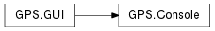
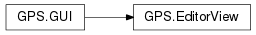
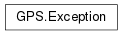
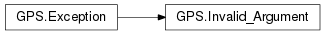
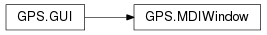
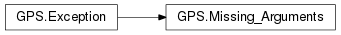
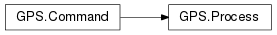
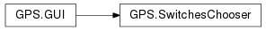
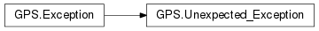

17. Scripting API reference for GPS¶
This package groups all the classes and functions exported by the GNAT Programming System.
These functions are made available through various programming languages (Python and the GPS shell at the moment). The documentation in this package is mostly oriented towards Python, but can also be used as a reference for the GPS shell.
17.1. Function description¶
For all functions, the list of parameters is specified. The first parameter is often called “self”, and refers to the instance of the class to which the method applies. In Python, the parameter is generally put before the method’s name, as in:
self.method(arg1, arg2)
Although it could also be called as in:
method(self, arg1, arg2)
For all other parameters, their name and type are specified. An additional default value is given when the parameter is optional. If no default value is specified, the parameter is mandatory and should always be specified. The name of the parameter is relevant if you chose to use Python’s named parameters feature, as in:
self.method(arg1="value1", arg2="value2")
which makes the call slightly more readable. The method above would be defined with three parameters in this documentation (resp. “self”, “arg1” and “arg2”).
Some examples are also provides for several functions, to help clarify the use of the function.
17.2. User data in instances¶
A very useful feature of Python is that all class instances can be associated
with any number of user data fields. For example, if you create an instance
of the class GPS.EditorBuffer, you can associate two fields “field1”
and “field2” to it (the names and number are purely for demonstration
purposes, and you can use your own), as in:
ed = GPS.EditorBuffer.get(GPS.File("a.adb"))
ed.field1 = "value1"
ed.field2 = 2
GPS takes great care for most classes to always return the same Python
instance for a given GUI object. For example, if you were to get another
instance of GPS.EditorBuffer for the same file as above, you would
receive the same Python instance and thus the two fields are available to
you, as in:
ed = GPS.EditorBuffer.get(GPS.File("a.adb"))
# ed.field1 is still "value1"
This is a very convenient way to store your own data associated with the various objects exported by GPS. These data cease to exist when the GPS object itself is destroyed (for instance when the editor is closed in the example above).
17.3. Hooks¶
In many cases, you need to connect to specific hooks exported by GPS to be
aware of events happening in GPS (such as the loading of a file or closing
a file). These hooks and their use are described in the GPS manual (see
also the GPS.Hook class).
Here is a small example, where the function on_gps_started() is called
when the GPS window is fully visible to the user:
import GPS
def on_gps_started(hook):
pass
GPS.Hook("gps_started").add(on_gps_started)
The list of parameters for the hooks is described for each hook below. The first parameter is always the name of the hook, so that the same function can be used for multiple hooks if necessary.
There are two categories of hooks: the standard hooks and the action hooks. The former return nothing, the latter return a boolean indicating whether your callback was able to perform the requested action. They are used to override some of GPS’s internal behavior.
17.4. Functions¶
-
GPS.add_location_command(command)¶ Adds a command to the navigation buttons in the toolbar. When the user presses the Back button, this command is executed and puts GPS in a previous state. This is, for example, used while navigating in the HTML browsers to handle their Back button.
Parameters: command – A string
-
GPS.base_name(filename)¶ Returns the base name for the given full path name.
Parameters: filename – A string
-
GPS.cd(dir)¶ Changes the current directory to
dir.Parameters: dir – A string
-
GPS.compute_xref()¶ Updates the cross-reference information stored in GPS. This needs to be called after major changes to the sources only, since GPS itself is able to work with partially up-to-date information
-
GPS.compute_xref_bg()¶ Updates cross-reference information stored in GPS in the background.
See also
-
GPS.contextual_context()¶ Returns the context at the time the contextual menu was open.
This function only returns a valid context while the menu is open or while an action executed from that menu is being executed. You can store your own data in the returned instance so that, for example, you can precompute some internal data in the filters for the contextual actions (see <filter> in the XML files) and reuse that precomputed data when the menu is executed. See also the documentation for the “contextual_menu_open” hook.
Returns: An instance of GPS.ContextSee also
# Here is an example that shows how to precompute some data when we # decide whether a menu entry should be displayed in a contextual menu, # and reuse that data when the action executed through the menu is # reused. import GPS def on_contextual_open(name): context = GPS.contextual_context() context.private = 10 GPS.Console().write("creating data " + `context.private` + '\n') def on_contextual_close(name): context = GPS.contextual_context() GPS.Console().write("destroying data " + `context.private` + '\n') def my_own_filter(): context = GPS.contextual_context() context.private += 1 GPS.Console().write("context.private=" + `context.private` + '\n') return 1 def my_own_action(): context = GPS.contextual_context() GPS.Console().write("my_own_action " + `context.private` + '\n') GPS.parse_xml(''' <action name="myaction%gt;" <filter shell_lang="python" shell_cmd="contextual.my_own_filter()" /> <shell lang="python">contextual.my_own_action()</shell> </action> <contextual action="myaction"> <Title>Foo1</Title> </contextual> <contextual action="myaction"> <Title>Foo2</Title> </contextual> ''') GPS.Hook("contextual_menu_open").add(on_contextual_open) GPS.Hook("contextual_menu_close").add(on_contextual_close)
# The following example does almost the same thing as the above, but # without relying on the hooks to initialize the value. We set the # value in the context the first time we need it, instead of every # time the menu is opened. import GPS def my_own_filter2(): try: context = GPS.contextual_context() context.private2 += 1 except AttributeError: context.private2 = 1 GPS.Console().write("context.private2=" + `context.private2` + '\n') return 1 def my_own_action2(): context = GPS.contextual_context() GPS.Console().write( "my_own_action, private2=" + `context.private2` + '\n') GPS.parse_xml(''' <action name="myaction2"> <filter shell_lang="python" shell_cmd="contextual.my_own_filter2()" /> <shell lang="python">contextual.my_own_action2()</shell> </action> <contextual action="myaction2"> <Title>Bar1</Title> </contextual> <contextual action="myaction2"> <Title>Bar2</Title> </contextual> ''')
-
GPS.current_context(refresh=False)¶ Returns the current context in GPS. This is the currently selected file, line, column, project, etc. depending on what window is currently active. From one call of this function to the next, a different instance is returned, so you should not store your own data in the instance, since you will not be able to recover it later on
Parameters: refresh (boolean) – If false, the last compute context is returned. The context is set by the views whenever their selection change. You can however set this parameter to true to force a recomputation of the context. This is only useful when your script has executed a number of commands and needs to ensure that the context is properly refresh synchronously. Returns: An instance of GPS.ContextSee also
GPS.Editor.get_line()GPS.MDI.current:()Access the current window
-
GPS.delete(name)¶ Deletes the file or directory
namefrom the file system.Parameters: name – A string
-
GPS.dir(pattern='')¶ Lists files matching
pattern(all files by default).Parameters: pattern – A string Returns: A list of strings
-
GPS.dir_name(filename)¶ Returns the directory name for the given full path name.
Parameters: filename – A string
-
GPS.dump(string, add_lf=False)¶ Dumps
stringto a temporary file. Return the name of the file. Ifadd_lfis True, appends a line feed at end of the name.Parameters: - string – A string
- add_lf – A boolean
Returns: A string, the name of the output file
-
GPS.dump_file(text, filename)¶ Writes text to the file specified by
filename. This is mostly intended for poor shells like the GPS shell which do not have better solutions. In Python, you should use its own mechanisms.Parameters: - text – A string
- filename – A string
-
GPS.exec_in_console(noname)¶ This function is specific to Python. It executes the string given in argument in the context of the GPS Python console. If you use the standard Python
exec()function instead, it only modifies the current context, which generally has no impact on the GPS console itself.Parameters: noname – A string # Import a new module transparently in the console, so that users can # immediately use it GPS.exec_in_console("import time")
-
GPS.execute_action(action, *args)¶ Executes one of the actions defined in GPS. Such actions are either predefined by GPS or defined by the users through customization files. See the GPS documentation for more information on how to create new actions. GPS waits until the command completes to return control to the caller, whether you execute a shell command or an external process.
The action’s name can start with a ‘/’, and be a full menu path. As a result, the menu itself will be executed, just as if the user had pressed it.
The extra arguments must be strings, and are passed to the action, which can use them through $1, $2, etc.
The list of existing actions can be found using the menu and opening the General-> Key Shortcuts section.
The action is not executed if the current context is not appropriate for it
Parameters: - action – Name of the action to execute
- args – Any number of string parameters
See also
GPS.execute_action(action="Split vertically") # will split the current window vertically
-
GPS.execute_asynchronous_action(action, *args)¶ Like
GPS.execute_action(), but commands that execute external applications or menus are executed asynchronously: this function immediately returns even though external application may not have completed its execution.Parameters: - action – Name of the action to execute
- args – Any number of string parameters
See also
-
GPS.exit(force=False, status='0')¶ Exits GPS, asking for confirmation if any file is currently modified and unsaved. If
forceis True, no check is done.statusis the exit status to return to the calling shell. 0 means success on most systems.Parameters: - force – A boolean
- status – An integer
-
GPS.freeze_prefs()¶ Prevents the signal “preferences_changed” from being emitted. Call
thaw_prefs()to unfreeze.Freezing/thawing this signal is useful when you are about to modify a large number of preferences in one batch.
See also
-
GPS.get_build_mode()¶ Returns the name of the current build mode. Returns an empty string if no mode is registered.
-
GPS.get_build_output(target_name, shadow, background, as_string)¶ Returns the result of the last compilation command.
Parameters: - target_name – (optional) a string
- shadow – (optional) a Boolean, indicating whether we want the output of shadow builds
- background – (optional) a Boolean, indicating whether we want the output of background builds
- as_string – (optional) a Boolean, indicating whether the output should be returned as a single string. By default the output is returned as a list in script languages that support it
Returns: A string or list, the output of the latest build for the corresponding target
-
GPS.get_home_dir()¶ Returns the directory that contains the user-specific files. This string always ends with a directory separator.
Returns: The user’s GPS directory See also
log = GPS.get_home_dir() + "log" # will compute the name of the log file generated by GPS
-
GPS.get_runtime()¶ Returns the runtime currently set in the project or the GPS interface.
Returns: a string
-
GPS.get_system_dir()¶ Returns the installation directory for GPS. This string always ends with a directory separator.
Returns: The install directory for GPS See also
html = GPS.get_system_dir() + "share/doc/gps/html/gps.html" # will compute the location of GPS's documentation
-
GPS.get_target()¶ Returns the target currently set in the project or the GPS interface.
Returns: a string
-
GPS.get_tmp_dir()¶ Returns the directory where gps creates temporary files. This string always ends with a directory separator.
Returns: The install directory for GPS
-
GPS.getenv(key)¶ Gets the value of the given environment variable.
Parameters: key – A string Returns: a string
-
GPS.insmod(shared_lib, module)¶ Dynamically registers a new module, reading its code from
shared_lib.The library must define the following two symbols:
- _init: This is called by GPS to initialize the library itself
- __register_module: This is called to do the actual module registration,
and should call the
Register_Module()function in the GPS source code.
This is work in progress, and not fully supported on all systems.
Parameters: - shared_lib – Library containing the code of the module
- module – Name of the module
See also
-
GPS.is_server_local(server)¶ Indicates where the
serveris the local machine.Parameters: server – The server. Possible values are “Build_Server”, “Debug_Server”, “Execution_Server” and “Tools_Server” Returns: A boolean
-
GPS.last_command()¶ Returns the name of the last action executed by GPS. This name is not ultra-precise: it is accurate only when the action is executed through a key binding. Otherwise, an empty string is returned. However, the intent is for a command to be able to check whether it is called multiple times consecutively. For this reason, this function returns the command set by
GPS.set_last_command(), if any.Returns: A string See also
def kill_line(): '''Emulates Emacs behavior: when called multiple times, the cut line must be appended to the previously cut one.''' # The name of the command below is unknown to GPS. This is just a # string we use in this implementation to detect multiple # consecutive calls to this function. Note that this works whether # the function is called from the same key binding or not and from # the same GPS action or not append = GPS.last_command() == "my-kill-line": GPS.set_last_command("my-kill-line")
-
GPS.lookup_actions()¶ Returns the list of all known GPS actions, not including menu names. All actions are lower-cased, but the order of the list is not significant.
Returns: A list of strings See also
-
GPS.lookup_actions_from_key(key)¶ Given a key binding, for example “control-x control-b”, returns the list of actions that could be executed. Not all actions would be executed, however, since only the ones for which the filter matches are executed. The names of the actions are always in lower case.
Parameters: key – A string Returns: A list of strings See also
-
GPS.ls(pattern='')¶ Lists the files matching
pattern(all files by default).Parameters: pattern – A string Returns: A list of strings
-
GPS.lsmod()¶ Returns the list of modules currently registered in GPS. Each facility in GPS is provided in a separate module so that users can choose whether to activate specific modules or not. Some modules can also be dynamically loaded.
Returns: List of strings See also
-
GPS.parse_xml(xml)¶ Loads an XML customization string. This string should contain one or more toplevel tags similar to what is normally found in custom files, such as <key>, <alias>, <action>.
Optionally you can also pass the full contents of an XML file, starting with the <?xml?> header.
Parameters: xml – The XML string to parse GPS.parse_xml( '''<action name="A"><shell>my_action</shell></action> <menu action="A"><title>/Edit/A</title></menu>''') Adds a new menu in GPS, which executes the command my_action
-
GPS.process_all_events()¶ Process all the graphical events that have been queue by the system: these events typically involve demands to refresh part of the screen, handle key or mouse events, ... This is mostly useful when writing automatic tests. In plugins, the recommand approach is instead to create actions via
gps_utils.interactive(), and run them in the background withGPS.execute_action(). Another possible approach is to use python generators with the yield keyword.
-
GPS.pwd()¶ Prints name of the current (working) directory.
Returns: A string This function has the same return value as the standard Python function
os.getcwd(). The current directory can also be changed through a call to os.chdir(“dir”).
-
GPS.repeat_next(count)¶ Executes the next action
counttimes.Parameters: count – An integer
-
GPS.reset_xref_db()¶ Empties the internal xref database for GPS. This is rarely useful, unless you want to force GPS to reload everything.
-
GPS.save_persistent_properties()¶ Forces an immediate save of the persistent properties that GPS maintains for files and projects (for example the text encoding, the programming language, and the debugger breakpoints).
This is done automatically by GPS on exit, so you normally do not have to call this subprogram.
synthesize and queue an event to simulate a mouse action. This event will be processed later by gtk+ (unless you call
gps.process_all_events()). as much as possible, this function should be avoided and you should usegps.execute_action()instead.Parameters: - type (int) – the type of event. This defaults to a button press.
- window (GUI) – the window to which the event should be sent. This defaults to the window that currently has the focus.
- state (int) – the state of the modified keys (control, shift,...)
-
GPS.send_crossing_event(window=None, type=None, x=1, y=1, state=0)¶ synthesize and queue an event to simulate a mouse movement. This event will be processed later by gtk+ (unless you call
gps.process_all_events()). as much as possible, this function should be avoided and you should usegps.execute_action()instead.Parameters: - type (int) – the type of event. This defaults to an Enter notify event.
- window (GUI) – the window to which the event should be sent. This defaults to the window that currently has the focus.
- state (int) – the state of the modified keys (control, shift,...)
-
GPS.send_key_event(keyval, window=None, primary=False, alt=False, shift=False, control=False, hardware_keycode=0)¶ synthesize and queue an event to simulate a key press. This event will be processed later by gtk+ (unless you call
gps.process_all_events()). as much as possible, this function should be avoided and you should usegps.execute_action()instead.Parameters: - window (GUI) – the window to which the event should be sent. This defaults to the window that currently has the focus.
- hardware_keycode – the hardware keycode associated to keyval
-
GPS.set_build_mode(mode='')¶ Sets the current build mode. If
modeis not a registered mode, does nothing.Parameters: mode – Name of the mode to set
-
GPS.set_last_command(command)¶ Overrides the name of the last command executed by GPS. This new name is the one returned by
GPS.last_command()until the user performs a different action. Thus, multiple consecutive calls of the same action always return the value of thecommandparameter. See the example inGPS.last_command().Parameters: command – A string See also
-
GPS.setenv(key, value)¶ Sets the value of the given environment variable to the given value.
Parameters: - key – A string
- value – A string
-
GPS.supported_languages()¶ Returns the list of languages for which GPS has special handling. Any file can be opened in GPS, but some extensions are recognized specially by GPS to provide syntax highlighting, cross-references, or other special handling. See the GPS documentation on how to add support for new languages in GPS.
The returned list is sorted alphabetically and the name of the language has been normalized (starts with an upper case character and is lowercase for the rest except after an underscore character).
Returns: List of strings GPS.supported_languages()[0] => return the name of the first supported language
-
GPS.thaw_prefs()¶ Re-enables calling the “preferences_changed” hook.
See also
-
GPS.version()¶ Returns the GPS version as a string.
Returns: A string
-
GPS.xref_db()¶ Returns the location of the xref database. This is an sqlite database created by GPS when it parses the
.alifiles generated by the compiler.Its location depends mainly on the optional IDE’Artifacts_Dir attribute, which defaults to the project’s object directory if not specified.
The location can also depend on the optional IDE’Xref_Database attribute which specifies a complete path to the cross-references database file.
Returns: a string
17.5. Classes¶
17.5.1. GPS.Action¶
-
class
GPS.Action¶ This class gives access to the interactive commands in GPS. These are the commands to which the user can bind a key shortcut or for which we can create a menu. Another way to manipulate those commands is through the XML tag <action>, but it might be more convenient to use Python since you do not have to qualify the function name.
-
__init__(name)¶ Creates a new instance of
Action. This is bound with either an existing action or with an action that will be created throughGPS.Action.create(). The name of the action can either be a simple name, or a path name to reference a menu, such as /Edit/Copy.Parameters: name (string) – A string
Add a new button in some toolbars. When this button is clicked, it executes the action from self.
Parameters: - toolbar (string) – identifies which toolbar the action should be added to. The default is to add to the main toolbar for the main GPS window and all floating windows. Other possible names are the names of the various views, as listed in the /Tools/Views menu.
- section (string) – identifies which part of the toolbar the button should be added to. By default, the button is added at the end of the toolbar. However, some toolbars define various sections (see the menus.xml file for valid section names).
- group (string) – when a group is specified, the new button contains a popup menu. A long click on the menu displays a popup with all actions in that group. A short click executes the last action from this group.
- label (string) – use this as a label for the button, when the user choses to display labels in toolbars. The default is to use the action’s name.
- icon (string) – override the default icon registered for the action.
- hide (bool) – if the action is disabled or not applicable to the current context, the button will be hidden instead of simply be disabled.
# The following adds a 'Copy to clipboard' button in the Messages # window's local toolbar: GPS.Action("Copy to Clipboard").button( toolbar='Messages', label='Copy')
-
can_execute()¶ Return True if the action can be executed in the current context.
Return type: boolean
-
contextual(path, ref='', add_before=True, group=0, static_path='')¶ Create a new contextual menu associated with the action.
Parameters: - path – A string or a function(GPS.Context):string, which describes the path for the contextual menu.
- ref (string) – A string
- group (int) – the group of items in the contextual menu. These groups are ordered numerically, so that all items in group 0 appear before items in group 1, and so on.
- add_before (boolean) – A boolean
- :param static_path A string which describes the path for the contextual
- menu when path is a function.
-
create(on_activate, filter='', category='General', description='', icon='', for_learning=False)¶ Export the function
on_activate()and make it interactive so that users can bind keys and menus to it. The function should not require any argument, since it will be called with none.The package
gps_utils.pyprovides a somewhat more convenient Python interface to make functions interactive (see gps_utils.interactive).Parameters: - on_activate (() -> None) – A subprogram
- filter (string|(Context) -> boolean) – A string or subprogram
Either the name of a predefined filter (a string), or a
subprogram that receives the context as a parameter, and should
return True if the command can be executed within that
context. This is used to disable menu items when they are not
available.
See
GPS.Filter.list()to retrieve the list of all defined named filters. - category (str) – Category of the command in the Key Shortcuts editor.
- description (str) – Description of the command that appears in the dialog or in tooltips. If you are using Python, a convenient value is on_activate.__doc__, which avoids duplicating the comment.
- icon (str) – Name of the icon to use for this action (in toolbars, dialogs, ...). This is the name of an icon file in the GPS icons directory.
- for_learning (bool) – Set it to True if you want to display this
action in the Learn view.
-
destroy_ui()¶ Remove all elements associated with this action (menus, toolbar buttons, contextual menus,...). The action itself is not destroyed
-
disable(disabled=True)¶ Prevent the execution of the action, whether through menus, contextual menus, key shortcuts,...
Parameters: disabled (bool) – whether to disable or enable
-
execute_if_possible()¶ Execute the action if its filter matches the current context. If it could be executed, True is returned, otherwise False is returned.
Return type: boolean
-
exists()¶ Returns a Boolean indicating if an action has already been created for this name.
-
get_keys()¶ Return the key shortcuts associated to the given action. The returned string should only be used for displaying purposes.
Return type: a string
-
key(key, exclusive=True)¶ Associate a default key binding with the action. This is ignored if the user defined his own key binding. You can experiment with possible values for keys by using the /Edit/Key Shortcuts dialog.
Parameters: - key (string) – A string
- exclusive (bool) – if True, the shortcut will no longer be associated with any action is was previously bound to. If False, the shortcut will be associated with multiple action. The first one for which the filter matches is executed when the user presses those keys.
Create a new menu associated with the command. This function is somewhat a duplicate of
GPS.Menu.create(), but with one major difference: the callback for the action is a python function that takes no argument, whereas the callback forGPS.Menu()receives one argument.Parameters: - path (string) – A string If path ends with a ‘-‘, a separator line is created, instead of a menu item with text.
- ref (string) – A string
- add_before (boolean) – A boolean
Returns: The instance of GPS.Menu that was created
Return type:
-
17.5.3. GPS.Analysis¶
-
class
GPS.Analysis¶ Used to interface external analysis tools and display their messages in a global analysis report.
See
GPS.AnalysisToolfor more information.-
static
display_report(tool=None)¶ Display the GPS analysis report. Make sure to add your messages before calling this function in order to display them.
When the optional
GPS.AnalysisToolparameter is specified, only this tool will be selected in the Filters view.:param
GPS.AnalysisTooltool: The tool that will be exclusively selected.
-
static
17.5.4. GPS.AnalysisTool¶
-
class
GPS.AnalysisTool¶ This class is used to interface external analysis tools with GPS. A
GPS.AnalysisToolshould define some rules that will be later associated to the messages retrieved from the analysis tool’s output. The messages added via this class will then be displated in the GPS Analysis Report.See
GPS.Analysis.display_report()to display the messages added for this analysis tool.-
__init__(name)¶ Creates a
GPS.AnalysisToolobject, associating it to a name.Parameters: name (string) – The name of the analysis tool.
-
add_message(msg, rule_id)¶ Adds the given message to the list of messages that will be displayed in the GPS Analysis Report. The message will be associated to this tool and to the rule identified by
rule_id.:param
GPS.Messagemsg: The message. :param string rule_id: The id of the rule associated to the message.
-
add_rule(name, id)¶ Adds a rule for the
GPS.AnalysisTool. A rule is defined by a name and a unique ID. Rules will then be used to filter the analysys tool’s messages in the GPS Analysis Report.Parameters: - name (string) – The rule’s name.
- id (string) – The rule’s id.
-
17.5.5. GPS.Bookmark¶
-
class
GPS.Bookmark¶ This class provides access to GPS’s bookmarks. These are special types of markers that are saved across sessions, and can be used to save a context within GPS. They are generally associated with a specific location in an editor, but can also be used to locate special boxes in a graphical browser, for example.
-
note= ''¶ The bookmark’s note value - A string.
-
__init__()¶ This function prevents the creation of a bookmark instance directly. You must use
GPS.Bookmark.get()instead, which always returns the same instance for a given bookmark, thus allowing you to save your own custom data with the bookmarkSee also
-
static
create(name)¶ This function creates a new bookmark at the current location in GPS. If the current window is an editor, it creates a bookmark that will save the exact line and column, so the user can go back to them easily. Name is the string that appears in the bookmarks window, and that can be used later to query the same instance using
GPS.Bookmark.get(). This function emits the hook bookmark_added.Parameters: name (string) – The name of the bookmark Return type: GPS.BookmarkSee also
GPS.MDI.get("file.adb").raise_window() bm = GPS.Bookmark.create("name")
-
delete()¶ Delete an existing bookmark. This emits the hook
bookmark_removed.
-
static
get(name)¶ Retrieves a bookmark by its name. If no such bookmark exists, an exception is raised. The same instance of :class:GPS.Bookmark is always returned for a given bookmark, so you can store your own user data within the instance. Note however that this custom data will not be automatically preserved across GPS sessions, so you may want to save all your data when GPS exits
Parameters: name (string) – The name of the bookmark Return type: GPS.BookmarkSee also
GPS.Bookmark.get("name").my_own_field = "GPS" print GPS.Bookmark.get("name").my_own_field # prints "GPS"
-
goto()¶ Changes the current context in GPS so it matches the one saved in the bookmark. In particular, if the bookmark is inside an editor, this editor is raised, and the cursor moved to the correct line and column. You cannot query directly the line and column from the bookmark, since these might not exist, for instance when the editor points inside a browser.
-
static
list()¶ Return the list of all existing bookmarks.
Return type: [:class`GPS.Bookmark`] # The following command returns a list with the name of all # existing purposes names = [bm.name() for bm in GPS.Bookmark.list()]
-
name()¶ Return the current name of the bookmark. It might not be the same one that was used to create or get the bookmark, since the user might have used the bookmarks view to rename it.
Return type: string
-
rename(name)¶ Rename an existing bookmark. This updates the bookmarks view automatically, and emits the hooks
bookmark_removedandbookmark_added.Parameters: name (string) – The new name of the bookmark
-
17.5.6. GPS.BuildTarget¶
-
class
GPS.BuildTarget¶ This class provides an interface to the GPS build targets. Build targets can be configured through XML or through the Target Configuration dialog.
-
__init__(name)¶ Initializes a new instance of the class
BuildTarget.namemust correspond to an existing target.Parameters: name (string) – Name of the target associated with this instance compile_file_target=GPS.BuildTarget("Compile File") compile_file_target.execute()
-
clone(new_name, new_category)¶ Clone the target to a new target. All the properties of the new target are copied from the target. Any graphical element corresponding to this new target is created.
Parameters: - new_name (string) – The name of the new target
- new_category (string) – The category in which to place the new target
-
execute(main_name='', file='', force=False, extra_args='', build_mode='', synchronous=True, directory='', quiet=False, on_exit=None)¶ Launch the build target.
Parameters: - main_name (string) – The base name of the main source to build, if this target acts on a main file.
- file (
GPS.File) – The file to build if this targets acts on a file. - force (bool) – If True, this means that the target should be launched directly, even if its parameters indicate that it should be launched through an intermediary dialog.
- extra_args (string|list[string]) – any extra parameters to pass to the command line. When a single string is passed, it is split into multiple arguments.
- build_mode (string) – Indicates build mode to be used for build.
- synchronous (bool) – if False, build target is launched asynchronously.
compilation_finished hookwill be called when build target execution is completed. - directory (string) – A String
- quiet (bool) – A Boolean
- on_exit –
A subprogram which will be called when the build target finishes executing. This subprogram takes as parameter an integer, representing the exit code of the command. For instance:
- GPS.BuildTarget(“Custom...”).execute(
- synchronous=True, on_exit=lambda status: GPS.MDI.dialog(“status is %s” % status))
-
get_command_line()¶ Returns a string list containing the current arguments of this BuildTarget.
Note that these arguments are not expanded.
-
hide()¶ Hide target from menus and toolbar.
-
remove()¶ Remove target from the list of known targets. Any graphical element corresponding to this target is also removed.
-
show()¶ Show target in menus and toolbar where it was before hiding.
-
17.5.7. GPS.Button¶
17.5.8. GPS.Clipboard¶
-
class
GPS.Clipboard¶ This class provides an interface to the GPS clipboard. This clipboard contains the previous selections that were copied or cut from a text editor. Several older selections are also saved so that they can be pasted later on.
-
static
contents()¶ This function returns the contents of the clipboard. Each item in the list corresponds to a past selection, the one at position 0 being the most recent. If you want to paste text in a buffer, you should paste the text at position
GPS.Clipboard.current()rather than the first in the list.Return type: [string]
-
static
copy(text, append=False)¶ Copies a given static text into the clipboard. It is better in general to use
GPS.EditorBuffer.copy(), but it might happen that you need to append text that do not exist in the buffer.Parameters: - text (string) – The content you want to put int the clipboard.
- append (boolean) – Wether you want to append to the current clipboard content or not.
See also
-
static
current()¶ This function returns the index, in
GPS.Clipboard.contents(), of the text that was last pasted by the user. If you were to select the menu /Edit/Paste, that would be the text pasted by GPS. If you select /Edit/Paste Previous, current will be incremented by 1, and the next selection in the clipboard is pasted.Return type: integer
-
static
merge(index1, index2)¶ This function merges two levels of the clipboard, so that the one at index
index1now contains the concatenation of both. The one atindex2is removed.Parameters: - index1 (integer) – A null or positive integer
- index2 (integer) – A null or positive integer
-
static
17.5.9. GPS.CodeAnalysis¶
-
class
GPS.CodeAnalysis¶ This class is a toolset that allows handling
CodeAnalysisinstances.-
__init__()¶ Raises an exception to prevent users from creating new instances.
-
add_all_gcov_project_info()¶ Adds coverage information for every source files referenced in the current project loaded in GPS and every imported projects.
-
add_gcov_file_info(src, cov)¶ Adds coverage information provided by parsing a
.gcovfile. The data is read from the cov parameter that should have been created from the specified src file.Parameters: a = GPS.CodeAnalysis.get("Coverage Report") a.add_gcov_file_info(src=GPS.File("source_file.adb"), cov=GPS.File("source_file.adb.gcov"))
-
add_gcov_project_info(prj)¶ Adds coverage information of every source files referenced in the GNAT project file (
.gpr) forprj.Parameters: prj (A GPS.Fileinstance) – The corresponding project file
-
clear()¶ Removes all code analysis information from memory.
-
dump_to_file(xml)¶ Create an XML-formated file containing a representation of the given code analysis.
Parameters: xml ( GPS.File) – The output xml fileSee also
a = GPS.CodeAnalysis.get ("Coverage") a.add_all_gcov_project_info () a.dump_to_file (xml=GPS.File ("new_file.xml"))
-
static
expand_line_cov_info(file, line)¶ Expand the coverage information at line of file
Parameters: - file (
GPS.File) – The file - line (A positive integer) – The line number
- file (
-
static
get(name)¶ Creates an empty code analysis data structure. Data can be put in this structure by using one of the primitive operations.
Parameters: name (string) – The name of the code analysis data structure to get or create Returns: An instance of GPS.CodeAnalysisassociated to a code analysis data structure in GPS.Return type: GPS.CodeAnalysisa = GPS.CodeAnalysis.get("Coverage") a.add_all_gcov_project_info() a.show_coverage_information()
-
hide_coverage_information()¶ Removes from the Locations view any listed coverage locations, and remove from the source editors their annotation column if any.
-
load_from_file(xml)¶ Replace the current coverage information in memory with the given XML-formated file one.
Parameters: xml ( GPS.File) – The source xml fileSee also
a = GPS.CodeAnalysis.get ("Coverage") a.add_all_gcov_project_info () a.dump_to_file (xml=GPS.File ("new_file.xml")) a.clear () a.load_from_file (xml=GPS.File ("new_file.xml"))
-
show_analysis_report()¶ Displays the data stored in the
CodeAnalysisinstance into a new MDI window. This window contains a tree view that can be interactively manipulated to analyze the results of the code analysis.
-
show_coverage_information()¶ Lists in the Locations view the lines that are not covered in the files loaded in the
CodeAnalysisinstance. The lines are also highlighted in the corresponding source file editors, and an annotation column is added to the source editors.
-
17.5.10. GPS.Codefix¶
-
class
GPS.Codefix¶ This class gives access to GPS’s features for automatically fixing compilation errors.
-
__init__(category)¶ Returns the instance of codefix associated with the given category.
Parameters: category (string) – The corresponding category
-
error_at(file, line, column, message='')¶ Returns a specific error at a given location. If message is null, then the first matching error will be taken. None is returned if no such fixable error exists.
Parameters: - file (
GPS.File) – The file where the error is - line (integer) – The line where the error is
- column (integer) – The column where the error is
- message (string) – The message of the error
Return type: - file (
-
errors()¶ Lists the fixable errors in the session.
Return type: list[ GPS.CodefixError]
-
static
parse(category, output, regexp='', file_index=-1, line_index=-1, column_index=-1, style_index=-1, warning_index=-1)¶ Parses the output of a tool and suggests auto-fix possibilities whenever possible. This adds small icons in the location window, so that the user can click on it to fix compilation errors. You should call
Locations.parse()with the same output prior to calling this command.The regular expression specifies how locations are recognized. By default, it matches file:line:column. The various indexes indicate the index of the opening parenthesis that contains the relevant information in the regular expression. Set it to 0 if that information is not available.
Access the various suggested fixes through the methods of the
Codefixclass.Parameters: - category (string) – A string
- output (string) – A string
- regexp (string) – A string
- file_index (integer) – An integer
- line_index (integer) – An integer
- column_index (integer) – An integer
- style_index (integer) – An integer
- warning_index (integer) – An integer
See also
-
17.5.11. GPS.CodefixError¶
-
class
GPS.CodefixError¶ This class represents a fixable error in the compilation output.
-
__init__(codefix, file, message='')¶ Describes a new fixable error. If the message is not specified, the first error at that location is returned.
Parameters: - codefix (
GPS.Codefix) – The owning codefix instance - file (
GPS.FileLocation) – The location of the error - message (string) – The message of the error
- codefix (
-
fix(choice=0)¶ Fixes the error, using one of the possible fixes. The index given in parameter is the index in the list returned by
possible_fixes(). By default, the first choice is taken. Choices start at index 0.Parameters: choice (integer) – Index of the fix to apply, see output of GPS.CodefixError.possible_fixes()for err in GPS.Codefix ("Builder results").errors(): print err.fix() # will automatically fix all fixable errors in the last compilation # output
-
location()¶ Returns the location of the error.
Return type: GPS.FileLocation
-
message()¶ Returns the error message, as issue by the tool.
Return type: string
-
possible_fixes()¶ Lists the possible fixes for the specific error.
Return type: [string] for err in GPS.Codefix ("Builder results").errors(): print err.possible_fixes()
-
17.5.12. GPS.Command¶
-
class
GPS.Command¶ Interface to GPS command. This class is abstract, and can be subclassed.
-
static
get(name)¶ Returns the list of commands of the name given in the parameter, scheduled or running in the tasks view
Parameters: name (string) – A string Return type: list[ GPS.Command]
-
get_result()¶ Returns the result of the command, if any. Must be overriden by children.
-
interrupt()¶ Interrupts the current command.
-
static
list()¶ Returns the list of commands scheduled or running in the tasks view.
Return type: [ GPS.Command]
-
name()¶ Return The name of the command
-
progress()¶ Returns a list representing the current progress of the command. If current = total, the command has completed.
Returns: A list [current, total] Return type: [int]
-
static
17.5.13. GPS.CommandWindow¶
-
class
GPS.CommandWindow¶ This class gives access to a command-line window that pops up on the screen. This window is short-lived (in fact there can be only one such window at any given time) and any key press is redirected to that window. It can be used to interactively query a parameter for an action, for example.
Among other things, it is used in the implementation of the interactive search facility, where each key pressed should be added to the search pattern instead of to the editor.
class Isearch(CommandWindow): def __init__(self): CommandWindow.__init__( self, prompt="Pattern", on_key=self.on_key, on_changed=self.on_changed) def on_key(self, input, key, cursor_pos): if key == "control-w": .... # Copy current word from editor into the window self.write(input[:cursor_pos + 1] + "FOO" + input[cursor_pos + 1:]) return True ## No further processing needed return False def on_changed(self, input, cursor_pos): ## Search for next occurrence of input in buffer ....
-
__init__(prompt='', global_window=False, on_changed=None, on_activate=None, on_cancel=None, on_key=None, close_on_activate=True)¶ Initializes an instance of a command window. An exception is raised if such a window is already active in GPS. Otherwise, the new window is popped up on the screen. Its location depends on the
global_windowparameter.Parameters: - prompt (string) – the short string displayed just before the command line itself. Its goal is to indicate to the user what he is entering.
- global_window (bool) – If true, the command window is displayed at the bottom of the GPS window and occupies its whole width. If false, it is displayed at the bottom of the currently selected window.
- on_changed ((string, int) -> None) – A subprogram, is called when the user has entered new characters in the command line. This function is given two parameters: the current input string, and the last cursor position in this string. See the example above on how to get the part of the input before and after the cursor.
- on_activate ((string) -> None) – A subprogram, is called when the user pressed enter. The command window has already been closed at that point if close_on_activate is True and the focus given back to the initial MDI window that had it. This callback is passed a single parameter, the final input string.
- on_cancel ((string) -> None) – A subprogram, is called when the user pressed a key
that closed the dialog, for example
Esc. It is passed a single parameter, the final input string. This callback is also called when you explicitly destroy the window yourself by callingself.destroy(). - on_key ((string, int) -> None) – Is called when the user has pressed a new key on his keyboard but before the corresponding character has been added to the command line. This can be used to filter out some characters or provide special behavior for some key combination (see the example above). It is passed three parameters, the current input string, the key that was pressed, and the current cursor position.
- close_on_activate (bool) – A boolean, determines wether the command window has to be closed on pressing enter.
-
read()¶ Returns the current contents of the command window.
Return type: string
-
set_background(color='')¶ Changes the background color of the command window. This can be used to make the command window more obvious or to highlight errors by changing the color. If the color parameter is not specified, the color reverts to its default.
Parameters: color (string) – The new background color
-
set_prompt(prompt)¶ Changes the prompt displayed before the text field.
Parameters: prompt (string) – The new prompt to display
-
write(text, cursor=-1)¶ This function replaces the current content of the command line. As a result, you should make sure to preserve the character you want, as in the
on_key()callback in the example above. Calling this function also results in several calls to theon_changed()callback, one of them with an empty string (since gtk first deletes the contents and then writes the new contents).The cursor parameter can be used to specify where the cursor should be left after the insertion. -1 indicates the end of the string.
Parameters: - text (string) – A string
- cursor (integer) – An integer
-
17.5.14. GPS.Completion¶
17.5.15. GPS.Console¶
-
class
GPS.Console¶ This class is used to create and interact with the interactive consoles in GPS. It can be used to redirect the output of scripts to various consoles in GPS, or to get input from the user has needed.
# The following example shows how to redirect the output of a script to # a new console in GPS: console = GPS.Console("My_Script") console.write("Hello world") # Explicit redirection # The usual Python's standard output can also be redirected to this # console: sys.stdout = GPS.Console("My_Script") print "Hello world, too" # Implicit redirection sys.stdout = GPS.Console("Python") # Back to python's console sys.stdout = GPS.Console() # Or back to GPS's console
# The following example shows an integration between the GPS.Console # and GPS.Process classes, so that a window containing a shell can be # added to GPS. # Note that this class is in fact available directly through "from # gps_utils.console_process import Console_Process" if you need it in # your own scripts. import GPS class Console_Process(GPS.Console, GPS.Process): def on_output(self, matched, unmatched): self.write(unmatched + matched) def on_exit(self, status, unmatched_output): try: self.destroy() except: pass # Might already have been destroyed def on_input(self, input): self.send(input) def on_destroy(self): self.kill() # Will call on_exit def __init__(self, command): GPS.Console.__init__( command[0], on_input=Console_Process.on_input, on_destroy=Console_Process.on_destroy, force=True) GPS.Process.__init__( self, command, ".+", on_exit=Console_Process.on_exit, on_match=Console_Process.on_output) bash = Console_Process(["/bin/sh", "-i"])
-
__init__(name, force=False, on_input=None, on_destroy=None, accept_input=True, on_resize=None, on_interrupt=None, on_completion=None, on_key='', manage_prompt=True, ansi=False, toolbar_name='', give_focus_on_create=True)¶ Creates a new instance of
GPS.Console. GPS tries to reuse any existing console with the same name. If none exists yet, or the parameter force is set to True, GPS creates a new console.You cannot create the Python and Shell consoles through this call. If you try, an exception is raised. Instead, use
GPS.execute_action()(“/Tools/Consoles/Python”), and then get a handle on the console throughGPS.Console. This is because these two consoles are tightly associated with each of the scripting languages.If GPS reuses an existing console,
on_input()overrides the callback that was already set on the console, whileon_destroy()is called in addition to the one that was already set on the console.If this is not the desired behavior, you can also call
destroy()on the console and call the constructor again.The function
on_input()is called whenever the user has entered a new command in the console and pressed <enter> to execute it. It is called with the following parameters:- $1: The instance of
GPS.Console - $2: The command to execute
See the function
GPS.Console.set_prompt_regexp()for proper handling of input in the console.- $1: The instance of
The subprogram
on_destroy()is called whenever the user closes the console. It is called with a single parameter:- $1: The instance of
GPS.Console
- $1: The instance of
The subprogram
on_completion()is called whenever the user pressesTabin the console. It is called with a single parameter:- $1: The instance of
GPS.Console
The default implementation inserts a tab character, but you can to add additional user input through
GPS.Console.add_input()for example.- $1: The instance of
The subprogram
on_resize()is called whenever the console is resized by the user. It is passed three parameters:- $1: the instance of
GPS.Console - $2: the number of visible rows in the console,
- $3: the number of visible columns.
This is mostly useful when a process is running in the console, in which case you can use
GPS.Process.set_size()to let the process know the size. Note that the size passed to this callback is conservative: since all characters might not have the same size, GPS tries to compute the maximal number of visible characters and pass this to the callback, but the exact number of characters might depend on the font.- $1: the instance of
The subprogram
on_interrupt()is called when the user pressesCtrl-cin the console. It receives a single parameter, the instance ofGPS.Console. By default aCtrl-cis handled by GPS itself by killing the last process that was started.As described above, GPS provides a high-level handling of consoles, where it manages histories, completion, command line editing and execution on its own through the callbacks described above. This is usually a good thing and provides advanced functionalities to some programs that lack them. However, there are cases where this gets in the way. For example, if you want to run a Unix shell or a program that manipulates the console by moving the cursor around on its own, the high-level handling of GPS gets in the way. In such a case, the following parameters can be used: on_key, manage_prompt and ansi.
ansishould be set to true if GPS should emulate an ANSI terminal. These are terminals that understand certain escape sequences that applications sent to move the cursor to specific positions on screen or to change the color and attributes of text.manage_promptshould be set to False to disable GPS’s handling of prompts. In general, this is incompatible with using theon_input()callback, since GPS no longer distinguishes what was typed by the user and what was written by the external application. This also means that the application is free to write anywhere on the screen. This should in general be set to True if you expect your application to send ANSI sequences.on_key()is a function called every time the user presses a key in the console. This is much lower-level than the other callbacks above, but if you are driving external applications you might have a need to send the keys as they happen, and not wait for a newline.on_key()receives four parameters:- $1: the instance of
GPS.Console - $2: “keycode”: this is the internal keycode for the key that the user pressed. All keys can be represented this way, but this will occasionaly be left to 0 when the user input was simulated and no real key was pressed.
- $3: “key”: this is the unicode character that the user entered. This will be 0 when the character is not printable (for example return, tab, and key up). In Python, you can manipulate it with code like unichr(key).encode("utf8") to get a string representation that can be sent to an external process
- $4: “modifier”: these are the state of the control, shift, mod1 and lock keys. This is a bitmask, where shift is 1, lock is 2, control is 4 and mod1 is 8.
- $1: the instance of
:
toolbar_nameis used to register a toolbar for the console. The given name can be used later to register toolbar items (e.g: using the GPS.Action.button function).:
give_focus_on_createis only used if a new console is being created. It should be set to True if the newly created console should receive the focus. If it’s set to False, the console will not receive the focus: its tab label will be highlighted instead.
Parameters: - name – A string
- force – A boolean
- on_input – A subprogram, see the description below
- on_destroy – A subprogram
- accept_input – A boolean
- on_resize – A subprogram
- on_interrupt – A subprogram
- on_completion – A subprogram
- on_key – A subprogram
- manage_prompt – A boolean
- ansi – A boolean
- toolbar_name – A string
- give_focus_on_create – A boolean
-
accept_input()¶ Returns True if the console accepts input, False otherwise.
Returns: A boolean
-
add_input(text)¶ Adds extra text to the console as if the user had typed it. As opposed to text inserted using
GPS.Console.write(), this text remains editable by the user.Parameters: text – A string
-
clear()¶ Clears the current contents of the console.
-
clear_input()¶ Removes any user input that the user has started typing (i.e., since the last output inserted through
GPS.Console.write()).
-
copy_clipboard()¶ Copies the selection to the clipboard.
-
create_link(regexp, on_click, foreground='blue', background='', underline=True)¶ Registers a regular expression that should be highlighted in this console to provide hyperlinks, which are searched for when calling
GPS.Console.write_with_links(). The part of the text that matches any of the link registered in the console throughGPS.Console.create_link()is highlighted in blue and underlined, just like a hyperlink in a web browser. If the user clicks on that text,on_click()is called with one parameter, the text that was clicked on. This can, for example, be used to jump to an editor or open a web browser.If the regular expression does not contain any parenthesis, the text that matches the whole regexp is highlighted as a link. Otherwise, only the part of the text that matches the first parenthesis group is highlighted (so you can test for the presence of text before or after the actual hyper link).
Parameters foreground and background specify colors to visualize matched text, while underline turns underscore on.
Parameters: - regexp – A string
- on_click – A subprogram
- foreground – A string
- background – A string
- underline – A boolean
See also
-
delete_links()¶ Drops each regular expression registered with
create_link().
-
enable_input(enable)¶ Makes the console accept or reject input according to the value of “enable”.
Parameters: enable – A boolean
-
flush()¶ Does nothing, needed for compatibility with Python’s file class.
-
get_text()¶ Returns the content of the console.
Returns: A string
-
insert_link(text, on_click)¶ Inserts the given text in the console as an hyperlink, using the default hyperlink style. If the user clicks on that text,
on_click()is called with one parameter, the text that was clicked on. This can, for example, be used to jump to an editor or open a web browser.Parameters: - text – A string
- on_click – A subprogram
-
isatty()¶ Returns True if the console behaves like a terminal. Mostly needed for compatibility with Python’s file class.
Returns: A boolean
-
read()¶ Reads the available input in the console. Currently, this behaves exactly like
readline().Returns: A String
-
readline()¶ Asks the user to enter a new line in the console, and returns that line. GPS is blocked until enter has been pressed in the console.
Returns: A String
-
select_all()¶ Selects the complete contents of the console.
-
write(text, mode='"text"')¶ Outputs some text on the console. This text is read-only. If the user started typing some text, that text is temporarily removed, the next text is inserted (read-only), and the user text is put back.
The optional parameter mode specifies the kind of the output text: “text” for ordinary messages (this is default), “log” for log messages, and “error” for error messages.
Parameters: - text – A utf8 string
- mode – A string, one of “text”, “log”, “error”
See also
Console().write( u"\N{LATIN CAPITAL LETTER E WITH ACUTE}".encode("utf-8") )
-
write_with_links(text)¶ Outputs some text on the console, highlighting the parts of it that match the regular expression registered by
GPS.Console.create_link().Parameters: text – A utf8 string import re console = GPS.Console("myconsole") console.create_link("(([\w-]+):(\d+))", open_editor) console.write_with_link("a file.adb:12 location in a file") def open_editor(text): matched = re.match("([\w+-]+):(\d+)", text) buffer = GPS.EditorBuffer.get(GPS.File (matched.group(1))) buffer.current_view().goto( buffer.at(int(matched.group(2)), 1))
-
17.5.16. GPS.Construct¶
-
class
GPS.Construct¶ One node of the semantic tree when parsing a file for a given programming language. Instances of such classes are only created by GPS internally
-
file= ''¶ The GPS.File in which the construct occurs
-
id= ''¶ Unique id for the entity
-
name= ''¶ The name of the construct
-
start= (0, 0, 0)¶ The source location for the beginning of this construct, (line, column offset)
-
__init__()¶ Instances are only created by GPS itself
-
17.5.17. GPS.ConstructsList¶
-
class
GPS.ConstructsList¶ This class is closely associated with the
GPS.Languageclass, and is used by plug-ins to describe the semantic organization in a source file.This can be used in particular to populate the Outline view for custom languages (see the
python_support.pyplugin in the GPS sources).-
add_construct(category, is_declaration, visiblity, name, profile, sloc_start, sloc_end, sloc_entity, id='')¶ Register a new semantic construct from the file.
Parameters: - category (int) – the name of the category. It should be one of the
CAT_* constants in the
constructs.pymodule. If your language has different constructs, you should map them to one of the existing categories. - is_declaration (bool) – whether this is the declaration for the entity, or a reference to it.
- visibility (int) – whether the entity is public, protected or
private. It should be one of the constants in the
constructs.pymodule. - name (str) – the name of the entity
- profile (str) – a description of its profile (the list of parameters for a subprogram, for instance).
- sloc_start ((int,int,int)) – the position at which this constructs starts. This is a tuple (line, column, offset), where offset is the number of bytes since the start of the file.
- sloc_end ((int,int,int)) – the position at which this constructs ends. This is a tuple (line, column, offset).
- sloc_entity ((int,int,int)) – the position at which the entity name starts. This is a tuple (line, column, offset).
- id (str) – a unique identifier for this identity. You can retrieve
it in calls to
GPS.Language.clicked_on_construct(), and this is used to identify overloading identifiers in the Outline view when it is refreshed.
- category (int) – the name of the category. It should be one of the
CAT_* constants in the
-
17.5.18. GPS.Context¶
-
class
GPS.Context¶ Represents a context in GPS. Depending on the currently selected window, an instance of one of the derived classes will be used.
-
module_name= None¶ The name (a string) of the GPS module which created the context.
-
__init__()¶ x.__init__(...) initializes x; see help(type(x)) for signature
-
directory()¶ Return the current directory of the context.
Return type: string
-
end_line()¶ Return the last selected line in the context.
Return type: integer
-
entity(approximate_search_fallback=True)¶ Returns the entity stored in the context. This might be expensive to compute, so it is often recommend to check whether GPS.Context.entity_name returns None, first.
Parameters: approximate_search_fallback – If True, when the line and column are not exact, this parameter will trigger approximate search in the database (eg. see if there are similar entities in the surrounding lines) Returns: An instance of GPS.Entity
-
entity_name()¶ Return the name of the entity that the context points to. This is None when the context does not contain entity information.
Return type: str
-
file()¶ Return the name of the file in the context. This method used to be set only for a GPS.Context.
Return type: GPS.FileSee also
-
location()¶ Return the file location stored in the context.
Return type: GPS.FileLocation
-
message()¶ Returns the current message that was clicked on
Returntype: GPS.Message
-
project()¶ Return the project in the context or the root project if none was specified in the context. Return an error if no project can be found from the context.
Return type: GPS.Project
-
set_file(file)¶ Set the file stored in the context. :param GPS.File file:
-
start_line()¶ Return the first selected line in the context.
Return type: integer
-
17.5.19. GPS.Contextual¶
-
class
GPS.Contextual¶ This class is a general interface to the contextual menus in GPS. It gives you control over which menus should be displayed when the user right clicks in parts of GPS.
See also
-
name= ''¶ The name of the contextual menu (see __init__)
-
__init__(name)¶ Initializes a new instance of
GPS.Contextual. The name is what was given to the contextual menu when it was created and is a static string independent of the actual label used when the menu is displayed (and which is dynamic, depending on the context). You can get the list of valid names by checking the list of names returned byGPS.Contextual.list().Parameters: name – A string See also
# You could for example decide to always hide the "Goto # declaration" contextual menu with the following call: GPS.Contextual ('Goto declaration of entity').hide() # After this, the menu will never be displayed again.
-
create_dynamic(factory, on_activate, label='', filter=None, ref='', add_before=True, group='0')¶ Creates a new dynamic contextual menu.
This is a submenu of a contextual menu, where the entries are generated by the
factoryparameter. This parameter should return a list of strings, which will be converted to menus by GPS. These strings can contain ‘/’ characters to indicate submenus.filteris a subprogram that takes theGPS.Contextas a parameter and returns a boolean indicating whether the submenu should be displayed.labelcan be used to specify the label to use for the menu entry. It can include directory-like syntax to indicate submenus. This label can include standard macro substitution (see the GPS documentation), for instance %e for the current entity name.on_activateis called whenever any of the entry of the menu is selected, and is passed three parameters, the context in which the contextual menu was displayed, the string representing the selected entry and the index of the selected entry within the array returned by factory (index starts at 0).The parameters
refandadd_beforecan be used to control the location of the entry within the contextual menu. ref is the name of another contextual menu entry, and add_before indicates whether the new entry is put before or after that second entry.Parameters: - factory – A subprogram
- on_activate – A subprogram
- label – A string
- filter – A subprogram
- ref – A string
- add_before – A boolean
- group – A integer
## This example shows how to create a contextual menu ## through global functions def build_contextual(context): return ["Choice1", "Choice2"] def on_activate(context, choice, choice_index): GPS.Console("Messages").write("You selected " + choice) def filter(contextl): return context.entity_name() is not None GPS.Contextual("My_Dynamic_Menu").create_dynamic( on_activate=on_activate, factory=build_contextual, filter=filter)
## This example is similar to the one above, but shows how ## to create the menu through a python class. ## Note how self can be passed to the callbacks thanks to the ## call to self.create_dynamic. class Dynamic(GPS.Contextual): def __init__(self): GPS.Contextual.__init__(self, "My Dynamic Menu") self.create_dynamic(on_activate=self.on_activate, label="References/My menu", filter=self.filter, factory=self.factory) def filter(self, context): return context.entity_name() is not None def on_activate(self, context, choice, choice_index): GPS.Console("Messages").write("You selected " + choice) def factory(self, context): return ["Choice1", "Choice2"]
-
hide()¶ Makes sure the contextual menu never appears when the user right clicks anywhere in GPS. This is the standard way to disable contextual menus.
See also
-
static
list()¶ Returns the list of all registered contextual menus. This is a list of strings which are valid names that can be passed to the constructor of
GPS.Contextual. These names were created when the contextual menu was registered in GPS.Returns: A list of strings See also
-
set_sensitive(Sensitivity)¶ Controls whether the contextual menu is grayed-out: False if it should be grayed-out, True otherwise.
Parameters: Sensitivity – Boolean value
-
show()¶ Makes sure the contextual menu is shown when appropriate. The entry might still be invisible if you right clicked on a context where it does not apply, but it will be checked.
See also
-
17.5.20. GPS.Cursor¶
-
class
GPS.Cursor¶ Interface to a cursor in
GPS.EditorBuffer. Only gives access to the insertion mark and to the selection mark of the cursor.-
__init__()¶ x.__init__(...) initializes x; see help(type(x)) for signature
-
mark()¶ Returns the cursor’s main mark.
NOTE: If you can interact with your cursor via
Cursor.move()rather than via manually moving marks, you should prefer that method.Returns: The GPS.EditorMarkinstance corresponding to the cursor’s insert mark
-
move(loc, extend_selection=False)¶ Moves the cursor to the given location.
Parameters: - loc – A
GPS.EditorLocationthat you want to move the cursor to - extend_selection – A boolean. If True, the selection mark will not move so the selection is extended. If False, both marks move simultaneously
- loc – A
-
sel_mark()¶ Returns the cursor’s selection mark.
NOTE: If you can interact with your cursor via
Cursor.move()rather than via manually moving marks, you should prefer that method.Returns: The GPS.EditorMarkinstance corresponding to the cursor’s selection mark
-
set_manual_sync()¶ Sets the buffer in manual sync mode regarding this cursor. This set sync to be manual and all insertions/deletions are considered as originating from this cursor instance. If you do not do this, an action on the buffer (like an insertion) is repercuted on every alive cursor instance.
NOTE: Do not call this manually. Instead, iterate on the results of
EditorBuffer.cursors()so this method is called for you automatically.
-
17.5.21. GPS.Debugger¶
-
class
GPS.Debugger¶ Interface to debugger related commands. This class allows you to start a debugger and send commands to it. By connection to the various debugger_* hooks, you can also monitor the state of the debugger.
By connecting to the “debugger_command_action_hook”, you can also create your own debugger commands, that the user can then type in the debugger console. This is a nice way to implement debugger macros.
See also
import GPS def debugger_stopped(hook, debugger): GPS.Console("Messages").write( "hook=" + hook + " on debugger=" + `debugger.get_num()` + "\n") def start(): d = GPS.Debugger.spawn(GPS.File("../obj/parse")) d.send("begin") d.send("next") d.send("next") d.send("graph display A") GPS.Hook("debugger_process_stopped").add(debugger_stopped)
-
breakpoints= []¶ A read-only property that returns the list of breakpoints currently set in the debugger. This information is updated automatically by GPS whenever a command that might modify this list of breakpoints is executed. The elements in this list are instances of
GPS.DebuggerBreakpoint
-
current_file= None¶ A
GPS.Filewhich indicates the current file for the debugger. This is the place where the debugger stopped, or when the user selected a new frame, the file corresponding to that frame.
-
current_line= 0¶ The current line. See description of GPS.Debugger.current_file.
-
remote_protocol= None¶ A string set to the debugger’s currently used remote protocol. This remote target is either retrieved from the IDE’Communication_Protocol project atttribute or from a manually sent ‘target [remote_protocol] [remote_target]’ command.
-
remote_target= None¶ A string set to the currently used debugger’s remote target. This remote target is either retrieved from the IDE’Protocol_Host project atttribute or from a manually sent ‘target [remote_protocol] [remote_target]’ command.
-
__init__()¶ It is an error to create a
Debuggerinstance directly. Instead, useGPS.Debugger.get()orGPS.Debugger.spawn().
-
break_at_location(file, line)¶ Set a breakpoint at a specific location. If no debugger is currently running, this commands ensures that a breakpoint will be set when a debugger is actually started.
Equivalent gdb command is “break”.
Parameters: - file (GPS.File) – the file to break into
- line (int) – the line to break at
-
close()¶ Closes the given debugger. This also closes all associated windows (such as the call stack and console).
-
command()¶ Returns the command being executed in the debugger. This is often only available when called from the “debugger_state_changed” hook, where it might also indicate the command that just finished.
Returns: A string
-
current_frame()¶ Returns the number of current frame.
Returns: integer, the number of frame
-
frame_down()¶ Select previous frame.
-
frame_up()¶ Select next frame.
-
frames()¶ - Returns list of dictionaries:
“level” - integer “addr” - string “func” - string “file” - GPS.FileLocation “args” - another dictionary with func parameters
represented as string
Returns: A list of frames
-
static
get(id=None)¶ Gives access to an already running debugger, and returns an instance of
GPS.Debuggerattached to it. The parameter can be null, in which case the current debugger is returned, it can be an integer, in which case the corresponding debugger is returned (starting at 1), or it can be a file, in which case this function returns the debugger currently debugging that file.Parameters: id – Either an integer or an instance of GPS.FileReturns: An instance of GPS.Debugger
-
get_console()¶ Returns the
GPS.Consoleinstance associated with the the given debugger’s console.Returns: An instance of GPS.Console
-
get_executable()¶ Returns the name of the executable currently debugged in the debugger.
Returns: An instance of GPS.FileSee also
-
get_num()¶ Returns the index of the debugger. This can be used later to retrieve the debugger from
GPS.Debugger.get()or to get access to other windows associated with that debugger.Returns: An integer See also
GPS.Debugger.get_file()
-
is_break_command()¶ Returns true if the command returned by
GPS.Debugger.command()is likely to modify the list of breakpoints after it finishes executing.Returns: A boolean
-
is_busy()¶ Returns true if the debugger is currently executing a command. In this case, it is an error to send a new command to it.
Returns: A boolean
-
is_context_command()¶ Returns true if the command returned by
GPS.Debugger.command()is likely to modify the current context (e.g., current task or thread) after it finishes executing.Returns: A boolean
-
is_exec_command()¶ Returns true if the command returned by
GPS.Debugger.command()is likely to modify the stack trace in the debugger (e.g., “next” or “cont”).Returns: A boolean
-
static
list()¶ Returns the list of currently running debuggers.
Returns: A list of GPS.Debuggerinstances
-
non_blocking_send(cmd, output=True)¶ Works like send, but is not blocking, and does not return the result.
Parameters: - cmd – A string
- output – A boolean
See also
-
select_frame(num)¶ Select frame by number.
Parameters: num – The number of frame where 0 is the first frame
-
send(cmd, output=True, show_in_console=False)¶ Executes
cmdin the debugger. GPS is blocked whilecmdis executing on the debugger. If output is true, the command is displayed in the console.If
show_in_consoleis True, the output of the command is displayed in the debugger console, but is not returned by this function. Ifshow_in_consoleis False, the result is not displayed in the console, but is returned by this function.There exists a number of functions that execute specific commands and parse the output appropriately. It is better to use this functions directly, since they will change the actual command emitted depending on which debugger is running, whether it is currently in a C or Ada frame,...
Parameters: - cmd – A string
- output – A boolean
- show_in_console – A boolean
Returns: A string
See also
See also
See also
See also
See also
-
set_variable(variable, value)¶ Set the value of a specific variable in the current context.
Equivalent gdb command is “set variable”.
Parameters: - variable (str) – the name of the variable to set.
- value (str) – the value to set it to, as a string
-
static
spawn(executable, args='', remote_target='', remote_protocol='', load_executable=False)¶ Starts a new debugger. It will debug
executable. When the program is executed, the extra arguments args are passed.If
remote_targetandremote_protocolare specified and non-empty, the debugger will try to initialize a remote debugging session with these parameters. When not specified, theIDE'Program_HostandIDE'Communication_Protocolare used if present in the .gpr project file.When
load_executableis True, GPS will try to loadexecutableon the specified remote target, if any.Parameters: - executable – An instance of GPS.File
- args – A string
- remote_target – A string
- remote_protocol – A string
- load_executable – A boolean
Returns: An instance of
GPS.Debugger
-
unbreak_at_location(file, line)¶ Remove any breakpoint set at a specific location.
Equivalent gdb command is “clear”. If no debugger is currently running, this commands ensures that no breakpoint will be set at that location when a debugger is actually started.
Parameters: - file (GPS.File) – the file to break into
- line (int) – the line to break at
-
value_of(expression)¶ Compute the value of expression in the current context.
Equivalent gdb command is “print”.
Parameters: expression (str) – the expression to evaluate. Returns: a string, or “” if the expression could not be evaluated in the current context.
-
17.5.22. GPS.DebuggerBreakpoint¶
-
class
GPS.DebuggerBreakpoint¶ Instances of this class represents one breakpoint set in the debugger.
-
enabled= True¶ Whether this breakpoint is enabled
-
file= None¶ An instance of GPS.File, where the debugger will stop.
-
line= 0¶ The line on which the debugger will stop
-
num= 0¶ The identifier for this breakpoint
-
type= ''¶ Either ‘breakpoint’ or ‘watchpoint’
-
watched= ''¶ If the breakpoint is a watchpoint, i.e. monitors changes to a variable, this property gives the name of the variable.
-
__init__()¶ x.__init__(...) initializes x; see help(type(x)) for signature
-
17.5.23. GPS.Editor¶
-
class
GPS.Editor¶ Deprecated interface to all editor-related commands.
-
static
add_blank_lines(file, start_line, number_of_lines, category='')¶ OBSOLESCENT.
Adds number_of_lines non-editable lines to the buffer editing file, starting at line start_line. If category is specified, use it for highlighting. Create a mark at beginning of block and return it.
Parameters: - file – A string
- start_line – An integer
- number_of_lines – An integer
- category – A string
Returns: an instance of
GPS.EditorMark
-
static
add_case_exception(name)¶ OBSOLESCENT.
Adds name into the case exception dictionary.
Parameters: name – A string
-
static
block_fold(file, line=None)¶ OBSOLESCENT.
Folds the block around line. If line is not specified, fold all blocks in the file.
Parameters: - file – A string
- line – An integer
-
static
block_get_end(file, line)¶ OBSOLESCENT.
Returns ending line number for block enclosing line.
Parameters: - file – A string
- line – An integer
Returns: An integer
-
static
block_get_level(file, line)¶ OBSOLESCENT.
Returns nested level for block enclosing line.
Parameters: - file – A string
- line – An integer
Returns: An integer
-
static
block_get_name(file, line)¶ OBSOLESCENT.
Returns name for block enclosing line
Parameters: - file – A string
- line – An integer
Returns: A string
-
static
block_get_start(file, line)¶ OBSOLESCENT.
Returns ending line number for block enclosing line.
Parameters: - file – A string
- line – An integer
Returns: An integer
-
static
block_get_type(file, line)¶ OBSOLESCENT.
Returns type for block enclosing line.
Parameters: - file – A string
- line – An integer
Returns: A string
-
static
block_unfold(file, line=None)¶ OBSOLESCENT.
Unfolds the block around line. If line is not specified, unfold all blocks in the file.
Parameters: - file – A string
- line – An integer
-
static
close(file)¶ OBSOLESCENT.
Closes all file editors for file.
Parameters: file – A string
-
static
copy()¶ OBSOLESCENT.
Copies the selection in the current editor.
-
static
create_mark(filename, line=1, column=1, length=0)¶ Creates a mark for file_name, at position given by line and column. Length corresponds to the text length to highlight after the mark. The identifier of the mark is returned. Use the command goto_mark to jump to this mark.
Parameters: - filename – A string
- line – An integer
- column – An integer
- length – An integer
Returns: An instance of
GPS.EditorMark
-
static
cursor_center(file)¶ OBSOLESCENT.
Scrolls the view to center cursor.
Parameters: file – A string
-
static
cursor_get_column(file)¶ OBSOLESCENT.
Returns current cursor column number.
Parameters: file – A string Returns: An integer
-
static
cursor_get_line(file)¶ OBSOLESCENT.
Returns current cursor line number.
Parameters: file – A string Returns: An integer
-
static
cursor_set_position(file, line, column=1)¶ OBSOLESCENT.
Sets cursor to position line/column in buffer file.
Parameters: - file – A string
- line – An integer
- column – An integer
-
static
cut()¶ OBSOLESCENT.
Cuts the selection in the current editor.
-
static
edit(filename, line=1, column=1, length=0, force=False, position=5)¶ OBSOLESCENT.
Opens a file editor for file_name. Length is the number of characters to select after the cursor. If line and column are set to 0, then the location of the cursor is not changed if the file is already opened in an editor. If force is set to true, a reload is forced in case the file is already open. Position indicates the MDI position to open the child in (5 for default, 1 for bottom).
The filename can be a network file name, with the following general format:
protocol://username@host:port/full/path
where protocol is one of the recognized protocols (http, ftp,.. see the GPS documentation), and the username and port are optional.
Parameters: - filename – A string
- line – An integer
- column – An integer
- length – An integer
- force – A boolean
- position – An integer
-
static
get_buffer(file)¶ OBSOLESCENT.
Returns the text contained in the current buffer for file.
Parameters: file – A string
-
static
get_chars(filename, line=0, column=1, before=-1, after=-1)¶ OBSOLESCENT.
Gets the characters around a certain position. Returns string between “before” characters before the mark and “after” characters after the position. If “before” or “after” is omitted, the bounds will be at the beginning and/or the end of the line.
If the line and column are not specified, then the current selection is returned, or the empty string if there is no selection.
Parameters: - filename – A string
- line – An integer
- column – An integer
- before – An integer
- after – An integer
Returns: A string
-
static
get_last_line(file)¶ OBSOLESCENT.
Returns the number of the last line in file.
Parameters: file – A string Returns: An integer
-
static
goto_mark(mark)¶ OBSOLESCENT.
Jumps to the location of the mark corresponding to identifier.
Parameters: mark – A instance of GPS.EditorMarkSee also
-
static
highlight(file, category, line=0)¶ OBSOLESCENT
Marks a line as belonging to a highlighting category. If line is not specified, mark all lines in file.
Parameters: - file – A string
- category – A string
- line – An integer
See also
-
static
highlight_range(file, category, line=0, start_column=0, end_column=-1)¶ OBSOLESCENT>
Highlights a portion of a line in a file with the given category.
Parameters: - file – A string
- category – A string
- line – An integer
- start_column – An integer
- end_column – An integer
-
static
indent(current_line_only=False)¶ OBSOLESCENT.
Indents the selection (or the current line if requested) in current editor. Does nothing if the current GPS window is not an editor.
Parameters: current_line_only – A boolean
-
static
indent_buffer()¶ OBSOLESCENT.
Indents the current editor. Does nothing if the current GPS window is not an editor.
-
static
insert_text(text)¶ OBSOLESCENT.
Inserts a text in the current editor at the cursor position.
Parameters: text – A string
-
static
mark_current_location()¶ OBSOLESCENT.
Pushes the location in the current editor in the history of locations. This should be called before jumping to a new location on a user’s request, so that he can easily choose to go back to the previous location.
-
static
paste()¶ OBSOLESCENT.
Pastes the selection in the current editor.
-
static
print_line_info(file, line)¶ OBSOLESCENT.
Prints the contents of the items attached to the side of a line. This is used mainly for debugging and testing purposes.
Parameters: - file – A string
- line – An integer
-
static
redo(file)¶ OBSOLESCENT.
Redoes the last undone editing command for file.
Parameters: file – A string
-
static
refill()¶ OBSOLESCENT.
Refills selected (or current) editor lines. Does nothing if the current GPS window is not an editor.
-
static
register_highlighting(category, color, speedbar=False)¶ OBSOLESCENT.
Creates a new highlighting category with the given color. The format for color is “#RRGGBB”. If speedbar is true, then a mark will be inserted in the speedbar to the left of the editor to give a fast overview to the user of where the highlighted lines are.
Parameters: - category – A string
- color – A string
- speedbar – A boolean
-
static
remove_blank_lines(mark, number=0)¶ OBSOLESCENT
Removes blank lines located at mark. If number is specified, remove only the number first lines.
Parameters: - mark – an instance of
GPS.EditorMark - number – An integer
- mark – an instance of
-
static
remove_case_exception(name)¶ OBSOLESCENT.
Removes name from the case exception dictionary.
Parameters: name – A string
-
static
replace_text(file, line, column, text, before=-1, after=-1)¶ OBSOLESCENT.
Replaces the characters around a certain position. “before” characters before (line, column), and up to “after” characters after are removed, and the new text is inserted instead. If “before” or “after” is omitted, the bounds will be at the beginning and/or the end of the line.
Parameters: - file – A string
- line – An integer
- column – An integer
- text – A string
- before – An integer
- after – An integer
-
static
save(interactive=True, all=True)¶ OBSOLESCENT.
Saves current or all files. If interactive is true, then prompt before each save. If all is true, then all files are saved.
Parameters: - interactive – A boolean
- all – A boolean
-
static
save_buffer(file, to_file=None)¶ OBSOLESCENT.
Saves the text contained in the current buffer for file. If to_file is specified, the file will be saved as to_file, and the buffer status will not be modified.
Parameters: - file – A string
- to_file – A string
-
static
select_all()¶ OBSOLESCENT.
Selects the whole editor contents.
-
static
select_text(first_line, last_line, start_column=1, end_column=0)¶ OBSOLESCENT.
Selects a block in the current editor.
Parameters: - first_line – An integer
- last_line – An integer
- start_column – An integer
- end_column – An integer
-
static
set_background_color(file, color)¶ OBSOLESCENT.
Sets the background color for the editors for file.
Parameters: - file – A string
- color – A string
-
static
set_synchronized_scrolling(file1, file2, file3='')¶ OBSOLESCENT.
Synchronizes the scrolling between multiple editors.
Parameters: - file1 – A string
- file2 – A string
- file3 – A string
-
static
set_title(file, title, filename)¶ OBSOLESCENT.
Changes the title of the buffer containing the given file.
Parameters: - file – A string
- title – A string
- filename – A string
-
static
set_writable(file, writable)¶ OBSOLESCENT.
Changes the Writable status for the editors for file.
Parameters: - file – A string
- writable – A boolean
-
static
subprogram_name(file, line)¶ OBSOLESCENT.
Returns the name of the subprogram enclosing line.
Parameters: - file – A string
- line – An integer
Returns: A string
-
static
undo(file)¶ OBSOLESCENT.
Undoes the last editing command for file.
Parameters: file – A string
-
static
unhighlight(file, category, line=0)¶ OBSOLESCENT.
Unmarks the line for the specified category. If line is not specified, unmark all lines in file.
Parameters: - file – A string
- category – A string
- line – An integer
See also
-
static
unhighlight_range(file, category, line=0, start_column=0, end_column=-1)¶ OBSOLESCENT.
Removes highlights for a portion of a line in a file.
Parameters: - file – A string
- category – A string
- line – An integer
- start_column – An integer
- end_column – An integer
-
static
17.5.24. GPS.EditorBuffer¶
-
class
GPS.EditorBuffer¶ This class represents the physical contents of a file. It is always associated with at least one view (a
GPS.EditorView instance), which makes it visible to the user. The contents of the file can be manipulated through this class.-
extend_existing_selection= False¶ When set to True, this flag puts the editor in a special mode where all cursor moves will create and extend the selection. This is used to emulate the behavior of some editors, like Emacs, or vi’s “v” mode”.
The default behavior is that cursor moves will cancel any existing selection, unless they are associated with the
shiftkey. In this case, a new selection is created if none exists, and the selection is extended to include the new cursor location.
-
__init__()¶ Prevents the direct creation of instances of
EditorBuffer. UseGPS.EditorBuffer.get()instead
-
add_cursor(location)¶ Adds a new slave cursor at the given location.
Return type: The resulting Cursorinstance
-
add_special_line(start_line, text, category='', name='')¶ Adds one non-editable line to the buffer, starting at line
start_lineand containing the stringtext. Ifcategoryis specified, use it for highlighting. Creates a mark at beginning of block and return it. Ifnameis specified, the returned mark has this name.Parameters: - start_line (int) – An integer
- text (string) – A string
- category (string) – A string
Reference one of the categories that were registered via
GPS.Editor.register_highlighting(). This can also be the name of a style defined viaGPS.Style - name (string) – A string
Return type: See also
-
apply_overlay(overlay, frm='begining of buffer', to='end of buffer')¶ Applies the overlay to the given range of text. This immediately changes the rendering of the text based on the properties of the overlay.
Parameters: - overlay (EditorOverlay) – An instance of
GPS .EditorOverlay - frm (EditorLocation) – An instance of
GPS.EditorLocation - to (EditorLocation) – An instance of
GPS.EditorLocation
See also
- overlay (EditorOverlay) – An instance of
-
at(line, column)¶ Returns a new location at the given line and column in the buffer.
Return type: EditorLocation
-
beginning_of_buffer()¶ Returns a location pointing to the first character in the buffer.
Return type: EditorLocation
-
blocks_fold()¶ Folds all the blocks in all the views of the buffer. Block folding is a language-dependent feature, where one can hide part of the source code temporarily by keeping only the first line of the block (for instance the first line of a subprogram body, the rest is hidden). A small icon is displayed to the left of the first line so it can be unfolded later.
-
blocks_unfold()¶ Unfolds all the blocks that were previously folded in the buffer, ie make the whole source code visible. This is a language dependent feature.
-
characters_count()¶ Returns the total number of characters in the buffer.
Return type: integer
-
click_on_side_icon(line, column, icon_name)¶ Simulate a click on the editor’s side icon identified with the given
icon_nameand present at the givenlineand in the given side informationcolumn. The default side informationcolumn(i.e: the one that displays block folding of codefix icons) starts at 1.Parameters: - line (integer) – the line where the clickable icon is displayed
- column (integer) – the side information column where the clickable icon is displayed
- icon_name (string) – the name of the clickable icon
-
close(force=False)¶ Closes the editor and all its views. If the buffer has been modified and not saved, a dialog is open asking the user whether to save. If force is True, do not save and do not ask the user. All changes are lost.
Parameters: force (bool) – A boolean
-
copy(frm='beginning of buffer', to='end of buffer', append=False)¶ Copies the given range of text into the clipboard, so that it can be further pasted into other applications or other parts of GPS. If append is True, the text is appended to the last clipboard entry instead of generating a new one.
:param EditorLocation frm : An instance of
EditorLocation:param EditorLocation to: An instance ofEditorLocation:param bool append: A booleanSee also
-
create_overlay(name='')¶ Creates a new overlay. Properties can be set on this overlay, which can then be applied to one or more ranges of text to changes its visual rqendering or to associate user data with it. If name is specified, this function will return an existing overlay with the same name in this buffer if any can be found. If the name is not specified, a new overlay is created. Changing the properties of an existing overlay results in an immediate graphical update of the views associated with the buffer.
A number of predefined overlays exit. Among these are the ones used for syntax highlighting by GPS itself, which are “keyword”, “comment”, “string”, “character”. You can use these to navigate from one comment section to the next for example.
Parameters: name (string) – A string Return type: EditorOverlay
-
current_view()¶ Returns the last view used for this buffer, ie the last view that had the focus and through which the user might have edited the buffer’s contents.
Return type: EditorView
-
cursors()¶ Returns a list of
Cursorinstances. This method returns a generator that automatically handles the calls toset_manual_sync()for each cursor and the call toupdate_cursors_selection()at the end.Return type: list[ Cursor]# To perform action on every cursors of the current editor # This will move every cursor forward 1 char ed = GPS.EditorBuffer.get() for cursor in ed.cursors(): cursor.move(c.mark().location().forward_char())
-
cut(frm='beginning of buffer', to='end of buffer', append=False)¶ Copies the given range of text into the clipboard so that it can be further pasted into other applications or other parts of GPS. The text is removed from the edited buffer. If append is True, the text is appended to the last clipboard entry instead of generating a new one.
Parameters: - frm (EditorLocation) – An instance of
EditorLocation - to (EditorLocation) – An instance of
EditorLocation - append (bool) – A boolean
- frm (EditorLocation) – An instance of
-
delete(frm='beginning of buffer', to='end of buffer')¶ Deletes the given range of text from the buffer.
Parameters: - frm (EditorLocation) – An instance of
EditorLocation - to (EditorLocation) – An instance of
EditorLocation
- frm (EditorLocation) – An instance of
-
delete_cursor(location)¶ Deletes a slave cursor at the given location.
-
end_of_buffer()¶ Returns a location pointing to the last character in the buffer.
Return type: EditorLocation
-
expand_alias(alias)¶ Expands given alias in the editor buffer at the point where the cursor is.
-
static
get(file='current editor', force=False, open=True, only_if_focused=False)¶ If
fileis already opened in an editor, get a handle on its buffer. This instance is then shared with all other buffers referencing the same file. As a result, you can, for example, associate your own data with the buffer, and retrieve it at any time until the buffer is closed. If the file is not opened yet, it is loaded in a new editor, and a new view is opened at the same time (and thus the editor becomes visible to the user). If the file is not specified, the current editor is returned, which is the last one that had the keyboard focus.If the file is not currently open, the behavior depends on
open:; if true, a new editor is created for that file, otherwise None is returned.When a new file is open, it has received the focus. But if the editor already existed, it is not raised explicitly, and you need to do it yourself through a call to
GPS.MDIWindow.raise_window()(see the example below).If
forceis true, a reload is forced in case the file is already open.If
only_if_focusedis true, None is returned if the corresponding editor does not have the focus.Parameters: Return type: ed = GPS.EditorBuffer.get(GPS.File ("a.adb")) GPS.MDI.get_by_child(ed.current_view()).raise_window() ed.data = "whatever" # ... Whatever, including modifying ed ed = GPS.EditorBuffer.get(GPS.File("a.adb")) ed.data # => "whatever"
-
get_analysis_unit()¶ Returns the corresponding libadalang AnalysisUnit.
Return type: libadalang.AnalysisUnit
-
get_chars(frm='beginning of buffer', to='end of buffer')¶ Returns the contents of the buffer between the two locations given in parameter. Modifying the returned value has no effect on the buffer.
Parameters: - frm (EditorLocation) – An instance of
EditorLocation - to (EditorLocation) – An instance of
EditorLocation
Return type: string
- frm (EditorLocation) – An instance of
-
get_cursors()¶ Returns a list of
Cursorinstances. Note that if you intend to perform actions with tgnores __hem (in particular deletions/insertions), you should call set_manual_sync, on the cursor’s instance. Also, if you move any selection mark, you should call update_cursors_selection afterwards.There is a higher level method,
EditorBuffer.cursors()that returns a generator that will handle this manual work for you.Return type: list[ Cursor]
-
get_lang()¶ Return the name of the programming language used for this editor, in particular for syntax highlighting and auto indentation.
Returns: a GPS.LanguageInfoinstance.See also
-
get_mark(name)¶ Checks whether there is a mark with that name in the buffer, and return it. An exception is raised if there is no such mark.
Parameters: name (string) – A string Return type: GPS.EditorMarkSee also
ed = GPS.EditorBuffer.get(GPS.File("a.adb")) loc = ed.at(4, 5) mark = loc.create_mark("name") mark.data = "whatever" # .. anything else mark = ed.get_mark("name") # mark.data is still "whatever"
-
static
get_new()¶ Opens a new editor on a blank file. This file has no name, and you will have to provide one when you save it.
Return type: EditorBuffer
-
has_slave_cursors()¶ Returns true if there are any alive slave cursors in the buffer currently.
Return type: bool
-
indent(frm='beginning of buffer', to='end of buffer')¶ Recomputes the indentation of the given range of text. This feature is language-dependent.
Parameters: - frm (EditorLocation) – An instance of
EditorLocation - to (EditorLocation) – An instance of
EditorLocation
- frm (EditorLocation) – An instance of
-
is_modified()¶ Tests whether the buffer has been modified since it was last opened or saved.
Return type: bool
-
is_read_only()¶ Whether the buffer is editable or not.
Return type: bool See also
-
lines_count()¶ Returns the total number of lines in the buffer.
Return type: int
-
static
list()¶ Returns the list of all editors that are currently open in GPS.
Returns: A list of instances of GPS.EditorBufferReturn type: [EditorBuffer] # It is possible to close all editors at once using a command like for ed in GPS.EditorBuffer.list(): ed.close()
-
main_cursor()¶ Returns the main cursor. Generally you should not use this method except if you have a really good reason to perform actions only on the main cursor. Instead, you should iterate on the result of
EditorBuffer.cursors().Returns: A CursorinstanceReturn type: Cursor
-
paste(location)¶ Pastes the contents of the clipboard at the given location in the buffer.
Parameters: location (EditorLocation) – An instance of EditorLocation
-
redo()¶ Redoes the last undone command in the editor.
-
refill(frm='beginning of buffer', to='end of buffer')¶ Refills the given range of text, i.e., cuts long lines if necessary so that they fit in the limit specified in the GPS preferences.
Parameters: - frm (EditorLocation) – An instance of
EditorLocation - to (EditorLocation) – An instance of
EditorLocation
- frm (EditorLocation) – An instance of
-
remove_all_slave_cursors()¶ Removes all active slave cursors from the buffer.
-
remove_overlay(overlay, frm='begining of buffer', to='end of buffer')¶ Removes all instances of the overlay in the given range of text. It is not an error if the overlay is not applied to any of the character in the range, it just has no effect in that case.
Parameters: - overlay (EditorOverlay) – An instance of
EditorOverlay - frm (EditorLocation) – An instance of
EditorLocation - to (EditorLocation) – An instance of
EditorLocation
See also
- overlay (EditorOverlay) – An instance of
-
remove_special_lines(mark, lines)¶ Removes specified number of special lines at the specified mark. It does not delete the mark.
Parameters: - mark (EditorMark) – An instance of
EditorMark - lines (int) – An integer
- mark (EditorMark) – An instance of
-
save(interactive=True, file='Same file as edited by the buffer')¶ Saves the buffer to the given file. If
interactiveis true, a dialog is open to ask for confirmation from the user first, which gives him a chance to cancel the saving.interactiveis ignored iffileis specified.Parameters:
-
select(frm='beginning of buffer', to='end of buffer')¶ Selects an area in the buffer. The boundaries are included in the selection. The order of the boundaries is irrelevant, but the cursor is be left on
to.Parameters: - frm (EditorLocation) – An instance of
EditorLocation - to (EditorLocation) – An instance of
EditorLocation
- frm (EditorLocation) – An instance of
-
selection_end()¶ Returns the character after the end of the selection. This is always located after the start of the selection, no matter what the order of parameters given to
GPS.EditorBuffer.select()is. If the selection is empty,EditorBuffer.selection_start()andEditorBuffer.selection_end()will be equal.Return type: EditorLocation# To get the contents of the current selection, one would use: buffer = GPS.EditorBuffer.get() selection = buffer.get_chars( buffer.selection_start(), buffer.selection_end() - 1)
-
selection_start()¶ Returns the start of the selection. This is always located before the end of the selection, no matter what the order of parameters passed to
GPS.EditorBuffer.select()is.Return type: EditorLocation
-
set_cursors_auto_sync()¶ Sets the buffer in auto sync mode regarding multi cursors. This means that any insertion/deletion will be propagated in a ‘naive’ way on all multi cursors. Cursor movements will not be propagated.
-
set_lang(lang)¶ Set the highlighting programming language. When you open an existing file, GPS automatically computes the best highlighting language based on file extensions and naming schemes defined in your project, or on the language that was set manually via the Properties contextual menu.
This function can be used to override this, or set it for newly created files (
GPS.EditorBuffer.get_new())See also
-
set_read_only(read_only=True)¶ Indicates whether the user should be able to edit the buffer interactively (through any view).
Parameters: read_only (bool) – A boolean See also
-
undo()¶ Undoes the last command in the editor.
-
unselect()¶ Cancels the current selection in the buffer.
-
update_cursors_selection()¶ Updates the overlay used to show the multi cursor’s current selection. This must be called after any operation on multi cursor selection marks
-
views()¶ Returns the list of all views currently editing the buffer. There is always at least one such view. When the last view is destroyed, the buffer itself is destroyed.
Returns: A list of EditorViewinstancesReturn type: list[ EditorView]
-
17.5.25. GPS.EditorHighlighter¶
-
class
GPS.EditorHighlighter¶ This class can be used to transform source editor text into hyperlinks when the Control key is pressed. Two actions can then be associated with this hyperlink: clicking with the left mouse button on the hyperlink triggers the primary action, and clicking with the middle mouse button on the hyperlink triggers the alternate action.
-
__init__(pattern, action, index=0, secondary_action=None)¶ Register a highlighter. The action is a Python function that takes a string as a parameter: the string being passed is the section of text which is highlighted.
Parameters: - pattern – A regular expression representing the patterns on which we want to create hyperlinks.
- action – The primary action for this hyperlink
- index – This indicate the number of the parenthesized group in pattern that needs to be highlighted.
- secondary_action – The alternate action for this hyperlink
# Define an action def view_html(url): GPS.HTML.browse (url) def wget_url(url): def on_exit_cb(self, code, output): GPS.Editor.edit (GPS.dump (output)) p=GPS.Process("wget %s -O -" % url, on_exit=on_exit_cb) # Register a highlighter to launch a browser on any URL # left-clicking on an URL will open the default browser to # this URL middle-clicking will call "wget" to get the # source of this URL and open the output in a new editor h=GPS.EditorHighlighter ("http(s)?://[^\s:,]*", view_html, 0, wget_url) # Remove the highlighter h.remove()
-
remove()¶ Unregister the highlighter. This cannot be called while the hyper-mode is active.
-
17.5.26. GPS.EditorLocation¶
-
class
GPS.EditorLocation¶ This class represents a location in a specific editor buffer. This location is not updated when the buffer changes, but will keep pointing to the same line/column even if new lines are added in the buffer. This location is no longer valid when the buffer itself is destroyed, and the use of any of these subprograms will raise an exception.
See also
-
__init__(buffer, line, column)¶ Initializes a new instance. Creating two instances at the same location will not return the same instance of
GPS.EditorLocation, and therefore any user data you have stored in the location will not be available in the second instance.Parameters: - buffer – The instance of GPS.EditorBuffer
- line – An integer
- column – An integer
ed = GPS.EditorBuffer.get(GPS.File("a.adb")) loc = ed.at(line=4, column=5) loc.data = "MY OWN DATA" loc2 = ed.at(line=4, column=5) # loc2.data is not defined at this point
-
backward_overlay(overlay=None)¶ Same as
GPS.EditorLocation.forward_overlay(), but moves backward instead. If there are no more changes, the location is left at the beginning of the buffer.Parameters: overlay – An instance of GPS.EditorOverlayReturns: An instance of GPS.EditorLocation
-
beginning_of_line()¶ Returns a location at the beginning of the line on which
selfis.Returns: A new instance of GPS.EditorLocation
-
block_end()¶ Returns the location of the end of the current block.
Returns: An instance of GPS.EditorLocation
-
block_end_line()¶ Returns the last line of the block surrounding the location. The definition of a block depends on the specific language of the source file.
Returns: An integer
-
block_fold()¶ Folds the block containing the location, i.e., makes it invisible on the screen, except for its first line. Clicking on the icon next to this first line unfolds the block ands make it visible to the user.
See also
-
block_level()¶ Returns the nesting level of the block surrounding the location. The definition of a block depends on the specific programming language.
Returns: An integer
-
block_name()¶ Returns the name of the bock surrounding the location. The definition of a block depends on the specific language of the source file.
Returns: A string
-
block_start()¶ Returns the location of the beginning of the current block.
Returns: An instance of GPS.EditorLocation
-
block_start_line()¶ Returns the first line of the block surrounding the location. The definition of a block depends on the programming language.
Returns: An integer
-
block_type()¶ Returns the type of the block surrounding the location. This type indicates whether the block is, e.g., subprogram, an if statement, etc.
Returns: A string
-
block_unfold()¶ Unfolds the block containing the location, i.e., makes visible any information that was hidden as a result of running
GPS.EditorLocation.block_fold().See also
-
buffer()¶ Returns the buffer in which the location is found.
Returns: An instance of GPS.EditorBuffer
-
column()¶ Returns the column of the location.
Returns: An integer
-
create_mark(name='', left_gravity=True)¶ Creates a mark at that location in the buffer. The mark will stay permanently at that location, and follows it if the buffer is modified. In fact, even if the buffer is closed and then reopened, the mark will keep track of the location, but of course not if the file is edited outside of GPS.
Parameters: - name (str) – The name of the mark. If specified, this creates a
named mark, which can later be retrieved through a call to
GPS.EditorBuffer.get_mark(). If a mark with the same name already exists, it is moved to the new location and then returned. - left_gravity (bool) – decides whether the mark is moved towards the left or the right when text that contains the mark is deleted, or some text is inserted at that location.
Returns: An instance of
GPS.EditorMarkSee also
buffer = GPS.EditorBuffer.get(GPS.File("a.adb")) loc = buffer.at(3, 4) mark = loc.create_mark() buffer.insert(loc, "text") loc = mark.location() # loc.column() is now 8
- name (str) – The name of the mark. If specified, this creates a
named mark, which can later be retrieved through a call to
-
end_of_line()¶ Returns a location located at the end of the line on which self is.
Returns: A new instance of GPS.EditorLocation
-
ends_word()¶ Returns true if self is currently at the end of a word. The definition of a word depends on the language used.
Returns: A boolean
-
forward_char(count)¶ Returns a new location located
countcharacters after self. Ifcountis negative, the location is moved backward instead.Parameters: count – An integer Returns: A new instance of GPS.EditorLocation
-
forward_line(count)¶ Returns a new location located
countlines after self. The location is moved back to the beginning of the line. If self is on the last line, the beginning of the last line is returned.Parameters: count – An integer Returns: A new instance of GPS.EditorLocation
-
forward_overlay(overlay='')¶ Moves to the next change in the list of overlays applying to the character. If
overlayis specified, go to the next change for this specific overlay (i.e., the next beginning or end of range where it applies). If there are no more changes, the location is left at the end of the buffer.Parameters: overlay – An instance of GPS.EditorOverlayReturns: An instance of GPS.EditorLocation
-
forward_word(count)¶ Returns a new location located
countwords after self. Ifcountis negative, the location is moved backward instead. The definition of a word depends on the language.Parameters: count – An integer Returns: A new instance of GPS.EditorLocation
-
get_char()¶ Returns the character at that location in the buffer. An exception is raised when trying to read past the end of the buffer. The character might be encoded in several bytes since it is a UTF8 string.
Returns: A UTF8 string char = buffer.beginning_of_buffer().get_char() GPS.Console().write (char) ## Prints the character # To manipulate in python, convert the string to a unicode string: unicode = char.decode("utf-8")
-
get_overlays()¶ Returns the list of all overlays that apply at this specific location. The color and font of the text is composed through the contents of these overlays.
Returns: A list of GPS.EditorOverlayinstances
-
has_overlay(overlay)¶ Returns True if the given overlay applies to the character at that location.
Parameters: overlay – An instance of GPS.EditorOverlayReturns: A boolean
-
inside_word()¶ Returns true if self is currently inside a word. The definition of a word depends on the language.
Returns: A boolean
-
line()¶ Returns the line number of the location.
Returns: An integer
-
offset()¶ Returns the offset of the location in the buffer, i.e., the number of characters from the beginning of the buffer to the location.
Returns: An integer
-
search(pattern, backward=False, case_sensitive=False, regexp=False, whole_word=False, scope='Whole', dialog_on_failure=True)¶ Searches for the next occurrence of
patternin the editor, starting at the given location. If there is such a match, this function returns the two locations for the beginning of the match and the end of the match. Typically, these would be used to highlight the match in the editor.When no match is found, this function returns null. Additionally, if
dialog_on_failureis true, a dialog is displayed to the user asking whether the search should restart at the beginning of the buffer.Parameters: - pattern – A string
- backward – A boolean
- case_sensitive – A boolean
- regexp – A boolean
- whole_word – A boolean
- scope – A string
- dialog_on_failure – A boolean
Returns: A list of two
GPS.EditorLocationSee also
-
starts_word()¶ Returns true if self is currently at the start of a word. The definition of a word depends on the language.
Returns: A boolean
-
subprogram_name()¶ Returns the name of the subprogram containing the location.
Returns: A string
-
17.5.27. GPS.EditorMark¶
-
class
GPS.EditorMark¶ This class represents a specific location in an open editor. As opposed to the
GPS.EditorLocationclass, the exact location is updated whenever the buffer is modified. For example, if you add a line before the mark, then the mark is moved one line forward as well, so that it still points to the same character in the buffer.The mark remains valid even if you close the buffer; or if you reopen it and modify it. It will always point to the same location in the file, while you have kept the Python object.
GPS.EditorLocation.create_mark()allows you to create named marks which you can then retrieve throughGPS.EditorBuffer.get_mark(). Such named marks are only valid while the editor exists. As soon as you close the editor, you can no longer use get_mark to retrieve it (but the mark is still valid if you have kept a python object referencing it).See also
-
column= 0¶ Read only property that gives the location of the mark. :type: int
-
line= 0¶ Read only property that gives the location of the mark. :type: int
-
__init__()¶ Always raises an exception, thus preventing the direct creation of a mark. Instead, you should use
GPS.EditorLocation.create_mark()to create such a mark.
-
delete()¶ Deletes the physical mark from the buffer. All instances referencing the same mark will no longer be valid. If you have not given a name to the mark in the call to
GPS.EditorLocation.create_mark(), it will automatically be destroyed when the last instance referencing it goes out of scope. Therefore, callingdelete()is not mandatory in the case of unnamed marks, although it is still recommended.
-
is_present()¶ Returns True if mark’s location is still present in the buffer.
-
location()¶ Returns the current location of the mark. This location will vary depending on the changes that take place in the buffer. Calling this function will open the corresponding source editor.
Returns: An instance of GPS.EditorLocationed = GPS.EditorBuffer.get(GPS.File("a.adb")) loc = ed.at(3, 5) mark = loc.create_mark() # ... loc = mark.location()
-
move(location)¶ Moves the mark to a new location in the buffer. This is slightly less expensive than destroying the mark and creating a new one through
GPS.EditorLocation.create_mark(), although the result is the same.Parameters: location – An instance of GPS.EditorLocation
-
17.5.28. GPS.EditorOverlay¶
-
class
GPS.EditorOverlay¶ This class represents properties that can be applied to one or more ranges of text. This can be used to change the display properties of the text (colors, fonts,...) or store any user-specific attributes that can be retrieved later. GPS itself uses overlays to do syntax highlighting. If two or more overlays are applied to the same range of text, the final colors and fonts of the text depends on the priorities of these overlays and the order in which they were applied to the buffer.
This class is fairly low-level; we recommend using the class
gps_utils.highlighter.OverlayStyleinstead. That class provides similar support for specifying attributes, but makes it easier to highlight sections of an editor with that style, or to remove the highlighting.In fact, if your goal is to highlight parts of editors, it might be simpler to use
gps_utils.highilghter.Background_Highlighteror one of the classes derived from it. These classes provide convenient support for highlighting editors in the background, i.e. without interfering with the user or slowing things down.-
__init__()¶ This subprogram is used to prevent the direct creation of overlays. Overlays need to be created through
GPS.EditorBuffer.create_overlay().See also
-
get_property(name)¶ Retrieves one of the predefined properties of the overlay. This list of these properties is described for
GPS.EditorOverlay.set_property().Parameters: name – A string Returns: A string or a boolean, depending on the property
-
name()¶ Returns the name associated with this overlay, as given to
GPS.EditorBuffer.create_overlay().Returns: A string See also
-
set_property(name, value)¶ Changes some of the predefined properties of the overlay. These are mostly used to change the visual rendering of the text. The following attribute names are currently recognized:
foreground (value is a string with the color name)
Changes the foreground color of the text.
background (value is a string with the color name)
Changes the background color of the text.
paragraph-background (value is a string with the color name)
Changes the background color of entire lines. Contrary to the “background” property, this highlights the entire line, including the space after the end of the text, regardless of which characters are actually covered by the overlay.
font (value is a string with the font name)
Changes the text font.
weight (value is a string, one of “light”, “normal” and “bold”)
style (value is a string, one of “normal”, “oblique” and “italic”)
editable (value is a boolean)
Indicates whether this range of text is editable.
variant (one of 0 (“normal”) or 1 (“small_caps”))
stretch (from 0 (“ultra-condensed”) to 8 (“ultra-expanded”))
- underline (one of 0 (“none”), 1 (“single”), 2 (“double”), 3
(“low”))
size-points (an integer)
Font size in points.
rise (an integer)
Offset of text above the baseline (below the baseline if rise is negative), in Pango units.
pixels-above-lines (an integer)
Pixels of blank space above paragraphs.
pixels-below-lines (an integer)
Pixels of blank space below paragraphs.
pixels-inside-wrap (an integer)
Pixels of blank space between wrapped lines in a paragraph.
invisible (a boolean)
Whether this text is hidden.
strikethrough (a boolean)
Whether to strike through the text.
background-full-height (a boolean)
Whether the background color fills the entire line height or only the height of the tagged characters.
The set of predefined attributes is fixed. However, overlays are especially useful to store your own user data in the usual Python manner, which you can retrieve later. This can be used to mark specially specific ranges of text which you want to be able to find easily later on, even if the buffer has been modified since then (see
GPS.EditorLocation.forward_overlay()).
Parameters: - name – A string
- value – A string or a boolean, depending on the property
-
17.5.29. GPS.EditorView¶
-
class
GPS.EditorView¶ One view of an editor, i.e., the visible part through which users can modify text files. A given
GPS.EditorBuffercan be associated with multiple views. Closing the last view associated with a buffer will also close the buffer.# To get a handle on the current editor, use the following code: view = GPS.EditorBuffer.get().current_view()
-
__init__(buffer)¶ Called implicitly whenever you create a new view. It creates a new view for the given buffer, and is automatically inserted into the GPS MDI.
Parameters: buffer (EditorBuffer) – An instance of GPS.EditorBuffer
-
buffer()¶ Returns the buffer to which the view is attached. Editing the text of the file should be done through this instance.
Return type: EditorBuffer
-
center(location='location of cursor')¶ Scrolls the view so that the location is centered.
Parameters: location (EditorLocation) – An instance of GPS .EditorLocation
-
cursor()¶ Returns the current location of the cursor in this view.
Return type: EditorLocation
-
goto(location, extend_selection=False)¶ Moves the cursor to the given location. Each view of a particular buffer has its own cursor position, which is where characters typed by the user will be inserted. If extend_selection is True, extend the selection from the current bound to the new location.
Parameters: - location (EditorLocation) – An instance of
GPS .EditorLocation - extend_selection (bool) – A Boolean
- location (EditorLocation) – An instance of
-
is_read_only()¶ Whether the view is editable or not. This property is shared by all views of the same buffer.
Return type: bool See also
-
set_read_only(read_only=True)¶ Indicates whether the user should be able to edit interactively through this view. Setting a view Writable/Read Only will also modify the status of the other views of the same buffer.
Parameters: read_only (bool) – A boolean See also
GPS.EditorBuffer.get_read_only()
-
title(short=False)¶ Returns the view’s title; the short title is returned if
shortis set to True.Parameters: short (bool) – A boolean
-
17.5.30. GPS.Entity¶
-
class
GPS.Entity¶ Represents an entity from the source, based on the location of its declaration.
See also
-
__init__(name, file=None, line=-1, column=-1, approximate_search_fallback=True)¶ Initializes a new instance of the
Entityclass from any reference to the entity. Thefileparameter should only be omitted for a predefined entity of the language. This will only work for languages for which a cross-reference engine has been definedParameters: - name – A string, the name of the entity
- file – An instance of
GPS.Filein which the entity is referenced - line – An integer, the line at which the entity is referenced
- column – An integer, the column at which the entity is referenced
- approximate_search_fallback – If True, when the line and column are not exact, this parameter will trigger approximate search in the database (eg. see if there are similar entities in the surrounding lines)
>>> GPS.Entity("foo", GPS.File("a.adb"), 10, 23).declaration().file().name() => will return the full path name of the file in which the entity "foo", referenced in a.adb at line 10, column 23, is defined.
-
attributes()¶ Returns various boolean attributes of the entity: is the entity global, static, etc.
Returns: A htable with the following keys: - ‘global’: whether the entity is a global entity - ‘static’: whether the entity is a local static variable (C/C++) - ‘in’: for an in parameter for an Ada subprogram - ‘out’: for an out parameter for an Ada subprogram - ‘inout’: for an in-out parameter for an Ada subprogram - ‘access’: for an access parameter for an Ada subprogram
-
body(nth='1')¶ Returns the location at which the implementation of the entity is found. For Ada subprograms and packages, this corresponds to the body of the entity. For Ada private types, this is the location of the full declaration for the type. For entities which do not have a notion of body, this returns the location of the declaration for the entity. Some entities have several bodies. This is for instance the case of a separate subprogram in Ada, where the first body just indicates the subprogram is separate, and the second body provides the actual implementation. The nth parameter gives access to the other bodies. An exception is raised when there are not at least nth bodies.
Parameters: nth – An integer Returns: An instance of GPS.FileLocationentity = GPS.Entity("bar", GPS.File("a.adb"), 10, 23) body = entity.body() print "The subprogram bar's implementation is found at " + body.file.name() + ':' + body.line() + ':' + body.column()
-
called_by(dispatching_calls=False)¶ Displays the list of entities that call the entity. The returned value is a dictionary whose keys are instances of
Entitycalling this entity, and whose value is a list ofFileLocationinstances where the entity is referenced. If dispatching_calls is true, then calls to self that might occur through dispatching are also listed.Parameters: dispatching_calls – A boolean Returns: A dictionary, see below
-
called_by_browser()¶ Opens the call graph browser to show what entities call self.
-
calls(dispatching_calls=False)¶ Displays the list of entities called by the entity. The returned value is a dictionary whose keys are instances of
Entitycalled by this entity, and whose value is a list ofFileLocationinstances where the entity is referenced. Ifdispatching_callsis true, calls done through dispatching will result in multiple entities being listed (i.e., all the possible subprograms that are called at that location).Parameters: dispatching_calls – A boolean Returns: A dictionary, see below See also
GPS.Entity.is_called_by()
-
category()¶ Returns the category of a given entity. Possible values include: label, literal, object, subprogram, package, namespace, type, and unknown. The exact list of strings is not hard-coded in GPS and depends on the programming language of the corresponding source.
See instead
is_access(),is_array(),is_subprogram(), etc.Returns: A string
-
child_types()¶ Return the list of entities that extend self (in the object-oriented sense)
Returns: a list of GPS.Entity
-
declaration()¶ Returns the location of the declaration for the entity. The file’s name is is “<predefined>” for predefined entities.
Returns: An instance of GPS.FileLocationwhere the entity is declaredentity=GPS.Entity("integer") if entity.declaration().file().name() == "<predefined>": print "This is a predefined entity"
-
derived_types()¶ Returns a list of all the entities that are derived from self. For object-oriented languages, this includes types that extend self. In Ada, this also includes subtypes of self.
Returns: A list of GPS.Entity
-
discriminants()¶ Returns the list of discriminants for entity. This is a list of entities, empty if the type has no discriminant or if this notion does not apply to the language.
Returns: A list of instances of GPS.Entity
-
documentation(extended=False)¶ Returns the documentation for the entity. This is the comment block found just before or just after the declaration of the entity (if any such block exists). This is also the documentation string displayed in the tooltips when you leave the mouse cursor over an entity for a while. If
extendedis true, the returned documentation includes formatting and the full entity description.Parameters: extended – A boolean Returns: A string
-
end_of_scope()¶ Returns the location at which the end of the entity is found.
Returns: An instance of GPS.FileLocation
-
fields()¶ Returns the list of fields for the entity. This is a list of entities. This applies to Ada record and tagged types, or C structs for instance.
In older versions of GPS, this used to return the literals for enumeration types, but these should now be queried through
self.literals()instead.Returns: A list of instances of GPS.Entity
-
find_all_refs(include_implicit=False)¶ Displays in the Locations view all the references to the entity. If
include_implicitis true, implicit uses of the entity are also referenced, for example when the entity appears as an implicit parameter to a generic instantiation in Ada.Parameters: include_implicit – A boolean See also
-
full_name()¶ Returns the full name of the entity that it to say the name of the entity prefixed with its callers and parent packages names. The casing of the name has been normalized to lower-cases for case-insensitive languages.
Returns: A string, the full name of the entity
-
get_called_entities()¶ Return the list of entities referenced within the scope of self.
Returns: a list of GPS.Entity
-
has_body(nth='1')¶ Whether the entity has a body.
Returns: A boolean See also
-
instance_of()¶ If self is an instantiation of some other generic entity, this returns that entity. For instance, if the Ada code contains:
procedure Foo is new Generic_Proc (Integer);
and e is an instance of
GPS.Entityfor Foo, then e.instance_of() returns an entity for Generic_Proc.Returns: an instance of GPS.Entityor None
-
is_access()¶ Whether self is a pointer or access (variable or type)
Returns: A boolean
-
is_array()¶ Whether self is an array type or variable.
Returns: A boolean
-
is_container()¶ Whether self contains other entities (such as a package or a record).
Returns: A boolean
-
is_generic()¶ Whether the entity is a generic.
Returns: A boolean
-
is_global()¶ Whether self is a global entity.
Returns: A boolean
-
is_predefined()¶ Whether self is a predefined entity, i.e. an entity for which there is no explicit declaration (like an ‘int’ in C or an ‘Integer’ in Ada).
Returns: A boolean
-
is_subprogram()¶ Whether the entity is a subprogram, procedure or function.
Returns: A boolean
-
is_type()¶ Whether self is a type declaration (as opposed to a variable).
Returns: A boolean
-
literals()¶ Returns the list of literals for an enumeration type.
Returns: A list of instances of GPS.Entity
-
methods(include_inherited=False)¶ Returns the list of primitive operations (aka methods) for self. This list is not sorted.
Parameters: include_inherited – A boolean Returns: A list of instances of GPS.Entity
-
name()¶ Returns the name of the entity. The casing of the name has been normalized to lower-cases for case-insensitive languages.
Returns: A string, the name of the entity
-
name_parameters(location)¶ Refactors the code at the location, to add named parameters. This only work if the language has support for such parameters, namely Ada for now.
Parameters: location – An instance of GPS.FileLocationGPS.Entity("foo", GPS.File("decl.ads")).rename_parameters( GPS.FileLocation(GPS.File("file.adb"), 23, 34))
-
overrides()¶ Returns the entity that self overrides.
Return type: GPS.Entity
-
parameters()¶ Returns the list of parameters for entity. This is a list of entities. This applies to subprograms.
Returns: A list of instances of GPS.Entity
-
parent_types()¶ Returns the list of parent types when self is a type. For example, if we have the following Ada code:
type T is new Integer; type T1 is new T;
then the list of parent types for T1 is [T].
Returns: A list of GPS.Entity
-
pointed_type()¶ Returns the type pointed to by entity. If self is not a pointer (or an Ada access type), None is returned. This function also applies to variables, and returns the same information as their type would
Returns: An instance of GPS.Entity## Given the following Ada code: ## type Int is new Integer; ## type Ptr is access Int; ## P : Ptr; ## the following requests would apply: f = GPS.File("file.adb") GPS.Entity("P", f).type() # Ptr GPS.Entity("P", f).pointed_type() # Int GPS.Entity("Ptr", f).pointed_type() # Int
-
primitive_of()¶ Returns the list of type for which self is a primitive operation (or a method, in other languages than Ada).
Returns: A list of instances of GPS.Entityor []
-
references(include_implicit=False, synchronous=True, show_kind=False, in_file=None, kind_in='')¶ Lists all references to the entity in the project sources. If
include_implicitis true, implicit uses of the entity are also referenced, for example when the entity appears as an implicit parameter to a generic instantiation in Ada.If
synchronousis True, the result is returned directly, otherwise a command is returned and its result is accessible withget_result(). The result, in that case, is either a list of locations (if show_kind is False) or a htable indexed by location, and whose value is a string indicating the kind of the reference (such as declaration, body, label, or end-of-spec).in_filecan be used to limit the search to references in a particular file, which is.kind_inis a list of comma-separated list of reference kinds (as would be returned when show_kind is True). Only such references are returned, as opposed to all references.Parameters: - include_implicit – A boolean
- synchronous – A boolean
- show_kind – A boolean
- in_file – An instance of
GPS.File - kind_in – A string
Returns: A list of
GPS.FileLocation,htable, orGPS.CommandSee also
for r in GPS.Entity("GPS", GPS.File("gps.adb")).references(): print "One reference in " + r.file().name()
-
rename(name, include_overriding=True, make_writable=False, auto_save=False)¶ Renames the entity everywhere in the application. The source files should have been compiled first, since this operation relies on the cross-reference information which have been generated by the compiler. If
include_overridingis true, subprograms that override or are overridden by self are also renamed. Likewise, if self is a parameter to a subprogram then parameters with the same name in overriding or overridden subprograms are also renamed.If some renaming should be performed in a read-only file, the behavior depends on make_writable: if true, the file is made writable and the renaming is performed; if false, no renaming is performed in that file, and a dialog is displayed asking whether you want to do the other renamings.
The files will be saved automatically if auto_save is true, otherwise they are left edited but unsaved.
Parameters: - name – A string
- include_overriding – A boolean
- make_writable – A boolean
- auto_save – A boolean
-
requires_body()¶ Whether the entity should be completed with a body.
Returns: A boolean See also
-
return_type()¶ Return the return type for entity. This applies to subprograms.
Returns: An instance of GPS.Entity
-
show()¶ Displays in the type browser the informations known about the entity, such as the list of fields for records, list of primitive subprograms or methods, and list of parameters.
-
type()¶ Returns the type of the entity. For a variable, this its type. This function used to return the parent types when self is itself a type, but this usage is deprecated and you should be using
self.parent_types()instead.Returns: An instance of GPS.Entity
-
17.5.31. GPS.Exception¶
-
class
GPS.Exception¶ One of the exceptions that can be raised by GPS. It is a general error message, and its semantic depends on what subprogram raised the exception.

17.5.32. GPS.File¶
-
class
GPS.File¶ Represents a source file of your application.
See also
-
executable_path= None¶ Return a
Fileinstance of the executable associated with this file.The result may be meaningless if the given
Fileis not supposed to produce an executable.
-
path= ''¶ The absolute path name for the current instance of
GPS.File, including directories from the root of the filesystem.
-
__init__(name, local=False)¶ Initializes a new instance of the class
File. This does not need to be called explicitly, since GPS calls it automatically when you create such an instance. If name is a base file name (no directory is specified), GPS attempts to search for this file in the list of source directories of the project. If a directory is specified, or the base file name was not found in the source directories, then the file name is considered as relative to the current directory. Iflocalis “true”, the specified file name is to be considered as local to the current directory.Parameters: - name – Name of the file associated with this instance
- local – A boolean
See also
file=GPS.File("/tmp/work") print file.name()
-
compile(extra_args='')¶ Compiles the current file. This call returns only after the compilation is completed. Additional arguments can be added to the command line.
Parameters: extra_args – A string See also
GPS.File("a.adb").compile()
-
directory()¶ Returns the directory in which the file is found.
Returns: A string ## Sorting files by TN is easily done with a loop like dirs={} for s in GPS.Project.root().sources(): if dirs.has_key (s.directory()): dirs[s.directory()].append (s) else: dirs[s.directory()] = [s]
-
entities(local=True)¶ Returns the list of entities that are either referenced (
localis false) or declared (localis true) in self.Parameters: local – A boolean Returns: A list of GPS.Entity
-
generate_doc()¶ Generates the documentation fo the file and displays it in the default browsers.
-
get_property(name)¶ Returns the value of the property associated with the file. This property might have been set in a previous GPS session if it is persistent. An exception is raised if no such property already exists for the file.
Parameters: name – A string Returns: A string See also
-
imported_by(include_implicit=False, include_system=True)¶ Returns the list of files that depends on file_name. This command might take some time to execute since GPS needs to parse the cross-reference information for multiple source files. If
include_implicitis true, implicit dependencies are also returned. Ifinclude_systemis true, dependent system files from the compiler runtime are also returned.Parameters: - include_implicit – A boolean. This is now ignored, and only explicit dependencies corresponding to actual ‘with’ or ‘#include’ lines will be returned.
- include_system – A boolean
Returns: A list of files
See also
-
imports(include_implicit=False, include_system=True)¶ Returns the list of files that self depends on. If
include_implicitis true, implicit dependencies are also returned. Ifinclude_systemis true, then system files from the compiler runtime are also considered.Parameters: - include_implicit – A boolean
- include_system – A boolean
Returns: A list of files
See also
-
language()¶ Returns the name of the language this file is written in. This is based on the file extension and the naming scheme defined in the project files or the XML files. The empty string is returned when the language is unknown.
Returns: A string
-
make(extra_args='')¶ Compiles and links the file and all its dependencies. This call returns only after the compilation is completed. Additional arguments can be added to the command line.
Parameters: extra_args – A string See also
-
name(remote_server='GPS_Server')¶ Returns the name of the file associated with self. This is an absolute file name, including directories from the root of the filesystem.
If
remote_serveris set, the function returns the equivalent path on the specified server. GPS_Server (default) is always the local machine. This argument is currently ignored.This function returns the same value as the self.path property, and the latter might lead to more readable code.
Parameters: remote_server – A string. Possible values are “GPS_Server” (or empty string), “Build_Server”, “Debug_Server”, “Execution_Server” and “Tools_Server”. Returns: A string, the name of the file
-
other_file()¶ Returns the name of the other file semantically associated with this one. In Ada this is the spec or body of the same package depending on the type of this file. In C, this will generally be the
.cor.hfile with the same base name.Returns: An instance of GPS.FileGPS.File("tokens.ads").other_file().name() => will print "/full/path/to/tokens.adb" in the context of the => project file used for the GPS tutorial.
-
project(default_to_root=True)¶ Returns the project to which file belongs. If file is not one of the souces of the project, the returned value depends on
default_to_root: if false, None is returned. Otherwise, the root project is returned.Parameters: default_to_root – A boolean Returns: An instance of GPS.ProjectGPS.File("tokens.ads").project().name() => will print "/full/path/to/sdc.gpr" in the context of the project => file used for the GPS tutorial
-
references(kind='', sortby=0)¶ Returns all references (to any entity) within the file. The acceptable values for kind can currently be retrieved directly from the cross-references database by using a slightly convoluted approach:
sqlite3 obj/gnatinspect.db > select display from reference_kinds;
Parameters: - kind (string) – this can be used to filter the references, and is more efficient than traversing the list afterward. For instance, you can get access to the list of dispatching calls by passing “dispatching call” for kind. The list of kinds is defined in the cross-reference database, and new values can be added at any time. See above on how to retrieve the list of possible values.
- sortby (integer) – how the returned list should be sorted. 0 indicates that they are sorted in the order in which they appear in the file; 1 indicates that they are sorted first by entity, and then in file order.
Returns: A list of tuples (
GPS.Entity,GPS.FileLocation)
-
remove_property(name)¶ Removes a property associated with a file.
Parameters: name – A string See also
-
search(pattern, case_sensitive=False, regexp=False, scope='whole')¶ Returns the list of matches for pattern in the file. Default values are False for case_sensitive and regexp. Scope is a string, and should be any of ‘whole’, ‘comments’, ‘strings’, ‘code’. The latter will match only for text outside of comments.
Parameters: - pattern – A string
- case_sensitive – A boolean
- regexp – A boolean
- scope – One of (“whole”, “comments”, “strings”, “code”)
Returns: A list of
GPS.FileLocationinstances
-
search_next(pattern, case_sensitive=False, regexp=False)¶ Returns the next match for pattern in the file. Default values are False for case_sensitive and regexp. Scope is a string, and should be any of ‘whole’, ‘comments’, ‘strings’, ‘code’. The latter will match only for text outside of comments.
Parameters: - pattern – A string
- case_sensitive – A boolean
- regexp – A boolean
Returns: An instance of
GPS.FileLocationSee also
-
set_property(name, value, persistent=False)¶ Associates a string property with the file. This property is retrievable during the whole GPS session, or across GPS sessions if persistent is set to True.
This is different than setting instance properties through Python’s standard mechanism in that there is no guarantee that the same instance of
GPS.Filewill be created for each physical file on the disk, and therefore you would not be able to associate a property with the physical file itself.Parameters: - name – A string
- value – A string
- persistent – A boolean
-
unit()¶ Return the unit name for this file. For Ada source files, this is the unit name (i.e. the name of the package or the library-level subprogram). For other languages, this function always returns the empty string.
Returns: a string
-
used_by()¶ Displays in the dependency browser the list of files that depends on file_name. This command might take some time to execute since GPS needs. to parse the cross-reference information for multiple source files
See also
-
uses()¶ Displays in the dependency browser the list of files that file_name depends on.
See also
-
17.5.33. GPS.FileLocation¶
-
class
GPS.FileLocation¶ Represents a location in a file.
See also
-
__init__(filename, line, column)¶ Initializes a new instance of
GPS.FileLocation.Parameters: - filename – An instance of
GPS.File - line – An integer
- column – An integer
location = GPS.FileLocation(GPS.File("a.adb"), 1, 2)
- filename – An instance of
-
column()¶ Returns the column of the location.
Returns: An integer, the column of the location
-
line()¶ Returns the line number of the location.
Returns: An integer
-
17.5.34. GPS.FileTemplate¶
-
class
GPS.FileTemplate¶ This class allows the user to create file templates from registered aliases.
-
static
register(alias_name, label, unit_param, language, is_impl, impl_alias_name=None, post_action=None)¶ Register a new file template and create a ‘New/create
labelcontextual menu allowing users to create a new file from it for a given directory.A file template is associated with the registered alias retrieved from
alias_name: when clicking on the file template’s contextual menu, a dialog asks the user to enter the alias parameters values and the expanded text of the alias is then used to prefill the new file.The base name of the newly created file is deduced from the
unit_paramalias parameter value and the naming sheme deduced from the givenlanguage. Finally, the extension is computed from theis_implboolean parameter, which indicates if the file is an implementation file or a specification file. The file is then placed in the directory from which the contextual menu was spawned.The optional
impl_alias_nameis used when when the file template should be used for a specification file (i.e: whenis_implis False): when specified, the user will have the choice to also create the corresponding implementation file from the given alias (e.g: create also the Ada body file when creating a package specification file). The parameters of both aliases should match in that case.The optional
post_actionparameter allows you to specify a function that will be called after the creation of a file from this template. This function will receive the newly created file and its associated project as parameters and should return True if it succeeds, False otherwise.example:
# post_action callback def __add_to_main_units(project, file):
# Ask the user if he wants to add the newly created main unit to # the project’s main units.
unit = file.unit() dialog_msg = (“Do you want to add ‘%s’ to the main units of “
“project ‘%s’?” % (unit, project.name()))- if GPS.MDI.yes_no_dialog(dialog_msg):
- project.add_main_unit(unit) project.save() project.recompute()
return True
# Register the ‘Main Unit’ FileTemplate GPS.FileTemplate.register(
alias_name=”main_unit”, label=”Ada Main Unit”, unit_param=”name”, language=”ada”, is_impl=True, post_action=__add_to_main_units)Parameters: - alias_name (str) – the name of the alias to use
- label (str) – label used for displaying purposes
- unit_param (str) – the alias parameter to use for naming
- language (str) – the file template’s language
- is_impl (bool) – whether it’s an implementation file or not
- impl_alias_name (string) – The optional implementation alias name
- post_action – A subprogram called after the creation of a file
from this template. :type post_action: (
GPS.File,GPS.Project) -> bool
-
static
17.5.35. GPS.Filter¶
-
class
GPS.Filter¶ This class gives access to various aspects of the filters that are used by GPS to compute whether an action (and thus a menu, contextual menu or toolbar button) can be activated by the user at the current time.
-
static
list()¶ Return the list of all registered named filters. Instead of duplicating their implementation, it is better to reuse existing filters when possible, since their result is cached by GPS. Since lots of filters might be evaluated when computing the contextual menu, it will be faster when using named filters in such a case.
The returned named can be used in
GPS.Action.create()for instance.Returns: a list of strings (the name of the filters)
-
static
17.5.36. GPS.GUI¶
-
class
GPS.GUI¶ This is an abstract class (ie no instances of it can be created from your code, which represents a graphical element of the GPS interface.
See also
-
__init__()¶ Prevents the creation of instances of
GPS.GUI. Such instances are created automatically by GPS as a result of calling other functions.See also
GPS.Toolbar.append()See also
GPS.Toolbar.entry()See also
-
destroy()¶ Destroy the graphical element. It disappears from the interface, and cannot necessarily be recreated later on.
-
hide()¶ Temporarily hide the graphical element. It can be shown again through a call to
GPS.GUI.show().See also
-
is_sensitive()¶ Return False if the widget is currently greyed out and not clickable by users.
Returns: A boolean See also
-
pywidget()¶ This function is only available if GPS was compiled with support for pygobject and the latter was found at run time. It returns a widget that can be manipulated through the usual PyGtk functions. PyGObject is a binding to the gtk+ toolkit, and allows you to create your own windows easily, or manipulate the entire GPS GUI from Python.
Returns: An instance of PyWidget See also
# The following example makes the project view inactive. One could # easily change the contents of the project view as well. widget = GPS.MDI.get("Project View") widget.pywidget().set_sensitive False)
-
set_sensitive(sensitive=True)¶ Indicate whether the associated graphical element should respond to user interaction or not. If the element is not sensitive, the user will not be able to click on it.
Parameters: sensitive (boolean) – A boolean See also
-
17.5.37. GPS.HTML¶
-
class
GPS.HTML¶ This class gives access to the help system of GPS as well as the integrated browser.
-
static
add_doc_directory(directory)¶ Adds a new directory to the
GPS_DOC_PATHenvironment variable. This directory is searched for documentation files. If this directory contains agps_index.xmlfile, it is parsed to find the list of documentation files to add to the Help menu. See the GPS documentation for more information on the format of thegps_index.xmlfilesParameters: directory – Directory containing the documentation
-
static
browse(URL, anchor='', navigation=True)¶ Opens the GPS HTML viewer, and loads the given URL. If anchor matches a <a> tag in this file, GPS jumps to it. If URL is not an absolute file name, it is searched in the path set by the environment variable
GPS_DOC_PATH.- If
navigationis True, the URL is saved in the navigation list, so - users can move back and forward from and to this location later on.
The URL can be a network file name, with the following general format:
protocol://username@host:port/full/path
where protocol is one of the recognized protocols (http, ftp,.. see the GPS documentation), and the username and port are optional.
Parameters: - URL – Name of the file to browse
- anchor – Location in the file where to jump to
- navigation – A boolean
See also
GPS.HTML.browse("gps.html") => will open the GPS documentation in the internal browser GPS.HTML.browse("http://host.com/my/document") => will download documentation from the web
- If
-
static
17.5.38. GPS.Help¶
-
class
GPS.Help¶ This class gives access to the external documentation for shell commands. This external documentation is stored in the file
shell_commands.xml, part of the GPS installation, and is what you are currently seeing.You almost never need to use this class yourself, since it is used implicitly by Python when you call the help(object) command at the GPS prompt.
The help browser understands the standard http urls, with links to specific parts of the document. For instance:
"http://remote.com/my_document" or "#link"
As a special case, it also supports links starting with ‘%’. These are shell commands to execute within GPS, instead of a standard html file. For instance:
<a href="%shell:Editor.edit g-os_lib.ads">GNAT.OS_Lib%lt;/a%gt;
The first word after ‘%’ is the language of the shell command, the rest of the text is the command to execute
See also
-
__init__()¶ Initializes the instance of the
Helpclass. This parses the XML file that contains the description of all the commands. With python, the memory occupied by this XML tree will be automatically freed. However, with the GPS shell you need to explicitly callGPS.Help.reset().See also
-
file()¶ Returns the name of the file that contains the description of the shell commands. You should not have to access it yourself, since you can do so using
GPS.Help().getdoc()instead.Returns: A string See also
-
getdoc(name, html=False)¶ Searches in the XML file :file`shell_commands.xml` for the documentation for this specific command or entity. If no documentation is found, an error is raised. If
htmlis true, the documentation is formated in HTMLParameters: - name – The fully qualified name of the command
- html – A boolean
Returns: A string, containing the help for the command
print GPS.Help().getdoc("GPS.Help.getdoc")
Help Help.getdoc %1 "GPS.Help.getdoc" Help.reset %2
-
reset()¶ Frees the memory occupied by this instance. This frees the XML tree that is kept in memory. As a result, you can no longer call
GPS.Help.getdoc().
-
17.5.39. GPS.History¶
-
class
GPS.History¶ This class gives access to GPS internal settings. These settings are used in addition to the preferences, and are used to keep information such as the list of files recently opened, or the state of various check boxes in the interface so that GPS can display them again in the same state when it is restarted.
-
__init__()¶ No instances of this class can be created.
-
static
add(key, value)¶ Update the value of one of the settings. The new value is added to the list (for instance for recently opened files), and the oldest previous value might be removed, depending on the maximum number of elements that GPS wants to preserve for that key.
-
17.5.40. GPS.Hook¶
-
class
GPS.Hook¶ General interface to hooks. Hooks are commands executed when some specific events occur in GPS, and allow you to customize some of the aspects of GPS.
All standard hooks are documented in the
GPS.Predefined_Hooksclass.-
__init__(name)¶ Creates a new hook instance, referring to one of the already defined hooks.
Parameters: name – A string, the name of the hook
-
add(function_name, last=True)¶ Connects a new function to a specific hook. Any time this hook is run through
run_hook(), this function is called with the same parameters passed torun_hook(). Iflastis True, this function is called after all functions currently added to this hook. If false, it is called before.Parameters: - function_name – A subprogram, see the “Subprogram Parameters” section in the GPS documentation
- last – A boolean
See also
def filed_edited(hook_name, file): print "File edited hook=" + hook_name + " file=" + file.name() GPS.Hook("file_edited").add(file_edited)
-
add_debounce(function_name, last=True)¶ The same as above but for calling callback asynchronously. Only for hooks which has :asynchronouse parameter.
-
describe_functions()¶ Lists all the functions executed when the hook is executed. The returned list might contain <<internal> strings, which indicate that an Ada function is connected to this hook.
Returns: A list of strings
-
static
list()¶ Lists all defined hooks. See also
run_hook(),register_hook()andadd_hook().Returns: A list of strings See also
-
static
list_types()¶ Lists all defined hook types.
Returns: A list of strings See also
-
static
register(name, type='')¶ Definess a new hook. This hook can take any number of parameters: the default is none. The type and number of parameters is called the type of the hook and is described by the optional second parameter. The value of this parameter should be either the empty string for a hook that does not take any parameter. Or it could be one of the predefined types exported by GPS itself (see
list_hook_types()). Finally, it could be the word “”generic”” if this is a new type of hook purely defined for this scripting languageParameters: - name – A string, the name of the hook to create
- type – A string, the type of the hook.
See
GPS.Hook.list_types()
-
remove(function_name)¶ Removes
function_namefrom the list of functions executed when the hook is run. This is the reverse ofGPS.Hook.add().Parameters: function_name – A subprogram, see the “Subprogram Parameters” section in the GPS documentation See also
-
run(*args)¶ Runs the hook. Calls all the functions that attached to that hook, and returns the return value of the last callback (this depends on the type of the hook, most often this is always None). When the callbacks for this hook are expected to return a boolean, this command stops as soon as one the callbacks returns True.
Parameters: args – Any number of parameters to pass to the hook.
-
run_until_failure(*args)¶ Applies to hooks returning a boolean. Executes all functions attached to this hook until one returns False, in which case no further function is called. Returns the returned value of the last executed function.
Parameters: args – Any number of parameters to pass to the hook. Returns: A boolean
-
run_until_success(*args)¶ Applies to hooks returning a boolean. Executes all functions attached to this hook until one returns True, in which case no further function is called. This returns the returned value of the last executed function. This is mostly the same as
GPS.Hook.run(), but makes the halt condition more explicit.Parameters: args – Any number of parameters to pass to the hook. Returns: A boolean
-
17.5.41. GPS.Predefined_Hooks¶
-
class
GPS.Predefined_Hooks¶ This class is not available in GPS itself. It is included in this documentation as a way to describe all the predefined hooks that GPS exports.
Each function below describes the name of the hook (as should be used as parameter to GPS.Hook constructor), as well as the list of parameters that are passed by GPS.
-
activity_checked_hook(name)¶ Emitted when an activity status has been checked, the last step done after the activity has been committed. It is at this point that the activity closed status is updated.
Parameters: name (str) –
-
after_character_added(name, file, char, interactive)¶ Emitted when a character has been added in the editor. This hook is also called for the backspace key.
See also
Parameters: - name (str) –
- file (GPS.File) –
-
after_file_changed_detected(name)¶ Emitted when one or more opened file have been changed outside of GPS, and GPS needed to resynchronize it. This is called even when the user declined to synchronize.
Parameters: name (str) –
-
analysis_loading_finsished(name)¶ - Emitted when all the messages that should be displayed in the Analysis
- Report have been loaded.
Parameters: name (str) –
-
annotation_parsed_hook(name)¶ Emitted when the last annotation has been parsed
Parameters: name (str) –
-
before_exit_action_hook(name)¶ Emitted when GPS is about to exit. If the function returns False, the exit is aborted, and you should display a dialog to explain why
Parameters: name (str) – Returns: bool
-
before_file_saved(name, file)¶ Emitted immediately before a file is saved
Parameters: - name (str) –
- file (GPS.File) –
-
bookmark_added(name, str)¶ Emitted when a new bookmark has been created by the user. The parameter is the name of the bookmark
Parameters: - name (str) –
- str (str) –
-
bookmark_removed(name, str)¶ Emitted when a bookmark has been removed by the user. The parameter is the name of the bookmark
Parameters: - name (str) –
- str (str) –
-
buffer_edited(name, file)¶ Emitted after the user has stopped modifying the contents of an editor
Parameters: - name (str) –
- file (GPS.File) –
-
build_mode_changed(name, str)¶ Parameters: - name (str) –
- str (str) –
-
build_server_connected_hook(name)¶ Emitted when GPS connects to the build server in remote mode
Parameters: name (str) –
-
character_added(name, file, char, interactive)¶ Emitted when a character is going to be added in the editor. It is also called when a character is going to be removed, in which case the last parameter is 8 (control-h).
See also
Parameters: - name (str) –
- file (GPS.File) –
-
clipboard_changed(name)¶ Emitted when the contents of the clipboard has changed, either because the user added a new entry to it (Copy or Cut) or because the index of the last paste operation has changed (Paste Previous)
Parameters: name (str) –
-
compilation_finished(name, category, target, mode, shadow, background, status)¶ Emitted when a compile operation has finished.
Among the various tasks that GPS connects to this hook are the automatic reparsing of all xref information, and the activation of the automatic-error fixes. See also the hook “xref_updated”
Parameters: - name (str) –
- category (str) – location or highlighting category that contains the compilation output
- target (str) –
- mode (str) –
- status (int) –
-
compilation_starting(name, category, quiet, shadow, background, preserve_output)¶ Emitted when a compilation operation is about to start.
Among the various tasks that GPS connects to this hook are: check whether unsaved editors should be saved (asking the user), and stop the background task that parses all xref info. If
quietis True, no visible modification should be done in the MDI, such as raising consoles or clearing their content, since the compilation should happen in background mode.Funtions connected to this hook should return False if the compilation should not occur for some reason, True if it is OK to start the compilation. Typically, the reason to reject a compilation would be because the user has explicitly cancelled it through a graphical dialog, or because running a background compilation is not suitable at this time.
# The following code adds a confirmation dialog to all # compilation commands. import gps_utils @gps_utils.hook("compilation_starting") def __compilation_starting(hook, category, quiet, *args): if not quiet: return MDI.yes_no_dialog("Confirm compilation ?") else: return True
# If you create a script to execute your own build script, you # should always do the following as part of your script. This # ensures a better integration in GPS (saving unsaved editors, # reloading xref information automatically in the end, raising # the GPS console, parsing error messages for automatically # fixable errors,...) if notHook ("compilation_starting").run_until_failure( "Builder results", False, False): return # ... spawn your command Hook("compilation_finished").run("Builder results")
Parameters: - name (str) –
- category (str) – location or highlighting category that contains the compilation output
- quiet (bool) – If False, nothing should be reported to the user unless it is an error
- shadow (bool) – Whether the build launched was a Shadow builds, i.e. a secondary build launched automatically by GPS after a real build. For instance, when multiple toolchains mode is activated, the builds generating xref are Shadow builds
- background (bool) –
- preserve_output (bool) – Content of Messages view is not cleaned
Returns: bool
-
compute_build_targets(name, str)¶ Emitted whenever GPS needs to compute a list of subtargets for a given build target. The handler should check whether name is a known build target, and if so, return a list of tuples, where each tuple corresponds to one target and contains a display name (used in the menus, for instance), the name of the target and the full path for the project.
If str is not known, it should return an empty list.
The str parameter is the name of the target, for instance ‘main’, ‘exec’ or ‘make’.
def compute_targets(hook, name): if name == "my_target": return [(display_name_1, target_1, ''), (display_name_2, target_2, '')] return "" GPS.Hook("compute_build_targets").add(compute_targets)
Parameters: - name (str) –
- str (str) –
-
context_changed(name, context)¶ Emitted when the current context changes in GPS, such as when a new file or entity is selected, or a window is created
Parameters: - name (str) –
- context (GPS.Context) –
:asynchronous 400 (ms)
Called just before a contextual menu is destroyed. At this time, the value returned by
GPS.contextual_context()is still the one used in the hook contextual_menu_open and you can still reference the data you stored in the context. This hook is called even if no action was selected by the user. However, it is always called before the action is executed, since the menu itself is closed first.Parameters: name (str) –
Called just before a contextual menu is created. It is called before any of the filters is evaluated, and can be used to precomputed data shared by multiple filters to speed up the computation. Use
GPS.contextual_context()to get the context of the contextual menu and store precomputed data in it.Parameters: name (str) –
-
debugger_breakpoint_added(name, debugger, id)¶ The breakpoint with ID as parameter is added. The Debugger given in argument might actually be set to None when the list of breakpoints is changed before the debugger starts.
Parameters: - name (str) –
- debugger (GPS.Debugger) –
- id (int) –
-
debugger_breakpoint_changed(name, debugger, id)¶ The breakpoint with ID as parameter is changed. The Debugger given in argument might actually be set to None when the list of breakpoints is changed before the debugger starts.
Parameters: - name (str) –
- debugger (GPS.Debugger) –
- id (int) –
-
debugger_breakpoint_deleted(name, debugger, id)¶ The breakpoint with ID as parameter is deleted. The Debugger given in argument might actually be set to None when the list of breakpoints is changed before the debugger starts.
Parameters: - name (str) –
- debugger (GPS.Debugger) –
- id (int) –
-
debugger_breakpoints_changed(name, debugger)¶ The list of breakpoints set in the debugger was reloaded. It might not have changed since the last time. The Debugger given in argument might actually be set to None when the list of breakpoints is changed before the debugger starts.
Parameters: - name (str) –
- debugger (GPS.Debugger) –
-
debugger_command_action_hook(name, debugger, str)¶ Called when the user types a command in the debugger console, or emits the command through the GPS.Debugger API. It gives you a chance to override the behavior for the command, or even define your own commands. Note that you must ensure that any debugger command you execute this way does finish with a prompt. The function should return the output of your custom command (which is printed in the debugger console), or Debugger.Command_Intercepted to indicate the command was handled (but this is not output in the console)
## The following example implements a new gdb command, "hello". When ## the user types this command in the console, we end up executing ## "print A" instead. This can be used for instance to implement ## convenient macros def debugger_commands(hook, debugger, command): if command == "hello": return 'A=' + debugger.send("print A", False) else: return "" GPS.Hook("debugger_command_action_hook").add(debugger_commands)
Parameters: - name (str) –
- debugger (GPS.Debugger) –
- str (str) –
Returns: str
-
debugger_context_changed(name, debugger)¶ Emitted when the context of the debuggee has changed, for instance after thread switching, frame selection,...
Parameters: - name (str) –
- debugger (GPS.Debugger) –
-
debugger_executable_changed(name, debugger)¶ Emitted when the executable associated with the debugger has changed, for instance via /Debug/Debug/Open File. This is also called initially when the executable is given on the command line.
Parameters: - name (str) –
- debugger (GPS.Debugger) –
-
debugger_location_changed(name, debugger)¶ Emitted whenever the debugger reports a new current location, for instance when it stops at a breakpoint, when the user switches frame or thread,...
Parameters: - name (str) –
- debugger (GPS.Debugger) –
-
debugger_process_stopped(name, debugger)¶ Called when the debugger has ran and has stopped, for example when hitting a breakpoint, or after a next command. If you need to know when the debugger just started processing a command, you can connect to the debugger_state_changed hook instead. Conceptually, you could connect to debugger_state_changed at all times instead of debugger_process_stopped and check when the state is now “idle”.
See also
GPS.Predefined_Hooks.debugger_stated_changed()Parameters: - name (str) –
- debugger (GPS.Debugger) –
-
debugger_process_terminated(name, debugger)¶ ‘ Emitted when the debugged process has finished
Parameters: - name (str) –
- debugger (GPS.Debugger) –
-
debugger_question_action_hook(name, debugger, str)¶ Emitted just before displaying an interactive dialog, when the underlying debugger is asking a question to the user. This hook can be used to disable the dialog (and send the reply directly to the debugger instead). It should return a non-empty string to pass to the debugger if the dialog should not be displayed. You cannot send any command to the debugger in this hook. The string parameter contains the debugger question.
def gps_question(hook, debugger, str): return "1" ## Always choose choice 1 GPS.Hook("debugger_question_action_hook").add(gps_question) debug=GPS.Debugger.get() debug.send("print &foo")
Parameters: - name (str) –
- debugger (GPS.Debugger) –
- str (str) –
Returns: str
-
debugger_started(name, debugger)¶ Emitted after the debugger has been spawned, and when it is possible to send commands to it. Better to use debugger_state_changed
See also
GPS.Predefined_Hooks.debugger_stated_changed()Parameters: - name (str) –
- debugger (GPS.Debugger) –
-
debugger_state_changed(name, debugger, new_state)¶ Indicates a change in the status of the debugger:
new_statecan be one of “none” (the debugger is now terminated), “idle” (the debugger is now waiting for user input) or “busy” (the debugger is now processing a command, and the process is running). As opposed to debugger_process_stopped, this hook is called when the command is just starting its executing (hence the debugger is busy while this hook is called, unless the process immediately stopped).This hook is also called when internal commands are sent to the debugger, and thus much more often than if it was just reacting to user input. It is therefore recommended that the callback does the minimal amount of work, possibly doing the rest of the work in an idle callback to be executed when GPS is no longer busy.
If the new state is “busy”, you cannot send additional commands to the debugger.
When the state is either “busy” or “idle”, GPS.Debugger.command will return the command that is about to be executed or the command that was just executed and just completed.
Parameters: - name (str) –
- debugger (GPS.Debugger) –
- new_state (str) –
-
debugger_terminated(name, debugger)¶ Emitted just before the connection to the debugger is closed. It is still possible to send commands. Better to use debugger_state_changed
Parameters: - name (str) –
- debugger (GPS.Debugger) –
-
desktop_loaded(name)¶ Parameters: name (str) –
-
diff_action_hook(name, vcs_file, orig_file, new_file, diff_file, title)¶ Emitted to request the display of the comparison window
Parameters: Returns: bool
-
file_changed_detected(name, file)¶ Emitted whenever GPS detects that an opened file changed on the disk. You can connect to this hook if you want to change the default behavior, which is asking if the user wants to reload the file. Your function should return 1 if the action is handled by the function, and return 0 if the default behavior is desired.
This hook stops propagating as soon as a handler returns True. If you want get noticed systematically, use the after_file_changed_detected instead.
import GPS def on_file_changed(hook, file): # automatically reload the file without prompting the user ed = GPS.EditorBuffer.get(file, force = 1) return 1 # install a handler on "file_changed_detected" hook GPS.Hook("file_changed_detected").add(on_file_changed)
Parameters: - name (str) –
- file (GPS.File) –
Returns: bool
-
file_changed_on_disk(name, file)¶ Emitted when some external action has changed the contents of a file on the disk, such as a VCS operation. The parameter might be a directory instead of a file, indicating that any file in that directory might have changed.
Parameters: - name (str) –
- file (GPS.File) –
-
file_closed(name, file)¶ Emitted just before the last editor for a file is closed. You can still use
EditorBuffer.get()andcurrent_view()to access the last editor for file.Parameters: - name (str) –
- file (GPS.File) –
-
file_deleted(name, file)¶ Emitted whenever GPS detects that a file was deleted on the disk. The parameter might be a directory instead of a file, indicating that any file within that directory has been deleted.
Parameters: - name (str) –
- file (GPS.File) –
-
file_deleting(name, file)¶ +Emitted before GPS delete a file.
Parameters: - name (str) –
- file (GPS.File) –
-
file_edited(name, file)¶ Emitted when a file editor has been opened for a file that was not already opened before. Do not confuse with the hook open_file_action, which is used to request the opening of a file.
Parameters: - name (str) –
- file (GPS.File) –
-
file_line_action_hook(name, identifier, file, every_line, tooltip, info, icon_name)¶ Emitted to request the display of new information on the side of the editors. You usually will not connect to this hook, but you might want to run it yourself to ask GPS to display some information on the side of its editors. If Info is null or empty, existing line information is removed. If the first index in Info is 0, then space is reserved on the side for a new column, but no information is added yet. The first item should provide info to compute the maximum width of the column (text + icon). If the first index is -1, then extra information is added in the status bar (not on the side), using the provided Icon_Nam and Tooltip. Otherwise, information is added for all the lines with a corresponding entry in Info.
Parameters: - name (str) –
- identifier (str) –
- file (GPS.File) –
- every_line (bool) – (default: True)
-
file_renamed(name, file, file2)¶ Emitted whenever a GPS action renamed a file on the disk. file indicates the initial location of the file, while
renamedindicates the new location. The parameters might be directories instead of files, indicating that the directory has been renamed, and thus any file within that directory have their path changed.Parameters:
-
file_saved(name, file)¶ Emitted whenever a file has been saved
Parameters: - name (str) –
- file (GPS.File) –
-
file_status_changed(name, file, status)¶ Emitted when a file status has changed. The value for the status could be one of “UNMODIFIED”, “MODIFIED” or “SAVED”.
Parameters: - name (str) –
- file (GPS.File) –
- status (str) –
-
gps_started(name)¶ Emitted when GPS is fully loaded and its window is visible to the user. You should not do any direct graphical action before this hook has been called, so it is recommended that in most cases your start scripts connect to this hook.
Parameters: name (str) –
-
highlight_range(name, phase, file, from_line, to_line)¶ Request to highlight range of text in given file. Phase 1 is executed on each keystroke and should work fast. Phase 2 is executed when semantic information is ready and may use it.
Parameters: - name (str) –
- phase (int) –
- file (GPS.File) –
- from_line (int) –
- to_line (int) –
-
html_action_hook(name, url_or_file, enable_navigation, anchor)¶ Emitted to request the display of HTML files. It is generally useful if you want to open an HTML file and let GPS handle it in the usual manner.
Parameters: - name (str) –
- url_or_file (str) –
- enable_navigation (bool) – (default: True)
- anchor (str) – (default: “”)
Returns: bool
-
location_changed(name, file, line, column, project)¶ Emitted when the location in the current editor has changed.
Parameters: - name (str) –
- file (GPS.File) –
- line (int) –
- column (int) –
:asynchronous 200 (ms)
-
log_parsed_hook(name)¶ Emitted when the last log has been parsed
Parameters: name (str) –
-
marker_added_to_history(name, location)¶ Emitted when a new marker is added to the history list of previous locations, where the user can navigate backwards and forwards.
Parameters: - name (str) –
- location (GPS.Location) –
-
mdi_child_selected(name, child)¶ Emitted when the currently focused MDI child has changed in GPS (e.g: when switching editors)
Parameters: - name (str) –
- child (GPS.MDIWindow) –
:asynchronous 400 (ms)
-
message_selected(name, message)¶ Parameters: - name (str) –
- message (GPS.Message) –
-
open_file_action_hook(name, file, line, column, column_end, enable_navigation, new_file, force_reload, focus, project, group, initial_position, Areas, Title)¶ Emitted when GPS needs to open a file. You can connect to this hook if you want to have your own editor open, instead of GPS’s internal editor. Your function should return 1 if it did open the file or 0 if the next function connected to this hook should be called.
The file should be opened directly at line and column. If column_end is not 0, the given range should be highlighted if possible. enable_navigation is set to True if the new location should be added to the history list, so that the user can navigate forward and backward across previous locations. new_file is set to True if a new file should be created when file is not found. If set to False, nothing should be done. force_reload is set to true if the file should be reloaded from the disk, discarding any change the user might have done. focus is set to true if the open editor should be given the keyboard focus.
See also
GPS.Hook('open_file_action_hook').run( GPS.File("gps-kernel.ads"), 322, # line 5, # column 9, # column_end 1, # enable_navigation 1, # new_file 0) # force_reload
Parameters: - name (str) –
- file (GPS.File) –
- line (int) – (default: 1) If -1, all editors for this file will be closed instead
- column (int) – (default: 1)
- column_end (int) –
- enable_navigation (bool) – (default: True)
- new_file (bool) – (default: True)
- force_reload (bool) –
- focus (bool) – (default: True)
- project (GPS.Project) –
Returns: bool
-
preferences_changed(name, pref)¶ Emitted when the value of some of the preferences changes. Modules should refresh themselves dynamically.
Parameters: name (str) – :asynchronous 400 (ms)
-
project_changed(name)¶ Emitted when the project has changed. A new project has been loaded, and all previous settings and caches are now obsolete. In the callbacks for this hook, the attribute values have not been computed from the project yet, and will only return the default values. Connect to the project_view_changed hook instead to query the actual values.
Parameters: name (str) –
-
project_changing(name, file)¶ Emitted just before a new project is loaded
Parameters: - name (str) –
- file (GPS.File) –
-
project_editor(name)¶ Emitted before the Project Editor is opened. This allows a custom module to perform specific actions before the actual creation of this dialog.
Parameters: name (str) –
-
project_saved(name, project)¶ Emitted when a project is saved to disk. It is called for each project in the hierarchy.
Parameters: - name (str) –
- project (GPS.Project) –
-
project_view_changed(name)¶ Emitted when the project view has been changed, for instance because one of the environment variables has changed. This means that the list of directories, files or switches might now be different. In the callbacks for this hook, you can safely query the new attribute values.
Parameters: name (str) –
-
revision_parsed_hook(name)¶ Emitted when the last revision has been parsed
Parameters: name (str) –
-
rsync_action_hook(name, synchronous, force, to_remote, print_output, print_command, tool_name, host_name, queue_id, file)¶ internal use only
Parameters: - name (str) –
- synchronous (bool) –
- force (bool) –
- to_remote (bool) –
- print_output (bool) –
- print_command (bool) –
- tool_name (str) –
- host_name (str) –
- queue_id (str) –
- file (GPS.File) –
Returns: bool
-
rsync_finished(name)¶ Parameters: name (str) –
-
search_functions_changed(name)¶ Emitted when the list of registered search functions changes.
Parameters: name (str) –
-
search_regexps_changed(name)¶ Emitted when a new regexp has been added to the list of predefined search patterns.
Parameters: name (str) –
-
search_reset(name)¶ Emitted when the current search pattern is reset or changed by the user or when the current search is no longer possible because the setup of GPS has changed.
Parameters: name (str) –
-
semantic_tree_updated(name, file)¶ Emitted when the semantic_tree for a file has been updated.
Parameters: - name (str) –
- file (GPS.File) –
-
server_config_hook(name, server, nickname)¶ Emitted when a server is assigned to a server operations category.
The server_type parameter is the server operations category. It can take the values “BUILD_SERVER”, “EXECUTION_SERVER” or “DEBUG_SERVER”.
Parameters: - name (str) –
- server (str) –
- nickname (str) –
-
server_list_hook(name)¶ Emitted when the list of configured servers has changed.
Parameters: name (str) –
-
source_lines_folded(name, context, line1, line2)¶ Parameters: - name (str) –
- line1 (int) –
- line2 (int) –
-
source_lines_unfolded(name, context, line1, line2)¶ Parameters: - name (str) –
- line1 (int) –
- line2 (int) –
-
status_parsed_hook(name)¶ Emitted when the last status has been parsed
Parameters: name (str) –
-
stop_macro_action_hook(name)¶ You should run this hook to request that the macro currently being replayed be stopped. No more events should be processed as part of this macro.
Parameters: name (str) –
-
task_finished(name)¶ Emitted when a background task is finished
Parameters: name (str) –
-
task_started(name)¶ Emitted when a new background task is started
Parameters: name (str) –
-
variable_changed(name)¶ Emitted when one of the scenario variables has been renamed, removed or when one of its possible values has changed.
Parameters: name (str) –
-
vcs_active_changed(name)¶ Emitted when the active VCS has changed. This is the VCS on which operations like commit and log happen.
Parameters: name (str) –
-
vcs_file_status_changed(VCS, files, props)¶ Emitted when the VCS status of a file has been recomputed. The file might now be up to date, staged for commit, locally modified,... It might also have a different version number, for file-based systems. This hook is only called on actual change of the status, and provides basic information on the new status. Check GPS.VCS.file_status to get more details.
Parameters: - VCS (GPS.VCS) –
- files ([GPS.File]) –
- props (int) –
-
vcs_refresh(name, is_file_saved)¶ Run this hook to force a refresh of all VCS-related views. They will resynchronize their contents from the disk, rather than rely on cached information. Set is_file_saved parameter to True when the hook is being run after saving a file, False otherwise
Parameters: - name (str) –
- is_file_saved (bool) –
-
word_added(name, file)¶ Emitted when a word has been added in an editor.
Parameters: - name (str) –
- file (GPS.File) –
-
xref_updated(name)¶ Emitted when the cross-reference information has been updated.
Parameters: name (str) –
-
17.5.42. GPS.Invalid_Argument¶
-
class
GPS.Invalid_Argument¶ An exception raised by GPS. Raised when calling a subprogram from the GPS module with an invalid argument type (passing an integer when a string is expected, for example).

17.5.43. GPS.Language¶
-
class
GPS.Language¶ A few methods can be overridden when you create your own child class of
GPS.Language, to provide support for the Outline view. They are not defined by default, and thus the documentation is given below:- def parse_constructs(self, constructs_list, gps_file, content_string):
‘’’ Abstract method that has to be implemented by the subclasses.
Given an empty list of constructs, a file instance and a string containing the contents of the file, this needs to populate the list of language constructs. In turn this will give support for a number of features in GPS including:
- Outline support
- Block highlighting/folding support
- Entity search support
param GPS.ConstructList constructs_list: The list of constructs to populate. param GPS.File gps_file: the name of the file to parse. param str content_string: The content of the file ‘’‘
- def should_refresh_constructs(self, file):
‘’’ Whether GPS should call parse_constructs to refresh the list. This is called when the file has not changed on the disk, but GPS thinks there might be a need to refresh because various hooks have been run. By default, this returns False, so that parse_constructs is only called when the file changes on the disk.
param GPS.File file: the file to test return: a bool ‘’‘
- def clicked_on_construct(self, construct):
‘’’ Called when the user wants to jump to a specific construct. The default is to open an editor for the file/line/column.
param GPS.Construct construct: the construct as build in GPS.Language.parse_constructs().‘’‘
- def get_last_selected_construct_id(self, file):
‘’’ Called when the Outline view needs to reselect in its tree view the construct that was selected just before leaving the view associated with the given file.
This function should return the string ID of the last selected construct for the given file.
param GPS.File file: the file that is associated with the Outline return: a string ‘’‘
-
__init__()¶ x.__init__(...) initializes x; see help(type(x)) for signature
-
static
get(name)¶ Return a description of the language, from its name. For instance:
GPS.Language.get('ada').keywords
or:
GPS.EditorBuffer.get().get_lang().keywords
Returns: a GPS.LanguageInfo
-
static
register(instance, name, body_suffix, spec_suffix='', obj_suffix='', indentation_kind=1)¶ Register an instance of language in GPS.
Parameters: - instance (Language) – The instance you want to register
- name (string) – The name of the language
- body_suffix – The file suffix for the language - ”.c” for the C language for example
- spec_suffix – The file suffix for specification files for the language, if it applies - ”.h” for the C language.
- obj_suffix – The suffix for object files produced for the language, if it applies - ”.o” for the C language.
- indentation_kind (int) – One of the INDENTATION_NONE, INDENTATION_SIMPLE or INDENTATION_EXTENDED constants defined in the constructs module, defining the way the language will be indented.
17.5.44. GPS.LanguageInfo¶
-
class
GPS.LanguageInfo¶ This class gives access to various information known about the programing languages supported by GPS.
-
keywords= ''¶ Return a regular expression that can be used to test whether a string is a keyword for the language. The regexp is anchored with ‘^’ and ends with ‘\b’ (word separator).
-
name= ''¶ Return the name of the language
-
17.5.45. GPS.Libclang¶
17.5.46. GPS.Locations¶
-
class
GPS.Locations¶ General interface to the Locations view.
-
static
add(category, file, line, column, message, highlight='', length='0', look_for_secondary=False)¶ Adds a new entry to the Locations view. Nodes are created as needed for
categoryorfile. Ifhighlightis specified as a non-empty string, the enter line is highlighted in the file with a color determined by that highlight category (seeregister_highlighting()for more information).lengthis the length of the highlighting; the default of 0 indicates the whole line should be highlightedParameters: - category – A string
- file – An instance of
GPS.File - line – An integer
- column – An integer
- message – A string
- highlight – A string, the name of the highlight category
- length – An integer
- look_for_secondary – A boolean
GPS.Editor.register_highlighting("My_Category", "blue") GPS.Locations.add(category="Name in location window", file=GPS.File("foo.c"), line=320, column=2, message="message", highlight="My_Category")
-
static
dump(file)¶ Dumps the contents of the Locations view to the specified file, in XML format.
Parameters: file – A string
-
static
list_categories()¶ Returns the list of all categories currently displayed in the Locations view. These are the top-level nodes used to group information generally related to one command, such as the result of a compilation.
Returns: A list of strings See also
-
static
list_locations(category, file)¶ Returns the list of all file locations currently listed in the given category and file.
Parameters: - category – A string
- file – A string
Returns: A list of EditorLocation
See also
-
static
parse(output, category, regexp='', file_index=-1, line_index=-1, column_index=-1, msg_index=-1, style_index=-1, warning_index=-1, highlight_category='Builder results', style_category='Style errors', warning_category='Builder warnings')¶ Parses the contents of the string, which is supposedly the output of some tool, and adds the errors and warnings to the Locations view. A new category is created in the locations window if it does not exist. Preexisting contents for that category are not removed, see
locations_remove_category().The regular expression specifies how locations are recognized. By default, it matches file:line:column. The various indexes indicate the index of the opening parenthesis that contains the relevant information in the regular expression. Set it to 0 if that information is not available.
style_indexandwarning_index, if they match, force the error message in a specific category.highlight_category,style_categoryandwarning_categoryreference the colors to use in the editor to highlight the messages when the regexp has matched. If they are set to the empty string, no highlighting is done in the editor. The default values match those by GPS itself to highlight the error messages. Create these categories withGPS.Editor.register_highlighting().Parameters: - output – A string
- category – A string
- regexp – A string
- file_index – An integer
- line_index – An integer
- column_index – An integer
- msg_index – An integer
- style_index – An integer
- warning_index – An integer
- highlight_category – A string
- style_category – A string
- warning_category – A string
See also
-
static
remove_category(category)¶ Removes a category from the Locations view. This removes all associated files.
Parameters: category – A string See also
-
static
set_sort_order_hint(category)¶ Sets desired sorting order for file nodes of the category. Actual sort order can be overrided by user.
Parameters: category – A string (“Chronological” or “Alphabetical”)
-
static
17.5.47. GPS.Logger¶
-
class
GPS.Logger¶ This class provides an interface to the GPS logging mechanism. This can be used when debugging scripts, or even be left in production scripts for post-mortem analysis for instance. All output through this class is done in the GPS log file,
$HOME/.gps/log.GPS comes with some predefined logging streams, which can be used to configure the format of the log file, such as whether colors should be used or whether timestamps should be logged with each message.
-
active= True¶ Whether this logging stream is active
-
count= None¶
-
__init__(name)¶ Creates a new logging stream. Each stream is associated with a name, which is displayed before each line in the GPS log file, and is used to distinguish between various parts of GPS. Calling this constructor with the same name multiple times creates a new class instance.
Parameters: name – A string log = GPS.Logger("my_script") log.log("A message")
-
check(condition, error_message, success_message='')¶ If
conditionis False,error_messageis logged in the log file. If True,success_messageis logged if present.Parameters: - condition – A boolean
- error_message – A string
- success_message – A string
log=GPS.Logger("my_script") log.check(1 == 2, "Invalid operation")
-
log(message)¶ Logs a message in the GPS log file.
Parameters: message – A string
-
set_active(active)¶ Activates or deactivates a logging stream. The default for a sttream depends on the file
$HOME/.gps/traces.cfg, and will generally be active. When a stream is inactive, no message is sent to the log file.Use self.active to test whether a log stream is active.
Parameters: active – A boolean
-
17.5.48. GPS.MDI¶
-
class
GPS.MDI¶ Represents GPS’s Multiple Document Interface. This gives access to general graphical commands for GPS, as well as control over the current layout of the windows within GPS
See also
If the pygobject package is installed, GPS will export a few more functions to Python so that it is easier to interact with GPS itself. In particular, the
GPS.MDI.add()function allows you to put a widget created by pygobject under control of GPS’s MDI, so users can interact with it as with all other GPS windows.import GPS ## The following line is the usual way to make pygobject visible from gi.repository import Gtk, GLib, Gdk, GObject def on_clicked(*args): GPS.Console().write("button was pressed\n") def create(): button=Gtk.Button('press') button.connect('clicked', on_clicked) GPS.MDI.add(button, "From testgtk", "testgtk") win = GPS.MDI.get('testgtk') win.split() create()
-
GROUP_CONSOLES= 0¶
-
GROUP_DEBUGGER_DATA= 0¶
-
GROUP_DEBUGGER_STACK= 0¶
-
GROUP_DEFAULT= 0¶
-
GROUP_GRAPHS= 0¶
-
GROUP_VCS_ACTIVITIES= 0¶
-
GROUP_VCS_EXPLORER= 0¶
-
GROUP_VIEW= 0¶
-
POSITION_AUTOMATIC= 0¶
-
POSITION_BOTTOM= 0¶
-
POSITION_LEFT= 0¶
-
POSITION_RIGHT= 0¶
-
POSITION_TOP= 0¶
-
static
add(widget, title='', short='', group=0, position=0, save_desktop=None)¶ This function is only available if pygobject could be loaded in the python shell. You must install this library first, see the documentation for GPS.MDI itself.
This function adds a widget inside the MDI of GPS. The resulting window can be manipulated by the user like any other standard GPS window. For example, it can be split, floated, or resized.
titleis the string used in the title bar of the window,shortis the string used in the notebook tabs. You can immediately retrieve a handle to the created window by calling GPS.MDI.get (short).This function has no effect if the widget is already in the MDI. In particular, the save_desktop parameter will not be taken into account in such a case.
Parameters: - widget – A widget, created by pygobject, or an instance of GPS.GUI or one of the derived classes.
- title – A string
- short – A string
- group – An integer, see the constants MDI.GROUP_* This indicates to which logical group the widget belongs (the default group should be reserved for editors). You can create new groups as you see fit.
- position – An integer, see the constants MDI.POSITION_*. It is used when no other widget of the same group exists, to specify the initial location of the newly created notebook. When other widgets of the same group exist, the widget is put on top of them.
- save_desktop – A function that should be called when GPS saves
the desktop into XML. This function receives the
GPS.MDIWindowas a parameter and should return a tuple of two elements (name, data) where name is a unique identifier for this window, and data is a string containing additional data to be saved (and later restored). One suggestion is to encode any Python data through JSON and send the resulting string as data. An easier alternative is to use themodules.pysupport script in GPS, which handles this parameter automatically on your behalf.
Returns: The instance of
GPS.MDIWindowthat was createdfrom gi.repository import Gtk b = Gtk.Button("Press Me") GPS.MDI.add(b)
-
static
children()¶ Returns all the windows currently in the MDI.
Returns: A list of GPS.MDIWindow
-
static
combo_selection_dialog(title, message, choices, combo_label=None)¶ Displays a modal dialog with the given
title, the givenmessagedisplayed at the top, and a combobox displaying the possiblechoices.Dy default, the first value in
choicesis selected in the combobox.The optional
combo_labelparameter can be used to display a label on the left-side of the combobox.This function returns the choice that is selected when the user presses the Ok button.
Parameters: - title – a string
- message – a string
- choiches – a string list
- combo_label – a string
-
static
current()¶ Returns the window that currently has the focus, or None if there is none.
Returns: An instance of GPS.MDIWindowor None
-
static
current_perspective()¶ The name of the current perspective.
Returns: str
-
static
dialog(msg)¶ Displays a modal dialog to report information to a user. This blocks the interpreter until the dialog is closed.
Parameters: msg – A string
-
static
directory_selector(base_dir='')¶ Displays a modal directory selector, allowing the user to create a new directoy if needed. The user selected directory is returned, or a directory with an empty name if Cancel is pressed.
A base directory can be specified in order to start the dialog from it. When not specified, the base directory is set to the current one by default.
Parameters: base_dir – A string Returns: An instance of GPS.File
-
static
file_selector(file_filter='empty')¶ Displays a modal file selector. The user selected file is returned, or a file with an empty name if Cancel is pressed.
A file filter can be defined (such as “*.ads”) to show only a category of files.
Parameters: file_filter – A string Returns: An instance of GPS.File
-
static
get(name)¶ Returns the window whose name is
name. If there is no such window, None is returned.Parameters: name – A string Returns: An instance of GPS.MDIWindow
-
static
get_by_child(child)¶ Returns the window that contains
childor raises an error if there is none.Parameters: child – An instance of GPS.GUIReturns: An instance of GPS.MDIWindow
-
static
hide()¶ Hides the graphical interface of GPS.
-
static
information_popup(text='', icon='')¶ Display a temporary information popup on the screen. This popup automatically disappears after a short while, so should only be used to indicate success or failure for an action, for instance.
Parameters: - text (str) – The text to display.
- icon (str) – The name of an icon to display beside the text.
-
static
input_dialog(msg, *args)¶ Displays a modal dialog and requests some input from the user. The message is displayed at the top and one input field is displayed for each remaining argument. The arguments can take the form “”label=value””, in which case “”value”” is used as default for this entry. If argument is prepend with ‘multiline:’ prefix field is edited as multi-line text. The return value is the value that the user has input for each of these parameters.
An empty list is returned if the user presses Cancel.
Parameters: - msg – A string
- args – Any number of strings
Returns: A list of strings
a, b = GPS.MDI.input_dialog("Please enter values", "a", "b") print a, b
-
static
load_perspective(name)¶ Change the current perspective to the one designated by
name. This function does nothing ifnamedoes not refer to any known perspective.Parameters: name – A string
-
static
present_main_window()¶ Present the GPS main window. This is useful when you want to programatically give the focus to the GPS main window.
-
static
save_all(force=False)¶ Saves all currently unsaved windows. This includes open editors, the project, and any other window that has registered some save callbacks.
If
forceis false, a confirmation dialog is displayed so the user can select which windows to save.Parameters: force – A boolean
-
static
show()¶ Shows the graphical interface of GPS.
-
static
yes_no_dialog(msg)¶ Displays a modal dialog to ask a question to the user. This blocks the interpreter until the dialog is closed. The dialog has two buttons Yes and No, and the selected button is returned to the caller.
Parameters: msg – A string Returns: A boolean if GPS.MDI.yes_no_dialog("Do you want to print?"): print "You pressed yes"
-
17.5.49. GPS.MDIWindow¶
-
class
GPS.MDIWindow¶ This class represents one of the windows currently displayed in GPS. This includes both the windows currently visible to the user, and the ones that are temporarily hidden, for instance because they are displayed below another window. Windows acts as containers for other widgets.
-
__init__()¶ Prevents the creation of instances of
GPS.MDIWindow. This is done by calling the various subprograms in theGPS.MDIclass.
-
close(force=False)¶ Close the window. If force is False, give the window an opportunity to prevent its deletion (for instance through a save confirmation dialog).
Parameters: force – A boolean
-
float(float=True)¶ Floats the window, i.e., creates a new toplevel window to display it. It is then under control of the user’s operating system or window manager. If
floatis False, the window is reintegrated within the GPS MDI instead.Parameters: float – A boolean
-
get_child()¶ Returns the child contained in the window. The returned value might be an instance of a subclass of
GPS.GUI, if that window was created from a shell command.Returns: An instance of GPS.GUI# Accessing the GPS.Console instance used for python can be done # with: GPS.MDI.get("Python").get_child()
-
is_floating()¶ Returns True if the window is currently floating (i.e., in its own toplevel window) or False if the window is integrated into the main GPS window.
Returns: A boolean
-
name(short=False)¶ Returns the name of the window. If
shortis False, the long name is returned, the one that appears in the title bar. If True, the short name is returned, the one that appears in notebook tabs.Parameters: short – A boolean Returns: A string
-
next(visible_only=True)¶ Returns the next window in the MDI, or the current window if there is no other window. If
visible_onlyis True, only the windows currently visible to the user can be returned. This always returns floating windows.Parameters: visible_only – A boolean Returns: An instance of GPS.MDIWindow
-
raise_window()¶ Raises the window so that it becomes visible to the user. The window also gains the focus.
-
rename(name, short='')¶ Changes the title used for a window.
nameis the long title, as it appears in the title bar, andshort, if specified, is the name that appears in notebook tabs.Using this function may be dangereous in some contexts, since GPS keeps track of editors through their name.
Parameters: - name – A string
- short – A string
-
split(vertically=True, reuse=False, new_view=False)¶ Splits the window in two parts, either horizontally (side by side), or vertically (one below the other).
Parameters: - vertically (bool) –
- reuse (bool) – whether to reuse an existing space to the side of current window, rather than splitting the current window. This should be used to avoid ending up with too small windows.
- new_view (bool) – whether to create a new view when the current window is an editor.
See also
GPS.MDIWindow.single()
-
17.5.50. GPS.MemoryUsageProvider¶
-
class
GPS.MemoryUsageProvider¶ General interface used to populate the GPS Memory Usage View.
In practice, this class is derived in the code to provide memory usage providers that are specific to ones or more external tools (e.g: a memory usage provider that fetches data generated from the ld linker).
17.5.51. GPS.MemoryUsageProviderVisitor¶
-
class
GPS.MemoryUsageProviderVisitor¶ This class is used to notify GPS of events that occur during a memory usage provider task (e.g: when a memory usage provider has finished to fetch all the memory usage data needed by the Memory Usage View).
-
on_memory_usage_data_fetched(regions, sections, modules)¶ Report when a
GPS.MemoryUsageProviderfinished to fetch all the memory usage data of the last built executable (i.e: memory regions and memory sections and modules).This method is called in GPS.MemoryUsageProvider.async_fetch_memory_usage_data.
Note that the given
GPS.MemoryUsageProviderVisitorinstance is freed after calling this method.Parameters: - regions – a list of (name, origin, length) tuples describing memory regions.
- sections – a list of (name, origin, length, region_name) tuples describing memory sections.
- modules –
a list of (obj_file, lib_file, origin, size,
region_name, section_name) tuples describing modules, which are file based split of ressources consumed: obj_file and lib_file repectively correspond to the full paths of the object file and, if any, of the library file for which this artifact was compiled.
-
17.5.53. GPS.Message¶
-
class
GPS.Message¶ This class is used to manipulate GPS messages: build errors, editor annotations, etc.
-
Flags= <GPS.__enum_proxy object>¶
-
__init__(category, file, line, column, text, show_on_editor_side=True, show_in_locations=True, allow_auto_jump_to_first=True)¶ Adds a Message in GPS.
Parameters: - category – A String indicating the message category
- file – A File indicating the file
- line – An integer indicating the line
- column – An integer indicating the column
- text – A pango markup String containg the message text
- show_on_editor_side (bool) – Whether to show the message in the editor’s gutter
- show_in_locations (bool) – Whether to show the message in the locations view
- allow_auto_jump_to_first (bool) – If True, then adding a message that is the first for its category will auto jump the editor to it, if the corresponding preference is activated
# Create a message m=GPS.Message("default", GPS.File("gps-main.adb"), 1841, 20, "test message") # Remove the message m.remove()
-
cancel_subprogram()¶ Remove the action item associated to this message.
-
create_nested_message(file, line, column, text)¶ Add nested message.
Parameters: - file – A File indicating the file
- line – An integer indicating the line
- column – An integer indicating the column
- text – A string containg the message text
-
execute_action()¶ If the message has an associated action, executes it.
-
get_category()¶ Returns the message’s category.
-
get_column()¶ Returns the message’s column.
-
get_file()¶ Returns the message’s file.
-
get_flags()¶ Returns an integer representing the location of the message: should it be displayed in locations view and source editor’s sidebar. Message is displayed in source editor’s sidebar when zero bit is set, and is displayed in locations view when first bit is set, so here is possible values:
- GPS.Message.Flags.INVISIBLE: message is invisible
- GPS.Message.Flags.IN_SIDEBAR: message is visible in source editor’s sidebar only
- GPS.Message.Flags.IN_LOCATIONS: message is visible in locations view only
- GPS.Message.Flags.IN_SIDEBAR_AND_LOCATIONS: message is visible in source editor and locations view
Note, this set of flags can be extended in the future, so they should be viewed as bits that are “or”ed together.
-
get_line()¶ Returns the message’s line.
-
get_mark()¶ Returns an
EditorMarkwhich was created with the message and keeps track of the location when the file is edited.
-
get_text()¶ Returns the message’s text.
-
static
list(file=None, category=None)¶ Returns a list of all messages currently stored in GPS.
Parameters: - file – a
GPS File. Specifying this parameter restricts the output to messages to this file only. - category – a String. Specifying this parameter restricts the output to messages of this category only
Returns: a list of
GMS.Message- file – a
-
remove()¶ Removes the message from GPS.
-
set_action(action, image, tooltip=None)¶ Adds an action item to the message. This adds an icon to the message; Clicking on the icon executes
action.Parameters: - action – A String corresponding to a registered GPS action
- image – A String name of the icon to display. See Adding custom icons for more information on icons
- tooltip – A string containing the tooltip to display when the mouse is on the icon
-
static
set_sort_order_hint(category, hint)¶ Sets default sorting method for files in the Locations view.
Parameters: - category – Name of messages category
- hint – Default sorting method (“chronological” or “alphabetical”)
-
set_style(style, len)¶ Sets the style of the message.
lenis the length in number of characters to highlight. If 0, highlight the whole line. If omitted, the length of the message highlighting is not modified.Parameters: - style – An integer
- len – An integer
-
set_subprogram(subprogram, image, tooltip=None)¶ Adds an action item to the message. This adds an icon to the message. Clicking on this icon calls
subprogram, with the message passed as its parameter.Parameters: - subprogram – A subprogram in the scripting language. This subprogram takes on parameter, which is a message
- image – A String name of the icon to display. See Adding custom icons for more information on icons
- tooltip – A string which contains the tooltip to display when the mouse is on the icon
# This adds a "close" button to all the messages [msg.set_subprogram(lambda m : m.remove(), "gtk-close", "") for msg in GPS.Message.list()]
-
17.5.54. GPS.Missing_Arguments¶
-
class
GPS.Missing_Arguments¶ An exception raised by GPS. Raised when calling a subprogram from the GPS module with missing arguments.

17.5.55. GPS.OutlineView¶
-
class
GPS.OutlineView¶ This class gives access to suprograms used to control the GPS Outline view (e.g: selecting a specific construct in the Ouline view).
-
static
select_construct(id)¶ Select the construct idetified with the given id in the Outline view.
An exception is raised when the id does not match a construct in the Outline view.
-
static
17.5.56. GPS.OutputParserWrapper¶
-
class
GPS.OutputParserWrapper¶ This class is used to handle user-defined tool output parsers. Parsers are organized in chains. Output of one parser is passed as input to next one. Chains of parser could be attached to a build target. This class is for internal use only. Instead users should inherit custom parser from
OutputParserdefined intool_output.py, but their methods match.# Here is an example of custom parser: # import GPS, tool_output class PopupParser(tool_output.OutputParser): def on_stdout(self,text,command): GPS.MDI.dialog (text) if self.child != None: self.child.on_stdout (text,command)
You can attach custom parser to a build target by specifying it in an XML file.
<target model="myTarget" category="_Run" name="My Target"> <output-parsers>[default] popupparser</output-parsers> </target>
Where [default] abbreviates names of all parsers predefined in GPS.
-
__init__(child=None)¶ Creates a new parser and initialize its child reference, if provided.
-
on_exit(status, command)¶ Called when all output is parsed to flush any buffered data at end of the stream.
-
on_stderr(text, command)¶ Like
on_stdout(), but for the error stream.
-
on_stdout(text, command)¶ Called each time a portion of output text is ready to parse. Takes the portion of
textas a parameter and passes filtered portion to its child.
-
17.5.57. GPS.Preference¶
-
class
GPS.Preference¶ Interface to the GPS preferences, as set in the dialog. New preferences are created through XML customization files (or calls to
GPS.parse_xml(), see the GPS documentation).See also
GPS.parse_xml(''' <preference name="custom-adb-file-color" label="Background color for .adb files" page="Editor:Fonts & Colors" default="yellow" type="color" />''') print "color is " + GPS.Preference("custom-adb-file-color").get()
-
__init__(name)¶ Initializes an instance of the
GPS.Preferenceclass, associating it with the preferencename, which is the one that is found in the$HOME/.gps/preferencesfile. When you are creating a new preference, this name can include ‘/’ characters, which results in subpages created in the Preferences dialog. The name after the last ‘/’ should only include letters and ‘-‘ characters. You can also specify a group before the last ‘/’, by appending a ‘:’ delimitor followed by the name of the preference’s group. If the name starts with ‘/’ and contains no other ‘/’, the preference is not visible in the Preferences dialog, though it can be manipulated as usual and is loaded automatically by GPS on startup.Parameters: name – A string
-
create(label, type, doc='', default='', *args)¶ Creates a new preference and makes it visible in the preferences dialog. In the dialog, the preference appears in the page given by the name used when creating the instance of
GPS.Preference.labelqualifies the preference anddocappears as a tooltip to explain the preference to users.typedescribes the type of preference and therefore how it should be edited by users.The parameters to this function cannot be named (since it uses a variable number of parameters, see the documentation below).
The additional parameters depend on the type of preference you are creating:
- For “integer”, the default value is 0, and the two additional parameters are the minimum and maximum possible values. These are integers.
- For a “boolean”, the default is True.
- For a “string”, the default is the empty string.
- A “multiline” behaves the same as a string except it is edited on multiple lines in the Preferences dialog.
- For a “color”, the default is “black”.
- For a “font”, the default is “sans 9”.
- For an “enum”, any number of additional parameters can be specified. They are all the possible values of the preference. The default is the index in the list of possible values, starting at 0.
Parameters: - label – A string
- type – A string, one of “integer”, “boolean”, “string”, “color”, “font”, “enum”, “multiline”
- doc – A string
- default – Depends on the type
- args – Additional parameters depending on the type
Returns: The preference itself
-
create_style(label, doc='', default_fg='', default_bg='transparent', default_font_style='default')¶ Creates a new text style preference, which enables the user to choose between different text style characteristics, namely foreground color, background color, and wether the text is bold, italic, both, or neither.
Parameters: - label (string) – The label of the preference
- doc (string) – The documentation of the preference
- default_fg (string) – The default foreground color for this preference, as a CSS-like color.
- default_bg (string) – The default background color for this preference, as a CSS-like color
- default_font_style (string) – The style, one of “default”, “normal”, “bold”, “italic” or “bold_italic”
-
create_with_priority(label, type, priority, doc='', default='', *args)¶ Same as
GPS.Preferences.create()but with an additional parameter allowing to specify the priority of the preference. By default, preferences have -1 for priority. Higher priority preferences are placed at the top of the page.Parameters: priority – An integer
-
get()¶ Gets value of the given preference. The exact returned type depends on the type of the preference. Note that boolean values are returned as integers, for compatibility with older versions of Python.
Returns: A string or an integer if GPS.Preference("MDI-All-Floating"): print "We are in all-floating mode"
-
set(value, save=True)¶ Sets
valuefor the given preference. The type of the parameter depends on the type of the preference.Parameters: - value – A string, boolean or integer
- save – no longer used, kept for backward compatibility only.
-
17.5.58. GPS.PreferencesPage¶
-
class
GPS.PreferencesPage¶ Interface to the GPS preferences pages, as set in the dialog.
This interface can be used to create custom preferences pages.
-
static
create(name, get_widget, priority=-1, is_integrated=False)¶ Create a new preferences page and makes it visible in the Preferences dialog, adding an entry with the given
`name.Each time the page is selected, the PyGtk widget returned by the
get_widget``function is displayed. Note that this widget is destroyed when closing the preferences dialog: thus, ``get_widgetcan’t return the same widget twice and should create a new one each time it is called instead.The
priorityis used to order the preferences pages in the Preferences dialog tree view, using the following policy:- Pages with higher priorities are listed at the top of the tree view.
- If two pages have the same priority, the alphabetical order determines which page will appear first.
when
is_integratedis True, the preferences editor dialog will not create an entry for this page in its left tree view. This is generally needed for pages that are integrated in another visible preferences pages or for pages displayed in the GPS preferences assistant.Parameters: - name – A string
- get_widget – function returning a PyGtk widget
- priority – integer defining the page’s priority
- is_integrated – A boolean
-
static
17.5.59. GPS.Process¶
-
class
GPS.Process¶ Interface to expect-related commands. This class can be used to spawn new processes and communicate with them later. It is similar to what GPS uses to communicate with gdb. This is a subclass of
GPS.Command.# The following example launches a gdb process, lets it print its # welcome message, and kills it as soon as a prompt is seen in the # output. In addition, it displays debugging messages in a new GPS # window. As you might note, some instance-specific data is stored in # the instance of the process, and can be retrieve in each callback. import GPS, sys def my_print(msg): sys.stdout.set_console("My gdb") print(msg) sys.stdout.set_console() def on_match(self, matched, unmatched): my_print "on_match (" + self.id + ")=" + matched self.kill() def on_exit(self, status, remaining_output): my_print "on_exit (" + self.id + ")" def run(): proc = GPS.Process("gdb", "^\(gdb\)", on_match=on_match, on_exit=on_exit) proc.id = "first session" run()
# A similar example can be implemented by using a new class. This is # slightly cleaner, since it does not pollute the global namespace. class My_Gdb(GPS.Process): def matched(self, matched, unmatched): my_print("matched " + self.id) self.kill() def exited(self, status, output): my_print("exited " + self.id) def __init__(self): self.id = "from class" GPS.Process.__init__(self, "gdb", "^\(gdb\)", on_match=My_Gdb.matched, on_exit=My_Gdb.exited) My_Gdb()
-
__init__(command, regexp='', on_match=None, on_exit=None, task_manager=True, progress_regexp='', progress_current=1, progress_total=1, before_kill=None, remote_server='', show_command=False, single_line_regexp=False, case_sensitive_regexp=True, strip_cr=True, active=False, directory='', block_exit=True)¶ Spawns
command, which can include triple-quoted strings, similar to Python, which are always preserved as one argument.The external process might not start immediately. Instead, it will start whenever GPS starts processing events again (once your script gives the hand back to GPS), or when you call
expect()orget_result()below.If
regexpis not-empty andon_match_actionis specified, launchon_match_actionwhenregexpis found in the process output. Ifon_exit_actionis specified, execute it when the process terminates. Return the ID of the spawned process.regexpis always compiled with the multi_line option, so “^” and “$” also match at the beginning and end of each line, not just the whole output. You can optionally compile it with the single_line option whereby ”.” also matches the newline character. Likewise you can set the regexp to be case insensitive by setting case_sensitive_regexp to False.on_matchis a subprogram called with the parameters:- $1 = the instance of
GPS.Process - $2 = the string which matched the regexp
- $3 = the string since the last match
before_killis a subprogram called just before the process is about to be killed. It is called when the user is interrupting the process through the tasks view, or when GPS exits. It is not called when the process terminates normally. When it is called, the process is still valid and can be send commands. Its parameters are:- $1 = the instance of
GPS.Process - $2 = the entire output of the process
on_exitis a subprogram called when the process has exited. You can no longer send input to it at this stage. Its parameters are:$1 = the instance of
GPS.Process$2 = the exit status
$3 = the output of the process since the last call to
on_match()If
task_manageris True, the process will be visible in the GPS tasks view and can be interrupted or paused by users. Otherwise, it is running in the background and never visible to the user. Ifprogress_regexpis specified, the output of the process will be scanned for this regexp. The part that matches will not be returned toon_match. Instead, they will be used to guess the current progress of the command. Two groups of parenthesis are parsed, the one atprogress_current, and the one atprogress_total. The number returned for each of these groups indicate the current progress of the command and the total that must be reached for this command to complete. For example, if your process outputs lines like “done 2 out of 5”, you should create a regular expression that matches the 2 and the 5 to guess the current progress. As a result, a progress bar is displayed in the tasks view of GPS, and will allow users to monitor commands.An exception is raised if the process could not be spawned.
param command: A string or list of strings. The list of strings is preferred, since it provides a better handling of arguments with spaces (like filenames). When you are using a string, you need to quote such arguments. param regexp: A string param on_match: A subprogram, see the section “Subprogram parameters” in the GPS documentation param on_exit: A subprogram param task_manager: A boolean param progress_regexp: A string param progress_current: An integer param progress_total: An integer param before_kill: A subprogram param str remote_server: Possible values are “GPS_Server”, the empty string (equivalent to “GPS_Server”), “Build_Server”, “Debug_Server”, “Execution_Server” and “Tools_Server”. This represents the server used to spawn the process. By default, the GPS_Server is used, which is always the local machine. See the section “Using GPS for Remote Development” in the GPS documentation for more information on this field. param bool show_command: if True, the command line used to spawn the new process is displayed in the Messages console. param bool single_line_regexp: param bool case_sensitive_regexp: param bool strip_cr: If true, the output of the process will have all its ASCII.CR removed before the string is passed to GPS and your script. This, in general, provides better portability to Windows systems, but might not be suitable for applications for which CR is relevant (for example, those that drive an ANSI terminal). param bool active: Whether GPS should actively monitor the state of the process. This will require more CPU (and might make the GUI less reactive while the process runs), but ensures that events like on_exit will be called earlier. param str directory: The directory in which the external process should be started. param bool block_exit: If true, then GPS will display a dialog when the user wants to exit, asking whether to kill this process. See also
- $1 = the instance of
-
expect(regexp, timeout=-1)¶ Blocks execution of the script until either
regexphas been seen in the output of the command ortimeouthas expired. Iftimeoutis negative, wait forever until we seeregexpor the process completes execution.While in such a call, the usual
on_matchcallback is called as usual, so you might need to add an explicit test in your on_match callback not to do anything in this case.This command returns the output of the process since the start of the call and up to the end of the text that matched regexp. Note that it also includes the output sent to the on_match callback while it is running. It does not, however, include output already returned by a previous call to this function (nor does it guarantee that two successive calls return the full output of the process, since some output might have been matched by on_match between the two calls, and would not be returned by the second call).
If a timeout occurred or the process terminated, an exception is raised.
Parameters: - regexp – A string
- timeout – An integer, in milliseconds
Returns: A string
proc = GPS.Process("/bin/sh") print("Output till prompt=" + proc.expect (">")) proc.send("ls")
-
get_result()¶ Waits untill the process terminates and returns its output. This is the output since the last call to this function, so if you call it after performing some calls to
expect(), the returned string does not contain the output already returned byexpect().Returns: A string
-
interrupt()¶ Interrupts a process controlled by GPS.
-
kill()¶ Terminates a process controlled by GPS.
-
send(command, add_lf=True)¶ Sends a line of text to the process. If you need to close the input stream to an external process, it often works to send the character ASCII 4, for example through the Python command chr(4).
Parameters: - command – A string
- add_lf – A boolean
-
set_size(rows, columns)¶ Tells the process about the size of its terminal.
rowsandcolumnsshould (but need not) be the number of visible rows and columns of the terminal in which the process is running.Parameters: - rows – An integer
- columns – An integer
-
wait()¶ Blocks the execution of the script until the process has finished executing. The exit callback registered when the process was started will be called before returning from this function.
This function returns the exit status of the command.
Returns: An integer
-
17.5.60. GPS.Project¶
-
class
GPS.Project¶ Represents a project file. Also see the GPS documentation on how to create new project attributes.
See also
Related hooks:
project_view_changed
Called whenever the project is recomputed, such as when one of its attributes was changed by the user or the environment variables are changed.
This is a good time to test the list of languages (
GPS.Project.languages()) that the project supports and do language-specific customizations
project_changed
Called when a new project was loaded. The hook above is called after this one.
-
target= None¶ Returns the Target project attribute value or an empty string if not defined.
If the given project extends from another project, the attribute is also looked up in the extended project.
-
__init__(name)¶ Initializes an instance of
GPS.Project. The project must be currently loaded in GPS.Parameters: name – The project name See also
-
add_attribute_values(attribute, package, index, value)¶ - Adds some values to an attribute. You can add as many values you need at the end of the param list. If the package is not specified, the attribute at the toplevel of the project is queried. The index only needs to be specified if it applies to that attribute.
Parameters: - attribute – A string, the name of the attribute
- package – A string, the name of the attribute’s package
- index – A string, the name of the index for the specific value of this attribute
- value – A string, the name of the first value to add
For example:
GPS.Project.root().add_attribute_values( "Default_Switches", "Compiler", "ada", "-gnatwa", "-gnatwe");
-
add_dependency(path)¶ Adds a new dependency from self to the project file pointed to by
path. This is the equivalent of putting a with clause in self, and means that the source files in self can depend on source files from the imported project.Parameters: path – The path to another project to depend on See also
-
add_main_unit(*args)¶ Adds some main units to the current project for the current scenario. The project is not saved automatically.
Parameters: args – Any number of arguments, at least one
-
static
add_predefined_paths(sources='', objects='')¶ Adds some predefined directories to the source path or the objects path. These are searched when GPS needs to open a file by its base name, in particular from the dialog. The new paths are added in front, so they have priorities over previously defined paths.
Parameters: - sources – A list of directories separated by the appropriate separator (‘:’ or ‘;’ depending on the system
- objects – As above
GPS.Project.add_predefined_paths(os.pathsep.join(sys.path))
-
add_source_dir(directory)¶ Adds a new source directory to the project. The new directory is added in front of the source path. You should call
GPS.Project.recompute()after calling this method to recompute the list of source files. The directory is added for the current value of the scenario variables only. Note that if the current source directory for the project is not specified explicitly in the .gpr file), it is overriden by the new directory you are adding. If the directory is already part of the source directories for the project, it is not added a second time.Parameters: directory – A string
-
ancestor_deps()¶ Returns the list of projects that might contain sources that depend on the project’s sources. When doing extensive searches it is not worth checking other projects. Project itself is included in the list.
This is also the list of projects that import self.
Returns: A list of instances of GPS.Project for p in GPS.Project("kernel").ancestor_deps(): print p.name() # will print the name of all the projects that import kernel.gpr
-
artifacts_dir()¶ Return the directory that contains the artifacts generated by this project.
Returns: A string
-
clear_attribute_values(attribute, package, index)¶ Clears the values list of an attribute.
If the package is not specified, the attribute at the toplevel of the project is queried.
The index only needs to be specified if it applies to that attribute.
Parameters: - attribute – A string, the name of the attribute
- package – A string, the name of the attribute’s package
- index – A string, the name of the index for the specific value of this attribute
-
dependencies(recursive=False)¶ Returns the list of projects on which self depends (either directly if
recursiveis False, or including indirect dependencies if True).Parameters: recursive – A boolean Returns: A list of GPS.Projectinstances
-
exec_dir()¶ Return the directory that contains the executables generated for the main programs of this project. This is either Exec_Dir or Object_Dir.
Returns: A string
-
external_sources()¶ Return the list of all sources visible to the builder, but that are not part of a project. This includes sources found in one of the predefined directories for the builder, or sources found in the directories references in the ADA_SOURCE_PATH environment variable.
Returns: A list of instances of GPS.File
-
generate_doc(recursive=False)¶ Generates the documentation for the projet (and its subprojects if
recursiveis True) and displays it in the default browser.
-
get_attribute_as_list(attribute, package='', index='')¶ Fetches the value of the attribute in the project.
If
packageis not specified, the attribute at the toplevel of the project is queried.indexonly needs to be specified if it applies to that attribute.If the attribute value is stored as a simple string, a list with a single element is returned. This function always returns the value of the attribute in the currently selected scenario.
Parameters: - attribute – A string, the name of the attribute
- package – A string, the name of the attribute’s package
- index – A string, the name of the index for the specific value of this attribute
Returns: A list of strings
# If the project file contains the following text: # # project Default is # for Exec_Dir use "exec/"; # package Compiler is # for Switches ("file.adb") use ("-c", "-g"); # end Compiler; # end Default; # Then the following commands; a = GPS.Project("default").get_attribute_as_list("exec_dir") => a = ("exec/") b = GPS.Project("default").get_attribute_as_list( "switches", package="compiler", index="file.adb") => b = ("-c", "-g")
-
get_attribute_as_string(attribute, package='', index='')¶ Fetches the value of the attribute in the project.
If
packageis not specified, the attribute at the toplevel of the project is queried.indexonly needs to be specified if it applies to that attribute.If the attribute value is stored as a list, the result string is a concatenation of all the elements of the list. This function always returns the value of the attribute in the currently selected scenario.
When the attribute is not explicitely overridden in the project, the default value is returned. This default value is the one described in an XML file (see the GPS documentation for more information). This default value is not necessarily valid, and could for instance be a string starting with a parenthesis, as explained in the GPS documentation.
Parameters: - attribute – A string, the name of the attribute
- package – A string, the name of the attribute’s package
- index – A string, the name of the index for the specific value of this attribute
Returns: A string, the value of this attribute
# If the project file contains the following text: # project Default is # for Exec_Dir use "exec/"; # package Compiler is # for Switches ("file.adb") use ("-c", "-g"); # end Compiler; # end Default; a = GPS.Project("default").get_attribute_as_string("exec_dir") => a = "exec/" b = GPS.Project("default").get_attribute_as_string( "switches", package="compiler", index="file.adb") => b = "-c -g"
-
get_executable_name(main)¶ Returns the name of the executable, either read from the project or computed from main.
Parameters: main (GPS.File) – the main source file. Returns: A string
-
get_property(name)¶ Returns the value of the property associated with the project. This property might have been set in a previous GPS session if it is persistent. An exception is raised if no such property exists for the project.
Parameters: name – A string Returns: A string See also
-
get_tool_switches_as_list(tool)¶ Like
get_attribute_as_list(), but specialized for the switches oftool. Tools are defined through XML customization files, see the GPS documentation for more information.Parameters: tool – The name of the tool whose switches you want to get Returns: A list of strings # If GPS has loaded a customization file that contains the # following tags: # # <?xml version="1.0" ?> # <toolexample> # <tool name="Find"> # <switches> # <check label="Follow links" switch="-follow" /> # </switches> # </tool> # </toolexample> # The user will as a result be able to edit the switches for Find # in the standard Project Properties editor. # Then the Python command GPS.Project("default").get_tool_switches_as_list("Find") # will return the list of switches that were set by the user in the # Project Properties editor.
-
get_tool_switches_as_string(tool)¶ Like
GPS.Project.get_attribute_as_string(), but specialized for atool.Parameters: tool – The name of the tool whose switches you want to get Returns: A string
-
is_harness_project()¶ Returns True if the project is a harness project generated by gnattest tool.
Returns: A boolean
-
is_modified(recursive=False)¶ Returns True if the project has been modified but not saved yet. If
recursiveis true, the return value takes into account all projects imported by self.Parameters: recursive – A boolean Returns: A boolean
-
languages(recursive=False)¶ Returns the list of languages used for the sources of the project (and its subprojects if
recursiveis True). This can be used to detect whether some specific action in a module should be activated or not. Language names are always lowercase.Parameters: recursive – A boolean Returns: A list of strings # The following example adds a new menu only if the current project # supports C. This is refreshed every time the project is changed # by the user. import GPS c_menu=None def project_recomputed(hook_name): global c_menu try: ## Check whether python is supported GPS.Project.root().languages(recursive=True).index("c") if c_menu == None: c_menu = GPS.Menu.create("/C support") except: if c_menu: c_menu.destroy() c_menu = None GPS.Hook("project_view_changed").add(project_recomputed)
-
static
load(filename, force=False, keep_desktop=False)¶ Loads a new project, which replaces the current root project, and returns a handle to it. All imported projects are also loaded at the same time. If the project is not found, a default project is loaded.
If
forceis True, the user will not be asked whether to save the current project, whether it was modified or not.If
keep_desktopis False, load the saved desktop configuration, otherwise keep the current one.Parameters: - filename – A string, the full path to a project file
- force – A boolean
- keep_desktop – A boolean
Returns: An instance of
GPS.Project
-
name()¶ Returns the name of the project. This does not include directory information; use
self.file().name()if you want to access that information.Returns: A string, the name of the project
-
object_dirs(recursive=False)¶ Returns the list of object directories for this project. If
recursiveis True, the source directories of imported projects is also returned. There might be duplicate directories in the returned list.Parameters: recursive – A boolean Returns: A list of strings
-
original_project()¶ For given harness project returns the name of the original user project, which harness was generated from. Returns No_Project if this is not a harness project.
Returns: An instance of GPS.Project
-
properties_editor()¶ Launches a graphical properties editor for the project.
-
static
recompute()¶ Recomputes the contents of a project, including the list of source files that are automatically loaded from the source directories. The project file is not reloaded from the disk and this should only be used if you have created new source files outside of GPS.
GPS.Project.recompute()
-
remove_attribute_values(attribute, package, index, value)¶ Removes specific values from an attribute. You can specify as many values you need at the end of the param list.
If
packageis not specified, the attribute at the toplevel of the project is queried.indexonly needs to be specified if it applies to that attribute.Parameters: - attribute – A string, the name of the attribute
- package – A string, the name of the attribute’s package
- index – A string, the name of the index for the specific value of this attribute
- value – A string, the name of the first value to remove
For example:
GPS.Project.root().remove_attribute_values( "Default_Switches", "Compiler", "ada", "-gnatwa", "-gnatwe");
-
remove_dependency(imported)¶ Removes a dependency between two projects. You must call
GPS.Project.recompute()once you are done doing all the modifications on the projects.Parameters: imported – An instance of GPS.Project See also
-
remove_property(name)¶ Removes a property associated with a project.
Parameters: name – A string See also
-
remove_source_dir(directory)¶ Removes a source directory from the project. You should call
GPS.Project.recompute()after calling this method to recompute the list of source files. The directory is added only for the current value of the scenario variables.Parameters: directory – A string See also
-
rename(name, path='<current path>')¶ Renames and moves a project file (the project is only put in the new directory when it is saved, but is not removed from its original directory). You must call
GPS.Project.recompute()at some point after changing the name.Parameters: - name – A string
- path – A string
-
static
root()¶ Returns the root project currently loaded in GPS.
Returns: An instance of GPS.Project print "Current project is " + GPS.Project.root().name()
-
save()¶ Save the project. Return True if the project was saved without problems, False otherwise.
Returns: A bool indicating the saving status
-
static
scenario_variables()¶ Returns the list of scenario variables for the current project hierarchy and their current values. These variables are visible at the top of the Project view in the GPS window. The initial value for these variables is set from the environment variables’ value when GPS is started. However, changing the value of the environment variable later does not change the value of the scenario variable.
Returns: hash table associating variable names and values See also
For example:
GPS.Project.scenario_variables()["foo"] => returns the current value for the variable foo
-
static
scenario_variables_cmd_line(prefix='')¶ Returns a concatenation of VARIABLE=VALUE, each preceded by
prefix. This string is generally used when calling external tools, for example, make or GNAT.Parameters: prefix – String to print before each variable in the output Returns: a string # The following GPS action can be defined in an XML file, and will # launch the make command with the appropriate setup for the # environment # variables: # <action name="launch make"> \ # <shell lang="python">GPS.scenario_variables_cmd_line()</shell> \ # <external>make %1</external> \ # </action>
-
static
scenario_variables_values()¶ Returns a hash table where keys are the various scenario variables defined in the current project and values the different values that this variable can accept.
Returns: A hash table of strings
-
search(pattern, case_sensitive=False, regexp=False, scope='whole', recursive=True)¶ Returns the list of matches for pattern in all the files belonging to the project (and its imported projects if recursive is true, which is the default).
scopeis a string, and should be any of ‘whole’, ‘comments’, ‘strings’, ‘code’. The latter will match only for text outside of comments.Parameters: - pattern – A string
- case_sensitive – A boolean
- regexp – A boolean
- scope – One of (“whole”, “comments”, “strings”, “code”)
- recursive – A boolean
Returns: A list of GPS.FileLocation instances
-
set_attribute_as_string(attribute, package, index, value)¶ Sets the value of an attribute. The attribute has to be stored as a single value. If
packageis not specified, the attribute at the toplevel of the project is queried.indexonly needs to be specified if it applies to that attribute.Parameters: - attribute – A string, the name of the attribute
- package – A string, the name of the attribute’s package
- index – A string, the name of the index for the specific value of this attribute
- value – A string, the name of the value to set
-
set_property(name, value, persistent=False)¶ Associates a string property with the project. This property is retrievable during the whole GPS session, or across GPS sessions if persistent is set to True.
This is different than setting instance properties through Python’s standard mechanism in that there is no guarantee that the same instance of
GPS.Projectis created for each physical project on the disk and therefore you would not be able to associate a property with the physical project itself.Parameters: - name – A string
- value – A string
- persistent – A boolean
-
static
set_scenario_variable(name, value)¶ Changes the value of a scenario variable. You need to call
GPS.Project.recompute()to activate this change (so that multiple changes to the project can be grouped).If name does not correspond to an actual scenario variable in your project (i.e. the name of the variable in an “external(...)” typed expression), the corresponding environment variable is still changed. This might impact the reloading of the project, for instance when “external(...)” is used to construct the name of a directory, as in:
for Object_Dir use external("BASE") & "/obj";
Parameters: - name – A string
- value – A string
See also
-
source_dirs(recursive=False)¶ Returns the list of source directories for this project. If
recursiveis True, the source directories of imported projects is also returned. There might be duplicate directories in the returned list.Parameters: recursive – A boolean Returns: A list of strings See also
-
sources(recursive=False)¶ Returns the list of source files for this project. If
recursiveis true, all sources from imported projects are also returned. Otherwise, only the direct sources are returned. The basenames of the returned files are always unique: not two files with the same basenames are returned, and the one returned is the first one see while traversing the project hierarchy.Parameters: recursive – A boolean Returns: A list of instances of GPS.File
17.5.61. GPS.ProjectTemplate¶
-
class
GPS.ProjectTemplate¶ This class is used to manipulate GPS Project Templates.
17.5.62. GPS.ReferencesCommand¶
17.5.63. GPS.Revision¶
-
class
GPS.Revision¶ General interface to the revision browser.
-
static
add_link(file, revision_1, revision_2)¶ Creates a link between
revision_1andrevision_2forfile.Parameters: - file – A string
- revision_1 – A string
- revision_2 – A string
-
static
add_log(file, revision, author, date, log)¶ Adds a new log entry into the revision browser.
Parameters: - file – A string
- revision – A string
- author – A string
- date – A string
- log – A string
-
static
add_revision(file, revision, symbolic_name)¶ Registers a new symbolic name (tag or branches) corresponding to the
revisionoffile.Parameters: - file – A string
- revision – A string
- symbolic_name – A string
-
static
clear_view(file)¶ Clears the revision view of
file.Parameters: file – A string
-
static
17.5.64. GPS.Search¶
-
class
GPS.Search¶ This class provides an interface to the search facilities used for the GPS omni-search. In particular, this allows you to search file names, sources, and actions, etc.
This class provides facilities exported directly by Ada, so you can for example look for file names by writting:
s = GPS.Search.lookup(GPS.Search.FILE_NAMES) s.set_pattern("search", flags=GPS.Search.FUZZY) while True: (has_next, result) = s.get() if result: print result.short if not has_next: break
However, one of the mandatory GPS plugins augments this base class with high-level constructs such as iterators and now you can write code as:
for result in GPS.Search.search( GPS.Search.FILE_NAMES, "search", GPS.Search.FUZZY): print result.short
Iterations are meant to be done in the background, so they are split into small units.
It is possible to create your own search providers (which would be fully included in the omni-search of GPS) by subclassing this class, as in:
class MySearchResult(GPS.Search_Result): def __init__(self, str): self.short = str self.long = "Long description: %s" % str def show(self): print "Showing a search result: '%s'" % self.short class MySearchProvider(GPS.Search): def __init__(self): # Override default so that we can build instances of our # class pass def set_pattern(self, pattern, flags): self.pattern = pattern self.flags = flags self.current = 0 def get(self): if self.current == 3: return (False, None) # no more matches self.current += 1 return ( True, # might have more matches MySearchResult( "<b>match</b> %d for '%s' (flags=%d)" % (self.current, self.pattern, self.flags) ) ) GPS.Search.register("MySearch", MySearchProvider())
-
ACTIONS= 'Actions'¶
-
BOOKMARKS= 'Bookmarks'¶ The various contexts in which a search can occur.
-
BUILDS= 'Build'¶
-
CASE_SENSITIVE= 8¶
-
ENTITIES= 'Entities'¶
-
FILE_NAMES= 'File names'¶
-
FUZZY= 1¶
-
OPENED= 'Opened'¶
-
REGEXP= 4¶ The various types of search, similar to what GPS provides in its omni-search.
-
SOURCES= 'Sources'¶
-
SUBSTRINGS= 2¶
-
WHOLE_WORD= 16¶ Flags to configure the search, that can be combined with the above.
-
__init__()¶ Always raises an exception; use
GPS.Search.lookup()to retrieve an instance.
-
get()¶ Returns the next occurrence of the pattern.
Returns: a tuple containing two elements; the first element is a boolean that indicates whether there might be further results; the second element is either None or an instance of GPS.Search_Result. It might be set even if the first element is False. On the other hand, it might be None even if there might be further results, since the search itself is split into small units. For instance, when searching in sources, each source file will be parsed independently. If a file does not contain a match, next() will return a tuple that contains True (there might be matches in other files) and None (there were no match found in the current file)
-
static
lookup(name)¶ Looks up one of the existing search factories.
Parameters: name – a string, one of, e.g., GPS.Search.FILE_NAMES, GPS.Search.SOURCES
-
next()¶ Results the next non-null result. This might take longer than
get(), since it keeps looking until it actually finds a new result. It raises StopIteration when there are no more results.
-
static
register(name, factory, rank=-1)¶ Registers a new custom search. This will be available to users via the omni-search in GPS, or via the
GPS.Searchclass.Parameters: - name – a string
- factory – an instance of
GPS.Searchthat will be reused every time the user starts a new search. - rank – the search order for the provider. If negative, the new provider is added last. Other providers might be registered later, though, so the rank could change. User preferences will also override that rank.
-
static
search(context, pattern, flags=2)¶ A high-level wrapper around lookup and set_pattern to make Python code more readable (see general documentation for
GPS.Search).Parameters: - context – a string, for example GPS.Search.SOURCES
- pattern – a string
- flags – an integer, see
GPS.Search.set_pattern()
-
set_pattern(pattern, flags=0)¶ Sets the search pattern.
Parameters: - pattern – a string
- flags – an integer, the combination of values such as GPS.Search.FUZZY, GPS.Search.REGEXP, GPS.Search.SUBSTRINGS, GPS.Search.CASE_SENSITIVE, GPS.Search.WHOLE_WORD
-
17.5.65. GPS.Search_Result¶
-
class
GPS.Search_Result¶ A class that represents the results found by
GPS.Search.-
long= ''¶ A long version of the description. For instance, when looking in sources it might contain the full line that matches
-
short= ''¶ The short description of the result
-
__init__()¶ x.__init__(...) initializes x; see help(type(x)) for signature
-
show()¶ Executes the action associated with the result. This action depends on where you were searching. For example, search in file names would as a result open the corresponding file; searching in bookmarks would jump to the corresponding location; search in actions would execute the corresponding action.
-
17.5.66. GPS.SemanticTree¶
-
class
GPS.SemanticTree¶ This class represents the semantic information known to GPS for a given file.
-
is_ready()¶ Return True if and only if the semantic tree for this file is available
Returns: A boolean.
-
update()¶ Ask for an immediate recomputation of the sematic tree.
This should be used by custom implementations of semantic trees, to force GPS to ask for the new contents of the tree.
-
17.5.67. GPS.Style¶
-
class
GPS.Style¶ This class is used to manipulate GPS Styles, which are used, for example, to represent graphical attributes given to Messages.
This class is fairly low-level, and we recommend using the class
gps_utils.highlighter.OverlayStyle()instead. That class provides similar support for specifying attributes, but makes it easier to highlight sections of an editor with that style, or to remove the highlighting.-
__init__(name, create)¶ Creates a style.
Parameters: - name – A String indicating the name of the style
- create – A
Fileindicating the file
# Create a new style s=GPS.Style("my new style") # Set the background color to yellow s.set_background("#ffff00") # Apply the style to all the messages [m.set_style(s) for m in GPS.Message.list()]
-
get_background()¶ Returns: a string, background of the style
-
get_foreground()¶ Returns: a string, foreground of the style
-
get_in_speedbar()¶ Returns a Boolean indicating whether this style is shown in the speedbar.
Returns: a boolean
-
get_name()¶ Returns: a string, the name of the style.
-
static
list()¶ Returns a list of all styles currently registered in GPS.
Returns: a list of GPS.Style
-
set_background(noname)¶ Sets the background of style to the given color.
Parameters: noname – A string representing a color, for instance “blue” or “#0000ff”
-
set_foreground(noname)¶ Sets the foreground of style to the given color.
Parameters: noname – A string representing a color, for instance “blue” or “#0000ff”
-
set_in_speedbar(noname)¶ Whether this style should appear in the speedbar.
Parameters: noname – A Boolean
-
17.5.68. GPS.SwitchesChooser¶
-
class
GPS.SwitchesChooser¶ This class represents a GTK widget that can be used to edit a tool’s command line.
-
__init__(name, xml)¶ Creates a new
SwitchesChooserwidget from the tool’s name and switch description in XML format.Parameters: - name – A string
- xml – A string
-
get_cmd_line()¶ Returns the tool’s command line parameter.
Returns: A string
-
set_cmd_line(cmd_line)¶ Modifies the widget’s aspect to reflect the command line.
Parameters: cmd_line – A string
-
17.5.69. GPS.Task¶
-
class
GPS.Task¶ This class provides an interface to the background tasks being handled by GPS, such as the build commands, the query of cross references, etc. These are the same tasks that are visible through the GPS Tasks view.
-
EXECUTE_AGAIN= 'execute_again'¶
-
FAILURE= 'failure'¶ Whether the task has a visible progress bar in GPS’s toolbar or the Tasks view.
-
SUCCESS= 'success'¶
-
visible= False¶
-
__init__(name, execute, active=False, block_exit=False)¶ Create a task.
Parameters: - name – A string identifying the task.
- execute –
a function which takes the task as parameter and returns one of the constants:
GPS.Task.EXECUTE_AGAIN if execute should be reexecuted by GPS GPS.Task.SUCCESS if the task has terminated successfully GPS.Task.FAILURE if the task has terminated unsuccessfully - active – A boolean. By default the ‘execute’ functions are executed in the background approximately every 100ms - setting this to True makes GPS run the ‘execute’ function much more aggressively, every time the GUI is idle. Use this with caution, as this might impact the responsiveness of the user interface.
- block_exit – A boolean. Set this to True if a confirmation popup should appear when the task is running and GPS has been asked to quit.
-
block_exit()¶ Returns True if and only if this task should block the exit of GPS.
Returns: A boolean
-
interrupt()¶ Interrupts the task.
-
name()¶ Returns the name of the task.
Returns: A string
-
pause()¶ Pauses the task.
-
progress()¶ Returns the current progress of the task.
Returns: A list containing the current step and the total steps
-
resume()¶ Resumes the paused task.
-
set_progress(current, total)¶ Sets the progress indication for this task.
Parameters: - current – an integer, the current progress.
- total – an integer, the total progress.
-
status()¶ Returns the status of the task.
Returns: A string
-
17.5.70. GPS.Timeout¶
-
class
GPS.Timeout¶ This class gives access to actions that must be executed regularly at specific intervals.
See also
## Execute callback three times and remove it import GPS; def callback(timeout): if not hasattr(timeout, "occur"): return True timeout.occur += 1 print "A timeout occur=" + `timeout.occur` if timeout.occur == 3: timeout.remove() t = GPS.Timeout(500, callback) t.occur = 0
-
__init__(timeout, action)¶ A timeout object executes a specific action repeatedly, at a specified interval, as long as it is registered. The action takes a single argument, the instance of
GPS.Timeoutthat called it.Parameters: - timeout – The timeout in milliseconds at which to execute the action
- action – A subprogram parameter to execute periodically
-
remove()¶ Unregisters a timeout.
-
17.5.71. GPS.ToolButton¶
17.5.72. GPS.Toolbar¶
17.5.73. GPS.Unexpected_Exception¶
-
class
GPS.Unexpected_Exception¶ An exception raised by GPS. It indicates an internal error in GPS, raised by the Ada code itself. This exception is unexpected and indicates a bug in GPS itself, not in the Python script, although it might be possible to modify the latter to work around the issue.

17.5.74. GPS.VCS2¶
-
class
GPS.VCS2¶ An interface to a version control engine.
One project is always associated with at most one version control, which is used for all of its sources.
However, in a given tree of projects, there can be multiple such engines, if different repositories are used for the sources (for instance a third-party repository is imported), possibly for different implementations of version control (one for git, one for subversion...)
As a result, for a given source file you first need to find the relevant engine, via a call to GPS.VCS2.get.
For efficiency, GPS caches the status of files locally, and only refreshes at specific points. To get the status of a file as currently cached, use GPS.VCS2.get_file_status. This will always return a valid status, even if the cache has never been initialized by querying the actual VCS on the disk. To do this, call one of GPS.VCS2.ensure_status_for_* methods. These methods will eventually run the vcs_file_status_update hook to let you know that the status has changed. This is all implemented asynchronously though, since such a query might take time.
This class provides the user view for VCS engines.
In practice, it is further derived in the code, to provide support for various VCS engines like git, CVS, subversion, clearcase,... The hierarchy is:
GPS.VCS2 | vcs2.VCS (abstract) | +-----+-----+ | | | Git CVS Subversion
-
Actions= <GPS.__enum_proxy object>¶
-
Branch= <class GPS.Branch>¶
-
Commit= <class GPS.Commit>¶
-
Status= <GPS.__enum_proxy object>¶
-
name¶ Return the name of the VCS (as could be set in the project’s IDE.VCS_Kind attribute). This is always lower-cased.
Type: str
-
static
active_vcs()¶ Return the currently active VCS. When the project uses a single VCS, it will always be the same instance. But when the project tree has multiple VCS, or the same VCS but multiple working directories, this will return the instance selected by the user in the local toolbar of the VCS views.
Return type: GPS.VCS2
-
ensure_status_for_all_source_files()¶ Ensure that all source files in any of the loaded project have a known status in self’s cache. This doesn’t ensure that the status for files that are under version control but not part of the project sources is also computed, although in most cases the VCS engine will indeed compute them.
This is computed asynhronously.
-
ensure_status_for_files(files)¶ Make sure that all files has a known status in self’s cache. This is computed asynhronously.
Parameters: files (List[GPS.File]) –
-
ensure_status_for_project(project)¶ Make sure that all source files of the project have a known status in self’s cache. This is computed asynhronously.
Parameters: project (GPS.Project) –
-
static
get(project)¶ Return the VCS to use for the files in a given project. Each project can have its own VCS, if for instance it is imported from another repository.
Parameters: project (GPS.Project) – Return type: GPS.VCS2
-
get_file_status(file)¶ Return the file status, as seen in self’cache.
Parameters: file (GPS.File) – Returntype: a tuple (GPS.VCS2.Status, str, str) where the two strings are the version and the repository version
-
invalidate_status_cache()¶ Mark all entries in self’s cache as no longer valid. This will force a refresh next time one of the ensure_status_* method is called.
-
set_run_in_background(background)¶ Should be called to let GPS know when background commands are executing. This is used to queue commands instead of running several of them in parallel. Do not call this function directly. Instead, use the python function vcs2.core.run_in_background which provides a higher-level API for this purpose.
-
static
supported_systems()¶ Shows the list of supported VCS systems.
Returns: List of strings
-
17.5.75. GPS.VCS2_Task_Visitor¶
-
class
GPS.VCS2_Task_Visitor¶ A class used in GPS.VCS2.async_fetch_history. This is only used when writing your own support for VCS engines.
-
annotations(file, first_line, ids, annotations)¶ Report annotations to add to the side of the editors. Such annotations should provide author, last modification date, commit id,... for each line.
Parameters: - file (GPS.File) – the file for which we add annotations
- first_line (int) – the first line number for which we return information.
- ids (List(str)) – the commit ids, for each line.
- annotations (List(str)) – the annotations. The first entry is for first_line, then the next line, and so on.
-
branches(category, iconname, can_rename, branches)¶ Report a list of branches available for the current VCS.
Parameters: - category (str) – the name of the category, as displayed in the Branches view. You can call this method several times for the same category if need be. If the category is ‘BRANCHES’, it will be expanded in the GUI to show all the branches within.
- iconname (str) – icon to use for this category.
- can_rename (bool) – true if the branches can be renamed.
- branches (List) – a list of branches (see GPS.VCS2.Branch).
-
diff_computed(diff)¶ Used to report a diff, from GPS.VCS2.async_diff.
Parameters: diff (str) – the diff, using standard diff format.
-
file_computed(contents)¶ Used to provide the contents of a file at a specific version.
Parameters: contents (str) – the contents of the file.
-
history_lines(list)¶ Report when a new line for the VCS history was seen. Used from GPS.VCS2.async_fetch_history.
Parameters: list (List(GPS.VCS2.Commit)) – a list of lines from the history. This doesn’t have to be the whole log, though, although it is more efficient to send bigger chunks.
-
set_details(id, header, message)¶ Used to provide details on one specific commit, from the GPS.VCS2.async_fetch_commit_details method.
Parameters: - id (str) – the commit for which we are reporting details
- header (str) – a multi-string piece of information to display in the History view. This should show the commit id, the date and author of the commit,...
- message (str) – a multi-string description of the commit message, and possibly a diff of what has changed.
-
success(msg='')¶ This should be called whenever an action succeed. It is used to perform various cleanups on the Ada side (for instance recomputing the status of files).
Parameters: msg (str) – If specified, a temporary popup is displayed to the user showing the message. The popup automatically disappears after a short while.
-
tooltip(text)¶ Report additonal text to display in tooltips. In particular, this is called in the Branches view, as a result of calling the VCS engine’s async_action_on_branch method.
Parameters: text (str) – additional text for the tooltip
-
17.5.76. GPS.Valgrind¶
-
class
GPS.Valgrind¶ This class helps testing GPS. To use it run GPS under valgrind and call corresponding methods to turn on/off callgrin for intresting part of GPS execution. See more info in valgrind documentation.
-
static
callgrind_dump_stats()¶ Force generation of a profile dump at specified position in code, for the current thread only. Written counters will be reset to zero.
-
static
callgrind_start_instrumentation()¶ Start full Callgrind instrumentation if not already enabled.
-
static
callgrind_stop_instrumentation()¶ Stop full Callgrind instrumentation if not already disabled.
-
static
callgrind_toggle_collect()¶ Toggle the collection state. This allows to ignore events with regard to profile counters.
-
static
callgrind_zero_stats()¶ Reset the profile counters for the current thread to zero.
-
static
17.5.77. GPS.Vdiff¶
-
class
GPS.Vdiff¶ This class provides access to the graphical comparison between two or three files or two versions of the same file within GPS. A visual diff is a group of two or three editors with synchronized scrolling. Differences are rendered using blank lines and color highlighting.
-
static
__init__()¶ This function prevents the creation of a visual diff instance directly. You must use
GPS.Vdiff.create()orGPS.Vdiff.get()instead.
-
close_editors()¶ Closes all editors involved in a visual diff.
-
static
create(file1, file2, file3='')¶ If none of the files given as parameter is already used in a visual diff, creates a new visual diff and returns it. Otherwise, None is returned.
Parameters: Returns: An instance of
GPS.Vdiff
-
files()¶ Returns the list of files used in a visual diff.
Returns: A list of GPS.File
-
static
get(file1, file2='', file3='')¶ Returns an instance of an already exisiting visual diff. If an instance already exists for this visual diff, it is returned. All files passed as parameters must be part of the visual diff but not all files of the visual diff must be passed for the visual diff to be returned. For example if only one file is passed, the visual diff that contains it, if any, is returned even if it is a two or three file visual diff.
Parameters:
-
static
list()¶ Returns the list of visual diffs currently opened in GPS.
Returns: A list GPS.Vdiff# Here is an example that demonstrates how to use GPS.Vdiff.list to # close all the visual diff. # First two visual diff are created vdiff1 = GPS.Vdiff.create(GPS.File("a.adb"), GPS.File("b.adb")) vdiff2 = GPS.Vdiff.create(GPS.File("a.adb"), GPS.File("b.adb")) # Then we get the list of all current visual diff vdiff_list = GPS.Vdiff.list() # And we iterate on that list in order to close all editors used in # each visual diff from the list. for vdiff in vdiff_list: files = vdiff.files() # But before each visual diff is actually closed, we just inform # the user of the files that will be closed. for file in files: print "Beware! " + file.name () + "will be closed." # Finally, we close the visual diff vdiff.close_editors()
-
recompute()¶ Recomputes a visual diff. The content of each editor used in the visual diff is saved. The files are recompared and the display is redone (blank lines and color highlighting).
-
static
17.5.78. GPS.XMLViewer¶
-
class
GPS.XMLViewer¶ This class represents Tree-based views for XML files.
-
__init__(name, columns=3, parser=None, on_click=None, on_select=None, sorted=False)¶ Creates a new XMLViewer, named
name.columnsis the number of columns that the table representation should have. The first column is always the one used for sorting the table.parseris a subprogram called for each XML node that is parsed. It takes three arguments: the name of the XML node being visited, its attributes (in the form “attr=’foo’ attr=”bar””), and the text value of that node. This subprogram should return a list of strings, one per visible column create for the table. Each element will be put in the corresponding column.If
parseris not specified, the default is to display in the first column the tag name, in the second column the list of attributes, and in the third column when it exists the textual contents of the node.on_clickis an optional subprogram called every time the user double-clicks on a line, and is passed the same arguments asparser. It has no return value.on_selecthas the same profile ason_click, but is called when the user has selected a new line, not double-clicked on it.If
sortedis True, the resulting graphical list is sorted on the first column.Parameters: - name – A string
- columns – An integer
- parser – A subprogram
- on_click – A subprogram
- on_select – A subprogram
- sorted – A boolean
# Display a very simply tree. If you click on the file name, # the file will be edited. import re xml = '''<project name='foo'> <file>source.adb</file> </project>''' view = GPS.XMLViewer("Dummy", 1, parser, on_click) view.parse_string(xml) def parser(node_name, attrs, value): attr = dict() for a in re.findall('''(\w+)=['"](.*?)['"]\B''', attrs): attr[a[0]] = a[1] if node_name == "project": return [attr["name"]] elif node_name == "file": return [value] def on_click(node_name, attrs, value): if node_name == "file": GPS.EditorBuffer.get(GPS.File(value))
-
static
create_metric(name)¶ Creates a new
XMLViewerfor an XML file generated by gnatmetric.nameis the name for the window.Parameters: name (string) – A string
-
static
get_existing(name)¶ Returns a
XMLViewerinstance ifnamecorresponds to an existing XMLViewer window. If noXMLViewer`window has been found for the given ``name`, returns None instead.Parameters: name (string) – A string
-
parse(filename)¶ Replaces the contents of self by that of the XML file.
Parameters: filename – An XML file
-
parse_string(str)¶ Replaces the contents of self by that of the XML string
str.Parameters: str – A string
-